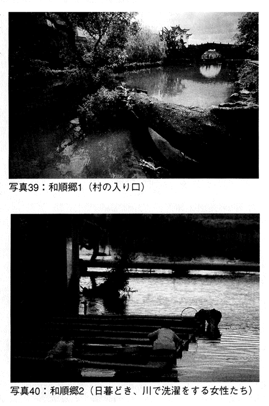

| 中国人、会って話せばただの人 近くて遠い隣人との対話 (PHP新書) | |
| 田島英一 | |
| PHP研究所 (2006) | |
中国人、会って話せばただの人
――近くて遠い隣人との対話
田島英一
まえがき
まだ私が高校生であったころ、弟の通っていた小学校のＰＴＡ会議に出席していた父が、けげんそうな顔をして帰ってきた。
「トイレに入っていて、妙な話を聞いてしまった。昼の弁当がウナギだったんだが、地元の保護者が数人、『今日は生まれてはじめてウナギを食った』って、ひそひそ話していたんだ。なんでもあそこの集落では、ウナギを食わないというオキテがあるらしい」
ここで父が「地元」といっていたのは、農民を中心とした「旧住民」地区を指している。私が、四歳から三十年近くを過ごした茨城県県南地方には、旧来の住民と、ベッドタウン化で新興住宅地に移転してきた「新住民」という、ある種エスニシティと階級をないまぜにしたような「自己／他者」意識が、あまねく存在していた。
あえてエスニシティといったのは、「言語」の相違が、両者の識別に大きな役割を担っていたからである。もとより子供には、「旧住民」も「新住民」もない。しかし、ひとたび小学校に上がれば、普段いっしょに遊んでいる近所の子供たち以外にも、多くのクラスメートができる。そこには、母音が四つで高低アクセントが一本調子、「べ」「ぺ」で文末を結び、「でれすけ」「ごじゃっぺ」などといった罵詈雑言を駆使する茨城方言の話者もいれば、いわゆる「標準語」の話者もいた。どことなくぎこちない意思疎通。運動会における「集落対抗リレー」などといった種目の影響もあり、やがてそれぞれの児童に、「他者」意識が刷りこまれていった。
大人たちは、この言語問題になおさら慎重であったようだ。茨城で商売を始めた父母は、「標準語を話すと地元の客から相手にされない」といって、日々「茨城弁」の実践に努めていた。ＰＴＡでは地元住民の保護者と協力し、商売でも「茨城弁」で地元顧客とやりあう。一見、地元に溶けこんでいるように見える父だが、まだ知らない「地元」があったということだ。小学生時代、私もある地元出身の教員から、「んだから、おめだぢみでな、○○団地のやづら、やなんだよぅ」（＝だから、おまえたちのような、○○団地の連中は、嫌いなんだ――の意。「○○団地」とは、「新住民」が居住していた地区の名称）と、説教ついでに捨てぜりふを吐かれ、ショックを受けた記憶がある。
あちらから見れば、我々はどこまでいっても京浜地区からの「流れ者」なのであり、集落の「オキテ」「いいつたえ」などといったものを、共有しうる立場にはないのだ。「共存」は公共空間という日常の表層においてのみ成り立ち、私的空間において我々は拒絶されている。つまり、「公民」としては隣人でも、「常民」としては他者だったのだ。あの事件以来、それまでおとぎ話のように思えた安部公房や大江健三郎の小説が、妙なリアリティーを持って迫ってくるようになった。
大学時代には、こんな経験をしたこともある。柳田國男の『遠野物語』に魅了された私は、三田祭（＝慶應義塾大学の大学祭）期間を利用して、岩手県遠野市を旅行した。自転車を借り、付近の集落をくまなくまわる。ある日、逗留していた民宿に戻ると、女将さんに声をかけられた。
「今日は、どこへ行ったんかい？」
「○○と、××をまわってきました」
「えっ？ あんた、○○へ行ったの？」
「そうですが、何か？」
「あんた、あそこはね、隠れキリシタンの村だよ！」
女将さんの話によると、彼らは決して集落外の者と交流しない。かつて村内で起きた殺人事件も、警察への情報提供を拒む村民によって、迷宮入りを余儀なくされたのだという。家には、他集落の民家同様、「おしらさま」の神棚がある。しかし、それを軽く押すと、忍者屋敷のように、裏から「デウスの神殿」が現れるのだそうだ。
明治初期にキリスト教禁制が解かれたのであるから、もはや隠れる必要もない。それでも「隠れキリシタン」であるのは、数百年の「隠れ」によって、近隣の集落からもローマを頂点とするカトリックのヒエラルキーからも外れ、孤絶した集団、一種の閉じられたエスニシティになってしまったからであろう。
「他者」は、確かに存在する（それとて、対話不能な相手だとは思わないが）。だが、それは「○○人」などというわかりやすいレッテルを貼られた形で、立ち現れてくるのではない。むしろ、よく知っているはずの日常の片すみから、幽霊のようにぬっと顔を出すものである。なぜなら、日常の慣性が働かない世界では、ある意味すべてが「他者」なのであり、とりたてて「まれびと」扱いしなければならない相手など存在しないからだ。
わざわざ外国まで旅をして「他者」を見つけたと感じるのは、占い好きの自己暗示にも似ている。母の叱責をも「女難」と感じ、こわれた水洗トイレさえ「水難」と見る。そういう手合いにとって、霊験なき占い師はいない。「他者」を期待して旅する者も、ささいな違和感をとりあげては、手当たり次第に「他者」の存在証明とするであろう。
＊ ＊ ＊
だから私は、この本のなかで、「他者」としての「中国人」を問うつもりはない。
世界が多様であるのは、疑いようもない。構造主義にせよポストモダンにせよ、二十世紀を彩った新思潮は、ある意味、十九世紀的な「普遍」「近代」へのアンチテーゼでもあった。十九世紀的な「普遍」「近代」には、西洋の「特殊」や歴史の慣性もまぎれこんでいたのであるから、それは一応理解できる。だが、そこには少なくともふたつの罠がひそむ。
第一に、主権国家単位の文化的多様性（あるいは「儒教文化圏」などといった地域単位の文化的多様性）のみを有意義な差異と見なし、内に対しては同質化を求め、それをダブル・スタンダードだとも感じない態度。つまりは、域内「常民」の文化的多様性と人間存在の普遍性を周縁化してはばからないような、悪しき相対主義への誘惑だ。国家間で「人権」などという議題がテーブルにのぼると、えてしてこれが、みずからの不作為を糊塗する口実として登場する。それも、「文化的多様性の重視」というリベラルな仮面をつけて。第二は、対話努力の放棄である。「違う文化コードの持ち主とは、話が通じないから話すだけ無駄」といった類の、一見世知に富んだ「大人」のエクスキューズだ。
悪しき相対主義は、「他者」を創出し、その属性を不変の本質と見る。残念ながら日中間でも、この手の言説は枚挙にいとまがない。たとえば、中国人が歴史問題を問えば、「いつまで昔の話をするのか」「未来志向こそ大切」といった反応が、日本人側から返ってくる。やがてそれは、「中国人はそもそも、相手が死んでも罪を赦さない、狭隘なメンタリティの持ち主」「過去は水に流す日本のみそぎ文化とは、異質な文化の担い手」といった、怪しげな文化論にまでいきつくのだ。
しかし、考えてもみてほしい。一九八〇年代、山口県萩市は、福島県会津若松市との友好提携関係に向け努力していた。そして、その試みが失敗した原因は、会津若松側の市民感情にあった。ある調査によれば、市民の三割近くが、「山口県にはこだわりがある」と答えている。かつて、死んだ会津兵に埋葬を許さなかったのは「官軍」であり、それに百二十年こだわったのは、会津若松人だ。六十年前の悲劇を忘れず、死した戦犯を赦さない中国人が文化的「他者」なのだとしたら、この両者は「他者」であり、つまり「日本人」ではないことになる。安易な文化論がいかにばかげているかという証左だ。
むしろ、ここで導かれるべき自然な結論とは、次のようなものではないだろうか。「中国人も会津若松人も同じ喜怒哀楽を持つ人間なのであり、被害者にとって記憶はぬぐいがたく、加害者はえてしてその傷に鈍感である」。これは、一定の普遍性を備えた、いたって単純な真理である。韓国のメロドラマに、韓国語を学んだこともない日本のご婦人が涙できるのも、製作者と視聴者がともに人間であるからに違いない。あえてその自然な結論を回避し、文化相対主義に逃げこむ人々にこそ、私はある種の作為を感じる。
相対主義は、時に不公正を隠蔽する。「文明の衝突」といい「現代の宗教戦争」といえば、話としては面白かろう。しかしたいていの場合、テロリズムの背後には、経済的不公正や抑圧が身をひそめている。そうした不公正は見逃しておいて、暴力的手段による異議申し立てを「○○教の伝統」といった類の文化的特性に帰する発想は、アンフェアであるうえに危険きわまりない。
相対主義は、歴史にもしのびこむ。「歴史は科学ではない」という人々がいる。なるほど、Ｅ・Ｈ・カー（イギリスの歴史学者）もいうとおり、人間はみずからを縛るコンテクストの存在を、謙虚に認めるべきだ。私が自国の歴史について「認識する」ときも、あくまでもそれは、西暦二〇〇六年という時代、日本という地点から、主観的なパースペクティヴを得たにすぎない。しかしカーは、一方でこうも警告している。歴史を科学と呼ぶことをやめてしまえば、ふたつの文化の間にある溝を恒久化することになる、と。それは、対話の拒否という知的怠慢を、正当化することである。
安易な「中国人論」は、こうした相対主義に口実を与えかねない。「中国人」「日本人」とは、各国国籍法の規定する法概念にすぎないという事実を、この際、本書の大前提としておことわりしておきたい。中国人であれ日本人であれ、その人に多少でもまともな知性があれば、「単一民族、単一言語、単一文化」などという言説には、おいそれと染まるまい。在日韓国朝鮮系の方々や、沖縄県民、アイヌ民族の話などはおくとしても、「大和系日本人」自体、かなりの程度、ハイブリッドな現実を無理やりローラーで伸ばして均質化して見せた、「想像の共同体」（Ｂ・アンダーソン）にすぎないのだから。
＊ ＊ ＊
かつて竹内好も主張していたが、出発点は、「同じ人間である」という、普遍性の承認であるべきだ。無論私は、「同じ人間である以上、中国に暮らす人々との間でも、無条件にコミュニケーションが成り立つ」などと主張するつもりはない。相手の「特殊」に対する配慮は、当然必要になる。
だが、その「特殊」が、「中国文化」「中国事情」に由来するとは限らない。広くユーラシア大陸に共有される「特殊」なのかもしれないし、逆に○○省の某地方にだけいえることなのかもしれない。「特殊」に配慮する場合、その「特殊」がどの層に宿るかまで考えておく必要がある。なんでもかんでも「中国」で片付けるのは、ナンセンスだ。そして、それがどの層の「特殊」であるかを知ろうとすれば、一度相手の「常民」の世界にまで下りてみるしかない。要するに、フィールドワークが必要になる。
フィールドワークから相手の「特殊」を見極めつつも、「普遍」という出発点に絶えず立ち戻って考える。このやっかいな作業をくりかえすことでしか、異郷に暮らす人々との対話は成り立たない。私がしつこく中国へ足を運ぶのも、ひとつには対話と理解への渇望からだ。そして最後はいつも、「畢竟、この人たちも人間なのだな」という、みもふたもない事実へと落ち着いてゆく。
本書には、私が「中国」の足もとに飛びこみ、歩きながら考えたこの十数年の、ほんの一部が記録されている。理論的枠組みを提示した研究書ではないし、かといって単純な旅行記でもない。随筆としても中途半端の感は否めないが、このいろいろな意味で難しい隣人との対話について読者諸氏とともに考えてみたいとの思いから著した。ご一読のうえ、ご批判、ご叱正を賜れば、幸いである。
紙面の関係から、訪れた場所のすべてを紹介することは、省単位で考えても到底できない。そこで、第一章では東部（広東省）を、第二章では中部（広西チョワン族自治区、湖南省、湖北省、河南省）を、第三章では西部（雲南省、チベット自治区）を紹介し、筆者にとって最も「土地勘」がある上海を含め、その他の省は割愛した。上海を中心とした華東地区については、拙著『上海』（ＰＨＰ研究所）において詳述するところがあったので、そちらをご参照いただきたい。
写真提供――著者
海辺の「中国人」たち
二〇〇四年三月・広東省
このとりとめのない話を、どこから始めようかと、随分迷った。いろいろ考えたすえ、結局、孫文にした。
近代以前の世界は、さして悪意のない自己中心性で満ちている。ローマにせよ長安、洛陽にせよ、みずからを唯一無二の「文明」の体現者と見なし、「中心」をもって自認する。「文明」の度合いは、「周辺」へ向かうにしたがって低下する。やがて異質な文明世界（＝非「文明」世界）につきあたったところが、つまりは世界の果てなのだが、これも決して固定的な国境ではない。そこから先に住んでいるのは、ある意味人間ですらない。というより、「人間」という一種普遍的概念が、文明を超えて共有されていたかどうか、それすら定かではない。このような「世界」のあり方を、Ｂ・アンダーソンは「宗教共同体」と呼んだ。ここで「文明」とは「聖なる教え」であり、その聖典は「聖なる文字」によって綴られる。アンダーソン同様、ナショナリズム研究者として知られるＥ・ゲルナーは、この「聖なる教え」を「高文化」と呼んだ。人口の大半を占める食糧生産者は、小さな地域ごとに切り裂かれたフォークロアの世界、ないし「低文化」内で生活している。文官、聖職者、貴族といった特殊な階層だけが、「高文化」にアクセスできる。
「中国」の文脈でいうと、「四書五経」などを聖典とした礼教秩序が「聖なる教え」であり、そうした「高文化」の享受者とは、士大夫階層であったということになる。ただし「中国」では、比較的身分の固定されていた中世欧州とは異なり、食糧生産者から士大夫階層への道が、「科挙」という形で、一応開かれていた。近代初期になっても福澤諭吉が「門閥制度は親の仇」といった日本より、ある意味で進歩的ではある。後天的教育を重く見る、儒家の伝統も手伝ってのことであろう。
アンダーソンによれば、欧州人が「人間存在の手の施しようのない多元性」に衝撃を受け、「宗教共同体」から目覚めたのは、大航海時代であったという。なるほど、近代の幕開けを告げるルネッサンスは、「東方」との交易で栄えるイタリア諸都市で起こった。だとすれば、中国においてその契機に恵まれていたのは、疑いなく広東、福建であろう。中国東南部沿岸に位置するこの両地は、密航、域外就労、密輸、海賊といった形で、明清の海禁政策に風穴をあけ続け、域外諸民族や華僑社会との連絡をも保った。まさに、「天高皇帝遠」（＝遠隔の地には中央の統治もおよばない）というやつだ。
アヘン戦争以降は、英仏の貿易基地ともなっている。変法運動の旗手であった康有為、梁啓超や、洪秀全、孫文といった種族主義的反清運動家の多くが広東籍であったことは、おそらく偶然ではあるまい。天地会や哥老会といった反清結社の多くも、この（＝福建）・粤（＝広東）の両地で勢力をのばしている。
そんなことを考えているうちに、彼らが生まれ育った土地を、改めて訪れたくなった。
広東に来るのは、何度目だろう。過去に、広州、深、珠海、汕頭、東莞、江門、仏山、中山などを旅した。いずれも、大した目的はない。ただ外資の工場が集中する地区を見てみたいとか、経済特区をのぞいてみたいとかいった理由で、ぶらりとまわるのが通例であった。
私は、なんとはなし香港という街になじめない。ソフト面は好きだ。文化的多様性と、高い市民意識。大陸諸都市や日本よりも、よほどあかぬけている。問題はハード面。林立する摩天楼の間を徘徊していると、毛髪にひそむシラミになったような、そんな息苦しさを覚える。それでたいていは、広州から広東入りする。
広州は、「羊城」「穂」などとも称される。古代、穂をくわえた五頭の羊にまたがって仙人が降り立った、吉祥の地であるという伝説によるものだ。現在、越秀公園内に、広州の象徴たる五羊像が建っている。はじめてこの街を訪れたのは、一九八九年の暮れのことだ。実は、留学先の上海から、はじめて訪れた外地でもあった。まずは、そのときの話から始めよう。
私の第一回中国留学は、一九八九年九月から一九九〇年八月にかけてのことであった。場所は、上海・復旦大学。留学生活が四カ月目に入り、そろそろ旅行でもと考えていた私を、当時早稲田大学から留学に来ていた友人が、引っぱり出してくれた。彼は広州からそのまま香港経由で台湾に向かい、私はひとり汕頭を経由して、厦門まで足をのばした。はじめての一人旅が、まさに・粤周遊となったのだ。
「引っぱり出してくれた」というのは、これがきっかけで、それまで出不精だった私に旅行熱の火がついたからだ。おかげで指導教授とお会いする機会もめっきり減ってしまったのであるから、ぐうたら学生の出発点にもなっている。しかし、北京、上海を見て「中国」を理解した気になることの愚かさは、肌身で実感できた。あのとき、彼が広東料理で私を釣っていなければ、私は今ほど「中国」に魅せられてはいなかったかもしれない。
今でも忘れないのは、広州白雲空港に降り立ち、リムジン・バスで市街へ向かったおりのこと。車内には、ラジオのクイズ番組が流されていた。幸い、白話（＝広東語）ではなく普通話（＝共通漢語）であったので、意味がとれた。「広東料理には百数十種類の蛇が使われていますが、『○○湯』というスープに用いられる蛇は、次のどれでしょうか？」。なんともはや、広東らしい「出迎え」に、苦笑がもれたものだ。
バスは広州駅前に到着、そのまま駅にほど近い華僑酒店に宿泊した。友人が香港行きの切符を買うのに便利であったという理由と、そこの早茶（＝朝の飲茶）がうまいという、彼の進言に基づく選択であった。中国のホテル料金は部屋単位で表示されるのが普通で、ふたりでツインに泊まれば、料金は折半となる。彼が私を誘った理由も、ひとつはそこにあった。当時三つ星であった華僑酒店のツインは、一泊一二〇元（＝当時のレートで五〇〇〇円）ほどであったように記憶している。
彼は忙しい。この旅も、いくつか重要な目的をかかえていた。今でこそ、ＳＡＲＳの流行する街でも平気で歩けるような無神経男に堕しているが、当時の私はといえば、まずは小心な中国旅行ヴァージンであった。今思うと、彼もそれを承知で、私を突き放してくれていたのかもしれない。若干の不安を覚えつつも、ひとり広州の街をぶらついてみることにした。
広州の街は、私の好奇心を十分に刺激した。まずは、当時は上下九街（広州屈指の商業区）近くにあった、自由市場を散策した。いるいる。売り手が叫び、動物が鳴く。下手な動物園より、よほどにぎやかだ。籠に入った無数のヘビ、アルマジロ、ミミズク、ハクビシン......。ネコはなぜか、ほとんど子猫であった。食卓にのぼる運命を知ってか知らずか、道行く人々に愛らしい声で鳴いてみせる。軒先にぶら下がるアヒルの丸焼きは、横浜中華街でもよく見るが、ここではイヌの丸焼きが下がっていた（写真１）。
冷凍保存した刺身が一味落ちることは、たいていの日本人が知っている。本当の鮮魚を知る漁師は、スーパーの切り身が食べられない。多くの中国人には、肉についても似たようなこだわりがあって、できるだけ「おろしたて」の肉を食べようとする。だから、動物の多くは、生きたまま屋台に並べられているのだ。買い物の仕方が面白い。まずウサギの屋台に行き、ウサギを一匹「おろす」よう店主に命じる。その足で魚や野菜を買いに行き、戻ってくるころには、哀れウサギは肉塊と化しているのである。若い女性が、怖じ気もせずにそれを受け取る。今夜のスープは、ウサギ汁らしい。
広東人の食卓に、スープは欠かせない。やかんを細長くしたような独特の陶器で、時間をかけて肉、野菜を薬草とともに煮こむ。具はダシと割り切り、主にスープを飲むのである。同じ広東省の料理でも、広州料理（＝粤菜）は潮州料理に比べて油がきつい。たとえば、潮州料理の前菜が、塩茹でにしてそこそこ脂の抜けたガチョウ、豆腐などであるのに対して、広州では「化皮乳猪」（＝甘い味付けで丸焼きにした子豚の皮付き肉）などが用いられる。炒め物に使う油は、多くが花生油（＝落花生油）だ。しかも漢方によれば、広州は水が悪いという。スープには、水や油の負担から体を守る、漢方薬としての役割も期待されているのだ。食後は、さらに涼茶を飲む。これも茶とは名ばかりで、一種の漢方薬だと考えてよい。
その後この自由市場は、欧米諸国の動物愛護団体等の抗議を受け、郊外へと引っ越すことになる。国際都市をめざす広州としても、体裁が悪いと判断したのであろう。郊外へと移った市場が、二〇〇三年のＳＡＲＳ騒ぎで、ウイルスの攪拌器として再び「脚光」を浴びたのは、周知のとおりである。
引き続き沙面に足をのばすと、一台のトラックが、荷台に二〇～三〇人ほどの若い女性を載せて現れた。皆、首からプラカードのようなものを提げている。同乗している女性警官の様子から、噂に聞く「さらし者」だとわかった。プラカードは、罪状を記すためのものだ。多くは、春をひさぐ女性である。「殺鶏給猴看」（＝ニワトリを殺してサルに見せる、つまり見せしめにする）とはいうが、これもまた一種の教育なのだ。広東語なのでよくわからないが、おおかた、群がってきた野次馬に向かって、売春の非合法性、反道徳性を訴えているのであろう。（１）
当時上海で、こうした女性を見かけることは少なかった。それが広州についたとたん、ホテルの電話が鳴る。彼女たちからの、誘いの電話だ。
「サービスはいかが？」
「誰だ、君は？」
「服務員」
「ロビーのフロントにいる服務員？ それともこの階の服務員？」
「私は外の服務員なの」
万事がこんな調子であった。私の印象では、中国でこの手の現象が一番はなはだしいのが海南省、それに次ぐのが広東省と雲南省だ。四川省、湖南省といった内陸諸省から供給される「民工」（＝主に農村出身の出稼ぎ労働者）で、労働集約型企業（多くは外資か香港・台湾資本）を成り立たせている広東。雇用形態は住み込みのパートに近く、民工の地位は不安定だ。職を失った少女が身持ちを崩し、搾取に疲れた少年が犯罪者集団を形成するのは、いわば一種の構造的な問題でもある。
上海では夜間もショー・ウインドーに商品を並べたままだが、広州では必ずシャッターを閉める。一般家庭にまで核シェルターまがいの盗難防止用扉が装着され、街角では棍棒を持ったガードマンがひったくりに備える。麻薬、ＡＩＤＳ、ペテン、誘拐......悪と悲劇のるつぼと化した広州駅前には、治安維持のため湖南省の武装警察（＝軍隊に準ずる装備を持つ治安部隊）が呼ばれたほどだ。広州市民に、そろそろ防犯疲れが見えはじめている。しかしこれは、民工を悪者にすれば済む問題ではない。
二〇〇三年に起こった珠海日本人集団買春事件は、記憶に新しい。関西の某企業が社員慰安のため企画したマカオ旅行が、集団買春という形で脱線してしまった。たまたま一九三一年の「満州事変」における国辱日（＝九月十八日）に近かったこともあり、これがインターネット世論を刺激した。日本人を罵倒する書きこみが殺到し、やがて中国外交部までが事件をとりあげざるをえなくなる。中国政府はとうとう、ＩＣＰＯを通じての「主謀者」国際指名手配にまで踏み切った（二〇〇五年末に発覚した上海領事館の日本人職員の自殺事件は、記憶に新しい。最近の日中両国間では、事務レベルで手打ちにした案件が表面化し、世論の圧力で政治が動かざるをえなくなるというパターンが、くりかえされている）。
事件に関わった日本人を弁護する気はない。しかし、彼らの日本人批判は、問題の矮小化につながりかねない。普段彼女たちを買っているのは、そのほとんどが中国人男性であろう。民族問題を前にしては「国外の反中国勢力による陰謀」といい、風紀の乱れを指摘されては「国外資本主義の腐敗文化流入」という。問題の所在を外に求める姿勢は、真の問題解決を遅らせるばかりだ。たとえ日本人にどれだけ不道徳な行為があったとしても、この問題の背景には社会的、経済的不公正があるということを、彼らには忘れないでいてほしい。
さて、気の毒な女性たちをあとに散策を続ける。かつてここは対外貿易の中心基地であり、多くの「洋人」たちが暮らしていた。乾隆帝（在位一七三五～九五）に謁見かなった英国使節マカートニーも、一時ここに滞在している。広州は、「番禺」と呼ばれた時代から、海外交易で栄えた街だ。海のシルクロードは、広州から東南アジア、さらにはマラッカ海峡を経由して、インド、イラン、アラビア半島、ローマ帝国にまでのびていた。
秦の始皇帝が派遣した遠征軍によって、この地は一度、中華帝国の版図に入る。秦の崩壊後は趙氏政権が独立、「南越」国が成立した。広州駅にほど近い「南越王墓」遺跡からは、ペルシャ製と考えられる銀器やガラス器が出土している。その南越国が再び中華帝国の版図に入るのは紀元前一一一年、漢の武帝の遠征を受けてのことだ。この大遠征で、番禺はもちろん、現在のヴェトナムまでが中華帝国の支配下に入る。これがきっかけでヴェトナムは、シンガポールと並び、東南アジアで中華文明圏に属する数少ない国となった。
八世紀、唐の玄宗の時代には「市舶司」（＝現在の税関に相当）が広州に設置される。唐代から元代にかけては、アラビアやペルシャの商人たちが「蕃坊」と呼ばれる租界を形成、その中心にはモスクが建った。下って清の康〓年間（一六六二～一七二二）には、沿海四関のひとつとして「粤海関」がおかれた。乾隆帝が民間交易を大幅に制限した際にも、「粤海関」は唯一、対外貿易活動を続けている。
広州のオールド・タウンは、北は広州駅から南は沙面にかけてのあたりになる。うち、中山六路の南側がかつてのムスリム街で、今でも回族（＝イスラム教を信仰する少数民族）が多い。ここに建つ懐聖寺（写真２）は、中国最古のモスクのひとつだ。ムハンマドの弟子であるアブー・ワンガルによって、七世紀前半に建立されたと伝えられている。今でも、金曜日には塔からアザーンが流れ、当地の回族はもちろんのこと、広州に居住する外国ビジネスマンや出稼ぎのウイグル族など、様々な人々がここに集い礼拝を行う。礼拝の帰りには、門前に店をかまえる回族から、ハラルの食肉（＝聖職者によって清められた羊肉など）を買って帰る。ここは、内外のムスリムが出会い、情報が交換され、文化が融合する場所でもあるのだ。
中山六路の北側は、一変して光孝寺、六塔寺などの古刹が軒をつらねる仏教街だ。一方、地下鉄「公園前」駅付近には、満族コミュニティーが存在する。彼らは、乾隆帝時代に広州防備に派遣された八旗兵の子孫だ。また、珠江沿い、海珠広場近くには、聖心堂というゴチック様式の美しいカトリック教会が建つ。イエズス会をはじめとするカトリックのミッションが、マカオをアジア伝道の前線基地としたこともあり、広州は常に大陸伝道のゲートウェイになった。伝道師の多くは、広東から江西省、安省（ないし浙江省）を経て江蘇省南京へといたり、そこから北京をめざした。あのマテオ・リッチも、広州の西、珠江の上流に位置する肇慶の街で、漢語を学びつつ上京の機会をうかがっている。（２）
交易は移動の生業だ。オールド・タウンの文化的多様性は、広州が古来より国際都市であり、様々な人々が行きかい、文化的融合をくりかえしてきたことを物語っている。
あれから、十五年。二〇〇三年の春、私は再び沙面に立ち、その南端に位置する白天鵞賓館に宿をとった。部屋からは、珠江を一望できる。かつて、このホテルのロビーでコーヒーを飲みながら見た珠江の夕日が、今も忘れられない。
公費の長期留学生というものは、帯に短したすき、に長し。中国政府から支給される奨学金では、学生食堂で食事をするだけでも赤字になる。持ち出しの日本円を、最低でも一年間、大切に使わなければならない。かといって、あまり出費をしぼると心身ともに追いつめられ、下手をすれば留学が続けられなくなってしまう。バランス感覚が必要だ。
企業派遣の留学生は、勤務先からの給与で大名生活を堪能していた。時おり大学の宿舎に泊まる旅行客は、病気も覚悟で貧乏ツアーを楽しんでいた。だが、我々公費留学生には、お大尽様を決めこむ経済力もなければ、気楽に貧乏する自由もない。しかも十四年前といえば、一元が四〇円（現在の三倍近く）に相当した時代だ。当時広州で最高級といわれた白天鵞賓館に、泊まる度胸はない。このとき泊まってみたのは、あのときの「怨念」を晴らそうという思いもあってのことだ。
広州は変わっていた。高架路が増え、地下鉄が走る。何もなかったオールド・タウンの西側には、天河区という新都心が形成されていた。現在香港方面へは、ここにある広州東駅から高速列車（電化済み）で向かうことになる。日本領事館を擁する花園酒店の付近には、一九九八年に清算、負債の踏み倒しで邦銀をはじめとする日本の出資者に色を失わせたＧＩＴＩＣ（＝広東国際信託投資公司）の六〇階建てビルが、鈍色の空に寒々とそびえ立っていた。上海の浦東地区がそうであったように、かつて珠江南岸は、市民から辺地扱いされ、住宅地としては人気がなかった。それが、地下鉄二号線沿いを中心に、急速なベッドタウン化が進んでいる。
ただ、広州にはかつてのようなオーラもない。たとえば、照明だ。一九八九年当時、上海一の繁華街と呼ばれる南京路も、夜八時ごろには照明が落ち、どこもかしこも門が閉ざされていた。不夜城と化した今の上海を知る若者に、ひとり歩きがはばかられる闇夜の南京路を想像してもらうのは難しい。バンド（＝黄浦江に面した、旧イギリス租界のウォーター・フロント）のライト・アップも、国慶節（＝十月一日）のような祝日でもなければ行われなかった。停電も少なくなかった。それが広州はといえば、（香港ほどではないが）みごとなクリスマス・イルミネーションではないか。これが同じ中国かと舌を巻いたのを、今でも覚えている。それが現在、電飾などというものは、内陸の都市でも珍しくなくなった。工業化が進んだ広東省では、かえって「電荒」（＝電力不足）が深刻化し、郊外ではしばしば計画停電が行われている。
無論、変わっていない点もある。まずはコピー商品。海賊版ＤＶＤはどこの都市にもあるが、広東省ほどひどいところは珍しい。いたるところで、映画館内で不正収録された映画ソフトが、一枚五、六元（＝一〇〇円弱）といった値段で売られている。天河にあるブック・センター前では、禁書に指定された書籍の海賊版が、堂々と並べられていた。一九八九年には、まだ日本で発売されていなかったファミコン・ソフト「ドラゴン・クエスト」が箱つきで売られているのを見て、仰天した記憶がある。あのえげつなさは、健在だ。
第二に、庶民性。上海の中間層には、外国語とＰＣ（＝パーソナルコンピュータ）を操るようなホワイトカラーが多い。彼らは、欧米のブランド品を好む。それが広東はといえば、「平民化」の街とも称され、安売り商品にこと欠かない。北京路、上下九といった繁華街でも、ジーンズ一本一五元（＝二〇〇円強）などというのは、さして珍しくない。また、海珠広場の問屋街に行けば、それこそ日本の百円ショップが仕入れに使うような値段で、日用品を購入できる（「小商品城」と呼ばれる浙江省義烏にも行ったことがあるが、値段はほとんど変わらない）。全体に実用重視で、ブランド志向が薄い。
広東人はしばしば、上海人の虚栄を揶揄する。しかし、金を持たせればそれなりに見栄をはるのは、広東人も変わらない。見栄のはり方が、上海人とは違うだけだ。広東の金持ちから受ける印象は、典型的な「暴発戸」（＝成金）。背広にガラ物のポロシャツ、突き出たビール腹、純金のネックレスにブレスレット、石の大きさで勝負するごつい指輪、妊婦の前でも平気でふかす「中華」ブランドのタバコ、プレートにやたらと「８」（広東では「発＝儲かる」に通じ、縁起がよいとされる）が並ぶメルセデス......服装をカジュアルにまとめてジャグァーやアルファロメオに乗るような「すかした」手合いは、まず見かけない。
こうした泥臭さは、多方面におよぶ。首都北京や、国際金融センターともなりつつある上海では、外来文化にさほど抵抗がない。ことに上海には、外来文化を吸収することで「海派」文化を築いてきたという伝統がある。拙著『上海』（ＰＨＰ研究所）でも紹介したが、上海にあれほど浸透したコーヒー文化が、ここではケーキや食事の脇役でしかないというのも、広州の文化的保守性を裏づける現象であろう。
上海と広州の違いは、地下鉄のアナウンスにも表れる。上海の地下鉄は、次の駅名を共通漢語と英語でコールする。上海語は使わない。だが、広州では共通漢語、広東語、英語と、三言語でコールする。しかも、英語による情報伝達に、さほど重要性を認めていない。たとえば、上海地下鉄では、
The next stop is People Square.（＝次は人民広場。）
The next stop is South Huangpi Rd.（＝次は黄陂南路。）
となる。一方、広州地下鉄では、
The next station is Haizhuguangchang.（＝次は海珠広場。）
The next station is Tiyuxilu.（＝次は体育西路。）
とコールしている。地名は固有名詞なのであって、中国語の発音のままでよい。「郷に従う」ことのできないやつは来なくていい、という理屈のようだ。こういう問題を、外国人に対する親切心よりも、民族の誇りという尺度で考えてしまうあたりが、ある意味いかにも広東らしい。
数日、広州の街を散策したのち、孫文（一八六六～一九二五）のふるさとである中山市へ向かうことにした。「中山」とは、孫文の号に由来する地名で、かつては香山県と呼ばれていた。それが孫文の死後、国民政府によって中山県に改称され、現在の中山市へといたっている。珠海デルタの西岸に位置し、海に面した珠海、マカオも、かつては広義の「香山」に含まれていた。広州からは道のりにして約一〇〇キロメートル、直通バスなら二時間足らずで到着する（図１）。
中山行きのバスは、広州市のあちらこちらから出ている。とりあえずは、天河バス・ターミナルを利用することにした。白天鵞賓館から天河へは、黄沙駅から地下鉄一号線を利用すればよい。地下鉄は現在も建設が進んでいるが、本書執筆時点で利用可能なのは、芳村方面からオールド・タウンを抜け、西の天河へといたる一号線と、アヘン戦争の激戦地・三元里から広州駅を経由して、珠江南岸の琶州方面へといたる二号線の、二本のみだ（三、四号線が、二〇〇五年十二月に開通）。両者は、オールド・タウンのほぼ中央に位置する公園前駅で交差する。開通当初、上海地下鉄と同様にジーメンス社製車両が多かった。二〇〇四年現在、二号線のみ香港地下鉄にもあるようなアクリル製の落下防護柵が設けられている。駅のデザインには、香港地下鉄の影響が濃厚だ。
朱鎔基前首相がドイツとの良好な関係を維持していたせいもあり、中国市場の自動車や鉄道といった分野では、日本はドイツの後塵を拝してきた感がある。特に、前首相のお膝元であった上海の乗用車市場は、一時期フォルクスワーゲンのひとり勝ち状態であった。世界初の実用リニア鉄道も、ドイツの技術が採用された。一度、上海市交通部門の幹部に、「日本製の地下鉄車両を使う気はないのか」ときいてみたことがある。「ＯＤＡ（＝政府開発援助）でもつけてくれたら考える」との、つれない返事であった。
加えて広東では、もともと対日感情がよくない。無論、背に腹はかえられないから、仏プジョーが広州から撤退すれば、地方政府はホンダの投資を積極的に誘致する。だが、民間レベルでは、「選択可能であれば日本製品は買いたくない」との声も少なくない。いつだったか、深で働く知人と広州地下鉄に乗っていたときのこと。窓に貼られたヤクルトの広告を見て、「あれ、日本の会社が開発したんだ」といったら、常飲者であった彼はそれっきり買わなくなってしまった。やぶへびだったと、後悔している。二〇〇五年四月の反日デモでは、天河にあるジャスコが襲撃されているが、公安局はひかえめな対応しかとらなかった。あるいは、地方政府の公共投資にも、民間の反日感情が影響しているのかもしれない。
広州の地下鉄は、北京や上海に比べて割高だ。距離にもよるが、三～八元（＝四〇～一〇〇円）程度で、磁気情報の入ったプラスチック製の丸い切符を買う。入場する際は、それを自動改札機にかざし、出る際は、自動改札機の投入口に投入する。ただし、切符の有効時間は入場から二時間だ。
面倒なのは、切符の購入。そもそも広東人は、「硬貨は物乞いにくれてやる金」（ホテルでチップを払う際は要注意）だと考えている人が、少なくない。だから、上海のように一元硬貨が出回ってはいないのだ。紙幣は、ぼろぼろになってしまっているものが、少なくない。比較的きれいな高額紙幣（＝五〇元、一〇〇元札）は、自動販売機では使えないことが多い。それで広州に行く機会の多い私は、広州市の公共交通機関すべてで使用可能なカードを持ち歩くことにしている。ＪＲ東日本のＳＵＩＣＡなどと同じで、駅で金額をチャージする仕組みだ。
車内は、北京や上海に比べて、全体にすいている。昼間は、中学生（＝日本の中学・高校生）の姿が目立つ。日本とは違って、午前の授業終了後に一旦帰宅し、昼食、昼休みを済ませてからもう一度授業に戻る。かつては制服らしい制服もなかったので、一見して中学生とはわからない場合もあった。現在多くの学校では、行事に際しては制服を着用し、普段は学校ジャージというスタイルが定着している。ジャージにも彼らなりのおしゃれがあって、ワンサイズ大きめのを着用し、パンツのほうはわざわざお尻半分くらいまでずり下ろしてはく。日本の若者が、米国におけるバスケットのストリート・プレーヤーやラッパーから影響を受け、だぶだぶのジーンズをだらしなく（というのは、我々「大人」の感覚だが）はいたのと、ちょっと似ている。中国の「大人」たちも、これには当惑気味だ。
あれも彼らなりの自己主張であり、お仕着せの衣服に対するささやかな抵抗なのであろう。一般に日本でも、方法は体の線を徹底的に隠すか、極度に露出するかのどちらかであった。七〇年代後半から八〇年代前半の若者は、長い学ランやスカートで（場合によってはマスクまで着用して）身体を隠した。九〇年代の若者は、八〇年代のハマトラ・ファッションに学びつつ、「足が太く見える」というハマトラの欠点を、白いルーズ・ソックスのもたらす錯覚（膨張色の白とだぶだぶのデザインが、膝から上を相対的に細く見せる）でごまかし、大胆に体の線を出した。肌の色を黒くすれば、線は一層細く見える。日本の街には、ゴーギャンの絵から飛び出してきたような少女があふれていた。広州の中学生は、どうやら隠すほうで主張しているようだ。
さらに「大人」たちを困惑させているのは、彼らの恋愛模様である。全体にカップルが多く、それなりに親密な行為にもおよぶ。中国では、中学生の恋愛はご法度だ。大学生でさえ、恋愛が認知されるようになったのは八〇年代後半から。それ以前は、タブーに近い話題であった。今でも、学生結婚を認める大学と認めない大学があり、ネット上などでは、その是非をめぐって議論が繰り広げられている。ましてや中学生は、勉強に専念すべきものであって、「早恋」（＝早すぎる恋）などはもってのほかだ、というのが世論の大勢だ。だが、教員や両親が何をいおうとも、人が心に思うことを束縛できようはずもない。制服の普及によって、カップルが中学生であることも、一目瞭然となった。「大人」の考える理想と、現実とのずれが顕在化し、メディアまでがこのいささかばつの悪い論争に巻きこまれている。
地下鉄を降りて昼食をとり、午後二時半発のチケットを買った。「天河バス・ターミナル」は、広州駅前にある「広東省バス・ターミナル」「広州市バス・ターミナル」ほどの規模はないが、車両が全体的に清潔かつ大型で、高速道路を走る「直達」（＝直通便）を多数かかえている。直通便は普通便に比べて料金が数割、高めになるが、一般道で客をひろいながら走る普通便に比べて格段に速い。中山までの運賃は、三〇元（＝四〇〇円程度）。距離にもよるが、しばしばコンパニオンひとりが同乗し（普通便の場合は、車掌が同乗）、乗客に飲料水が配られる。大型荷物は、ボディー下部の荷物室に収納される。下手な空港よりもよほどしっかりした管理が行われているので、まずは安心だ。
▼中山へ
広州市街を抜けると、田園風景が広がる。水田のほか、芭蕉、バナナなどが多い。ところどころに、清潔感のない工場や、民工の宿舎と思われる建物が点在している。
中国の戸籍制度は、農村と都市の二元管理を原則とする。農村戸籍保持者は、計画生育（＝いわゆる「一人っ子政策」）などにおいて若干の優遇を受けられるが、都市市民にはない制限も多い。たとえば、農村戸籍保持者（必ずしも農業従事者とは限らないが、以後、便宜的に「農民」と呼ぶ）にとって、福利厚生とはすなわち土地である。生産手段としての土地を与えてあるのだから、あとは自分でなんとかしなさいというのが、民政部門の基本スタンスだ。最低生活保障、失業保険など、都市市民が享受する福祉からは、こぼれおちてしまっている。したがって、彼らが沿海地区の諸都市で出稼ぎに従事すれば、背水の陣を覚悟せねばならない。労働災害被害者の放置や、給料の踏み倒しといった事件もあとを絶たず、地方政府庁舎前では、座りこみ抗議を行う民工をよく目にする。
民工を雇用の調整装置としてしか見ていない経営者も多いなか、失業者をどう保護するのか。医療や子弟の教育を、どう保障するのか。工場内で人権を蹂躙するような不祥事があっても、ＧＤＰベースで政治的業績をはかる風潮のなかでは、工場の撤退を恐れる地方政府指導者によって、もみつぶされてしまうケースが少なくない。ひとたび失業すると、「三無人員」（＝ＩＤカード、居住証明、工作証明がない不逞の者）扱いとなり、収容施設に送られる可能性もある。時に、扱いが非人道的になる背景には、治安の悪化に伴い広州市民がつのらせていった民工に対する警戒心、反感もあろう。一部日本人が外国人による犯罪をことさら強調し、それを聞いた人々が、あたかも外国人そのものが脅威であるかのように誤認するのと、似ていなくもない。
二〇〇三年に起こった「孫志剛事件」がきっかけで、扱いが多少は人道的になった。（３）多くの都市では、二元戸籍制度の見直しが進み、出稼ぎ労働者子弟の公教育受け入れなど、部分的な実験も行われている。一部都市では、ＮＰＯなど民間組織を核とした支援事業も、細々とではあるが始まっている。労働部門などでも、みずからの不作為に対する反省が見えはじめた。珠江デルタでは、冷たい仕打ちに耐えかねた民工が、出稼ぎ先を長江デルタ（＝江蘇省。上海市、浙江省を中心とした、長江三角地域）などにシフトする現象（＝「民工荒」）も起こりつつある。特に、劣悪な待遇や人権問題がしばしば指摘される、台湾系工場を敬遠する傾向が強い。それで、経営者が地元の労働局に泣きつくケースも目立ってきた。「活該」（＝自業自得、ざまあみろ）としか、いいようがない。
かつて広東、福建では、人身売買同様にして海外に送り出された低賃金労働者を、「猪仔」（＝豚の子）と呼んだ。海外華人の祖先には、そうした人々も含まれている。かつて「猪仔」を生んだこの地で、外資に安価で提供されている民工が保障もないまま放置され、かつ治安悪化の元凶として嫌忌されているというのは、なんという歴史の皮肉か。あのうす汚れた宿舎のひとつひとつに、我々にははかり知れない孤独と苦悩が、息をひそめているはずだ。
工場や宿舎の周りでは、異臭を放つどす黒い排水が、もとは農業用水路であったろう溝を流れている。こうした環境破壊も、広東が支払った代価のひとつだ。あの水が流れこんだ田畑から、本当に人間の口にできる作物が収穫できるのかと、いぶかしくなる。薬草スープや涼茶の前に、空気や水をなんとかしないと寿命が縮みかねない。
かつての日本がそうであったように、中国民衆の環境意識は相当の改善を要する。加えて、先述のとおりＧＤＰベースで地方官僚の業績評価をするものだから、環境破壊行為があるのを承知で、それを取り締まろうとしない官僚も少なくない。環境対策をなおざりにすることは、環境投資に消極的な企業に対して、減税、免税と同じ誘致効果を発揮する。ここ数年、胡錦濤国家主席、温家宝総理の調整路線の影響もあって、ようやく「緑のＧＤＰ」「科学的発展観」といったスローガンが打ちだされた。地方官僚の業績評価方法についても、見直しが必要だとの指摘が相次いでいる。
中国の現状を考えるうえではずせない、微妙な関係がふたつある。ひとつは、この中央と地方の関係。中国には、日本でいうような地方公務員が存在しない。末端の行政機関である郷鎮政府にいたるまで、すべて国家公務員だ。理論上は、木下藤吉郎的な、地方から中央への出世街道もありうる。官僚の上昇志向は万国共通であり、無理をしてでも業績を上げようとの風潮は絶えない。米国などからくりかえし批判されている計画生育政策も、強制避妊手術、強制堕胎といった事態にまで発展するのは、ひとえに地方が暴走した結果であるといえる。中央政府では「説得と教育を軸に」と指示していても、業績に敏感な地方官僚は非常手段に訴えやすい。だから、中央と地方は目的で一致していても、その手法においては、しばしば地方の面従腹背という様相を呈するのだ。特に、葉選平以来独自路線色が目立つともいわれた広東では、距離的な遠さも手伝ってか、中央のコントロールから外れやすい。広東某地区の官僚から、当地では「人狩り」が行われていると聞かされて、仰天したこともある。（４）
第二が、政治と社会の関係。選挙という過程に統治の合法性を求める「民主主義」とは異なり、中国共産党の統治は、結果においてしかその合法性を証明できない。だから、諸政策の結果には、ある意味「民主国家」以上に神経をつかう。
「中央集権」「一党独裁」ということばは、日本のメディアにおいて、ひとり歩きをしている。まるでやりたい放題の皇帝であるかのように中国共産党を見るものだから、問題が起こると、すべて党と政府の責任にしてしまいやすい。だが、「中央集権」であればこそ、地方が離反するのだし、「一党独裁」だからこそ、政治が結果に縛られるのだ。そのパラドクスを見ないと、この国がかかえる矛盾と困難は、理解できない。
リクライニング・シートによりかかって車窓風景を眺めているうちに、いつしか眠りこけてしまった。目が覚めたときには、すでに中山の郊外であった。広州は、周囲の「県」（あえて比較すると、日本の「郡」に相当）を「区」に編入しつつ、海へと向かって拡大している。だから、広州の市街地からは遠い中山も、今では一応広州の隣接市だ。広州と中山の郊外同士がつらなっていて、一見したところどこからが中山なのだか、よくわからない。バスは、一時間半ほどで市街地に位置する中山国際酒店前へと到着した。
そこからタクシーをひろって、あらかじめ予約をとってあった中山香格里拉大酒店（＝シャングリラ中山）へと向かった。旅行手配の大手ＣＴＲＩＰ（＝携程）のＷＥＢサイトを通しての予約だが、景品交換が可能なポイント（航空会社のマイレージなどより、よほど簡単にたまる）がつくうえ、ホテルの多くがディスカウント価格になるため、重宝している。シャングリラは五つ星だが、日本のホテルなら間違いなくスイートというグレードの部屋が、一泊八〇〇〇円（日本円）程度で済んだ。
中山は「石岐」と称される市街地に加え、二四の「鎮」（＝「県」よりも下級の行政レベル）を有する。面積は一八〇〇平方キロメートルで、ほぼ大阪府のそれに相当。戸籍のある定住人口は、約一三八万人である。珠江デルタ内でも、企業進出は盛んだ。著名飲料メーカー「楽百氏」のほか、小欖鎮の電器部品、沙渓鎮のアパレル、大涌鎮の家具など、鎮ごとに特色ある開発区が広がる。嶺南の田園に、不似合いな工業団地が点在していた。
拙著『上海』にも記したが、生産手段、文化、民族構成などを考えたとき、現在の中国を少なくとも三地区に分けることができるように思う。私はそれを、仮に「内中国」（＝農耕中国）、「外中国Ａ」（＝藩部中国）、「外中国Ｂ」（＝海洋中国）と呼んだ（図２）。

「内中国」「外中国Ｂ」は、ともに漢族の多い地域である。農村単位に分断され明確な種族概念を持たない「内中国」に対して、東南部沿海地区から東南アジアにまで広がる「外中国Ｂ」では貿易従事者が多く、日常的な異文化との接触を経験した。そこに、エスニックな意識が尖鋭化する契機もある。
冒頭で述べた前近代の「低文化」には、「宗族」と呼ばれる血縁幻想が含まれていた。姓を同じくする男系の一族が、祖先崇拝などの行為を結節点として、ネットワークを形成してきた。そうした血縁幻想にとって、「他者」とは通常、異姓の集団にすぎない。都市に移住することで、同姓集団が核となり、より大きな地縁集団（＝会館）を形成することもあった。また、都市内で、ある経済的ニッチを占有する、一種のギルドと化すこともあった。だがそれは、エスニシティであるとまではいえない。
一方、移住先が海外である場合や、都市内に非中華文明圏の成員が常住するような場合には、異なる状況が生まれる。会館や媽祖廟（媽祖は福建省に実在したとされる女性で、今では航海安全の女神として、「外中国Ｂ」で広く人々の信仰を集めている）は、エスニシティ・ネットワークの結節点となった。ここで「他者」とは、文字コミュニケーションすら成り立たない異文化保有者（＝異なるエスニシティ）であり、単に経済的ニッチをめぐり競争する他集団などではない。結果、漢字を使用する華夏の民という「我々」意識が、「彼ら」の存在により強化される。清代には、成功の抵抗や「三藩の乱」（一六七三～八一）など反清運動の拠点となったことで、「外中国Ｂ」の種族意識はさらに尖鋭化した。清朝皇帝をも「韃虜」（北方民族への蔑称）と見るような原初的ナショナリズムが生まれ、天地会のような反清秘密結社も、「外中国Ｂ」にネットワークを構築していった。
二〇〇五年春の「反日デモ」は、中国国外に広がった「外中国Ｂ」（＝北米や東南アジアの華人世界）を発信源としていた。デモは、はじめ国外に起こったのだ。それが国内に波及する直前には、「愛国的」なＷＥＢサイトの多くに、国外ＩＰアドレスからの書きこみが数多く見られた。昨今の「反日」感情も、この「外中国Ｂ」に広がる一種のディアスポラ・ナショナリズムと、深い関係がある。
一方「外中国Ａ」は、「少数民族」が多く居住する地域である。イスラム教、チベット仏教、南伝仏教など、中華文明圏とは異なる文明圏に由来する諸宗教が伝播、定着した。ゆえに、非漢族ナショナリズムの温床ともなっている。独立問題など、政府にとってなにかと敏感な問題をかかえるのも、この地域だ。九〇年代に共産党が推進した「愛国主義教育」には様々な意図があったと考えられるが、ひとつには、「外中国Ｂ」的なナショナリズムの力で、「外中国Ａ」的なナショナリズムの暴発を抑えこむ意図もあったのであろう。昨今暴発しているのは、むしろ「外中国Ｂ」的なナショナリズムであるが。
中山は、典型的な「外中国Ｂ」の様相を持つ街だ。古来、海外華僑、華人を輩出してきた「僑郷」である。現在、香港、マカオ、海外各国に、八〇万人の中山出身者が生活しているといわれる。そもそも、かつてはマカオまでが「香山」と称され、いわば「香山」の延長線上に位置する貿易港という扱いであった。明代の地理誌『廣志繹』には、「香山は諸外国人が停泊する地で、海岸から集落までは二〇〇里、陸路にていたる。ジャワ、ブルネイ、タイ、カンボジア、スマトラなど諸国人がそろう。はじめは停泊するだけであったが、荷がはけないと上陸して仮住まいする者が現れ、諸外国人もこれにならうようになった」といった記述がある。
ちなみに、「澳門」という地名の由来については、いかにも「外中国Ｂ」らしいエピソードが残されている。かつてこの地に上陸したポルトガル人が、現地人に「ここはどこだ」と尋ねた。現地人の答えは、「媽閣」というものであった。「媽閣」とは、今でもマカオの漁港近くに残る媽祖廟である。これがこの地方全体の名称であると誤解された結果、MACAUというおなじみの呼称が生まれたのだ。
ポルトガル人がマカオに残した古地図では、香山の海岸沿いに「カサブランカ」（＝白い家）という地名が確認できる。『中国の布教と迫害』に収録されたイエズス会宣教師の書簡にも、この地名が見える。かつてポルトガル人が拠点とし、アヘン戦争ではイギリス兵が殺到した海浜。孫文は、そのような地に生を享けている。彼の唱えた種族革命論にも、環境の与えた影響はあろう。
▼中山の街
「孫文」というのは本名だが、中国では「孫中山」と号で称されるのが通例である。欧米では、Sun Yat-sen（＝孫逸山）という字のほうが、人口に膾炙しているようだ。このスペリングは、共通漢語ではなく、広東語の発音に基づいている。
国父「中山」は地名としての使用頻度も高く、中国の大都市には「中山路」（＝中山通り）や「中山公園」が多い。いわゆる「人民服」も孫文が考案したとされ、中国では「中山服」と呼ばれている。
ホテルについたときには、午後五時をまわっていた。お目当ての孫文の生家へはどう行けばよいのかフロントで確認し、とりあえず街に出た。今日のところは、街中の散策だけでよい。ホテルは、市街地西部に位置している。タクシーをひろって、市街地中心の孫中山紀念堂まで出た。これを西に向かって歩くと、終日歩行者天国の孫文西路へといたる。暑い。実は、広東に来る直前まで、新疆、上海、杭州をまわっていた。特に、新疆の区都・ウルムチでは雪にあっており、広東についたばかりの私は、いまだ冬服を着ていたのだ。二五度はあると思われる湿気を含んだ空気が、ねっとりと皮膚にからみつく。幸い、広東の繁華街は、たいていどこも服飾店だらけだ。孫文西路まで歩きつくと、まずは薄手の服を物色した。ＢＧＭと呼ぶには、あまりにセンスとつつましさに欠ける音楽、魚屋まがいの呼びこみ、バイクの排気音と警笛、この喧騒は中国共通だ。
結局、ホテルに戻ったときには、両手に荷物をかかえていた。中国へ来るたび、私は家族に不義理をしている。地域研究貧乏症というやつで、半年以上も中国を離れていると不安にさえなる。クリスマスと正月、いずれも家族と過ごしたなどという年は、最近記憶にない。通りを歩いていても、その罪悪感から、無意識裏に妻や子へのみやげものを探す自分がいる。結果が、このざまだ。これで明日は、朝一番で郵便局に行かねばならなくなった。みやげものは日本に郵送してしまわないと、身動きがとれない。日本向けのＳＡＬ（＝航空機に余裕のある場合のみ航空扱いとなる船便）が大幅値上げとなり、最近では船便が定番となった。上海からだとＳＡＬで三～四日、船便では二十～三十日ほどで日本につく。広東からだともっと遅いから、食品は賞味期限との相談が必要だ。
ホテルには、無料のＡＤＳＬが引かれていた。早速、持参のノートパソコンをつないでみる。主義で携帯電話を持たない私にとって、中国国内で連絡をとるうえでも、ＰＣは大事な道具であった。中国ではＥメールのほか、ＯＩＣＱと呼ばれる通信ソフトが頻用されている。（５）ペンギンのマークが入った、ＩＣＱやＭＳＮメッセンジャーと同類のソフトで、中国国内では圧倒的シェアを誇る。通称「ＱＱ」（写真３）。かつてＷｉｎｄｏｗｓ日本語版でこれを使うのは至難のわざであったが（文字化けのため）、Ｗｉｎｄｏｗｓ２０００以降（Ｍｅは除く）は、表示、入力ともに多言語環境が確保されたため、使用可能となった。広州の某所で公務員をしている友人が、そのソフト上に現れた。
「おまえ、中山にいるだろ？」
「どうしてわかる？」
「ウィンドウ上にＩＰアドレスが表示されてる。ひどいやつだな。広東に来て、どうして連絡しない？」
「すまん。強行軍でね」
「広州へは来るのか？」
「実はもう行ったんだ。明後日、もう一度広州へ戻る」
「中山へは、なんの用で？」
「孫文の生家が見たくて」
「中国人の俺だって、見たことないぜ。物好きだな」
「今ごろ気づいたのか？ 広州に戻ったら飯でも食おう」
「ＯＫ、８８！」
「８８」というのは中国のネット用語で、bye byeつまり「さようなら」を意味する。ほかにも、「３１６６」（＝さようなら［日本語に由来するらしい］）、「ＧＧ」（＝おにいさん［漢語の哥哥に由来］）、「ＰＬＭＭ」（＝可愛い女の子［漢語の漂亮妹妹に由来］）、「ＴＭＤ」（＝ちくしょう、超○○［漢語の他媽的に由来］）など、私が知っているだけでも数十語ある。覚えておかないと、ときに何をいっているのだかわからない。
さすがはシャングリラだと感心したのは、怪しげな電話が一切かかってこなかった点だ。ペテン師も、「服務」を商売にする女性たちも、広東では電話の時間さえ選ばない。明日に備えゆったりと就寝できる夜は、ありがたかった。
翌朝。そそくさと朝食を済ませて、徒歩で「起湾道」を南下。紫馬嶺公園へと出た。ここから一二路のバスに乗れば、孫文の生家がある翠亨村につく。バスが来たのが八時半、「中山故居」前についたのは九時であった。運賃は三元（＝約四〇円）であったと記憶している。
入り口は、青瓦で屋根を葺いた、堂々たる門になっていた（写真４）。白壁には、孫文の揮毫した「天下為公」の四文字が、レリーフとして飾られている。入場券は二〇元（＝約二六〇円）。おそらく、どこかの幹部であろう。時おり乗りつける観光バスから、中年男性を中心とした見学客が次々と降りてきた。通常この手の場所は、「愛国主義教育基地」に指定されている。中国という国の成り立ち（無論それは、現政権の立場から過去を振り返ったときに浮かび上がる「物語」にすぎないのであるが）を理解させ、愛国心発揚へとつなげる。
「党の喉舌」とも称される中国メディアには、偏重、誇張、事実の歪曲があるとの批判を、まま耳にする。私は、その批判が全くの見当違いだとは思わない。しかし、日本のメディアに一体どれほどの客観性、公正性があるのかといえば、これもまた疑問とせざるをえない。北朝鮮の拉致問題などは、八〇年代には一部新聞などから指摘がなされていた。だが、これにとびついたＴＶメディアは少ない。それが、核やミサイル問題でニュース・ヴァリューが生まれたと見るや、ワイドショーまでが「北」報道に参戦する。ＴＶドラマやら美女応援団やら、どれだけ公共性があるのかわからない報道内容。「売らんかな」の商業メディアが、隣国の官製メディアに対してどこまで優位を主張できるのかは、怪しいものだ。
二〇〇五年春の反日デモをめぐる報道にせよ、テレビを見ていて、何度ため息をついたことか。ある報道番組では、「中国では反日教育をしている」（ちなみに、中国に「反日教育」ということばはない）という文脈に、「中国には二〇〇カ所以上の愛国主義教育基地がある」と、いささかセンセーショナルなアナウンスをつけ加えた。しかし、そのうち抗日戦争（＝一九三〇年代からの日中戦争）に関わる施設がたった六カ所にすぎないことには、知ってか知らずか、触れていない。私も随分「愛国主義教育基地」と呼ばれるところをまわっているが、むしろこうした、偉人を記念する施設のほうがよほど多いのだ。
広東省を例にとると、近現代史は、小学校四～六年「社会」科のうち、六年生前期で教えられる。この学期で使用される『社会』教科書（広東教育出版社）全一一三ページのうち、日中戦争の記述に割かれているのは六ページだ。中学校で近現代史が教えられるのは二年次の前期で、この学期で使用される『中国歴史』教科書（人民教育出版社）全一二八ページのうち、日中戦争の記述に割かれているのは二〇ページである。これを、行きすぎた「反日教育」といえるかどうか。
デモに参加した中国の若者で、批判のまととなった扶桑社の歴史教科書を読み通したことのある者は、ほとんどいないであろう。同様に、中国の歴史教科書をまともに読んだことのある「反日教育」批判者も、はたしてどれほどいるのか怪しい。
対日感情が悪いのは事実だ。しかし私の見たところ、日本で語られる「反日」という言説には、メディアのこしらえた虚像もかなりまぎれこんでいる。現実は、もっと複雑だ。
上海で大規模「反日」デモが発生した翌週の四月十八日、各地方の党・政府機関には、『関於中日関係形成的宣伝提綱』と題された、党中央宣伝部、外交部連名の機密文書が、早くも配布された。内容は、反日世論沈静化工作の方針に関するものだ。機密扱いせざるをえないところに、彼らのおかれた立場の微妙さが見てとれる。十九日、中央宣伝部、中央直属機関工委、中央国家機関工委、教育部、解放軍総政治部、中共北京市委合同で対日関係に関する報告会議が開かれ、李肇星外相の演説により、日中友好路線が再確認された。二十三日の『南方日報』によれば、薄〓来商務部長は記者会見の場で「日本製品ボイコット」の誤謬を指摘したという。小泉首相は、二十二日に始まったアジア・アフリカ首脳会議において演説、一九九五年の「村山談話」を引用しつつ、改めて過去への反省の弁を述べた。これを受けて二十三日夜、小泉首相が、胡錦濤国家主席の宿泊するジャカルタのホテルを訪問する形で首脳会談が行われる。胡主席側からは関係修復に向けた五項目が示され、これをもって事態は一旦沈静化を見る。
上海の電子掲示板の多くでは、デモ翌日からデモに関する書きこみが削除され、代わって公安局の警告が各スレッドのトップに出現した。「反日」的ＷＥＢサイトに対する官憲の圧力も、ガス抜きとのバランスを考慮しつつ、くりかえし加えられている。二〇〇五年九月二十五日には、ネット上におけるデモや集会の呼びかけを制限した、『互聯網新聞信息服務管理規定』も発布されている。
実際に、公安が動いた例もある。二〇〇三年には、湖南省某ラジオ局の番組オンエア中に、偽日本人からの電話がかかった。中国人を侮辱するその発言に、ネット世論が激昂すると、当局は電話を受けておよそ政治的妥当性を欠いた発言をラジオ番組で流し続けた司会者を厳重処分、後日、偽日本人も逮捕されている。二〇〇四年夏には、江蘇省南通市から漁船で出港しようとしていた複数の「保釣人士」（＝尖閣諸島奪還をめざす運動家）が、公安局に拘束された。
だが、こうした政府レベルの対日関係重視という主旋律にもかかわらず、今や社会、大衆間において「愛国」は錦の御旗だ。それがいかに未成熟であったとしても、「結果の民主主義」に合法性を求める政権が、これほどまでに尖鋭化した「世論」と、はたして正面衝突できるであろうか。しかも、軍部からも強硬論が続出、軍に影響力の強いとされる江沢民氏（＝前国家主席）は、多数の「上海幇」（＝上海派）を党中央中枢部に残している。ここで現指導部がネット世論と対峙すれば、党中央の権力構造に再度、変動が起きかねない。胡‐温指導部は、そうした世論を刺激しない範囲内で沈静化に努めるという、難しい対応を迫られている。
しかし、沈静化に努めるそばから、日本要人の不規則発言が続き、首相が靖国神社を参拝する。彼らから見れば、これは、はしごを外すに等しい背信行為だ。二〇〇五年五月の呉儀副首相による「ドタキャン」事件など、中国指導層が露骨な小泉回避を見せる背景には、はしごが外された状態で「外交的失点」（ないし「無得点」）と受け取られかねないような会談は避けたいとの、政治的判断もあろう。ジャカルタで五項目を提案するにあたり、胡錦濤国家主席はチリにおける会談で靖国神社参拝中止を求めた事実を指摘、「ここで討論する気はない」と述べた。いうべきことはいってあるのだから、あとはボールが投げ返されるまで、積極的に会って話をする気はない、というメッセージも読みとれる。
人間は、ものひとつ考えるにも、みずからがおかれた環境や様々な文脈の影響を受ける。そうした彼我の偏頗を自覚し、なおも語りかける努力をしなければ、人はわかりあえない。冷静に考えればわかりそうな相手の苦衷も、「こちらには落ち度がない」という思いこみを出発点にすれば、見えなくなるということだ。日本と中国の一部メディアの行為は、その偏頗に対する「愛国」の仮面をかぶった迎合にほかならない。
＊ ＊ ＊
中山故居の見学者たちは、ピクニック気分だ。どうせ、所属機関の「開会」（「会議」を意味するが、実情は公費による物見遊山というのが多い）か何かのついでである。別段、愛国心を高揚させつつ、見入っている様子もない。せっかくの「開会」、おおかた夜の余興のほうが、よほど重大問題なのであろう。
生家そのものは、特に変わったところもなかった。ただ、門に一部、破壊された跡があった。孫文が爆弾作りに失敗、暴発させた痕跡なのだという。前年放映された、中央電視台（ＣＣＴＶ）のドラマ『走向共和』（＝共和に向かって）を思い出した。日清戦争前夜から袁世凱（一八五九～一九一六）逝去後の混乱までを描く、歴史大河ドラマである。毀誉褒貶のなか、放映が中止されたいわくつきの作品だ。問題になったのは、登場人物の描き方。たとえば、かつて李鴻章（一八二三～一九〇一）といえば、典型的な「漢奸」（＝民族の裏切り者）であるとされた。彼が下関で日本側の要求に屈し、台湾などの領土を割譲したからだ。しかし劇中の彼は、ときに絶望的な状況下においてなお日本軍と激しい戦闘を繰り広げ、義和団事件にあたっては身を挺して八カ国連合軍代表とわたりあうという、英雄的な人物として描かれている。
ここ最近、学術界を中心に、歴史の見直しに対して寛容な雰囲気がある。たとえば、かつて戦力を温存するばかりで、抗日の役に立たなかったと決めつけられがちだった国府軍についても、「台児荘の勝利」など、その功績が評価されるようになった。学校の教科書にも、「国府軍は勇敢に戦った」との記述が見られるようになった。李鴻章があのように描かれたのも、そうしたムードを受けてのことであろう。確かに李鴻章は、「漢奸」で片付けられるにはあまりに奥が深く、また気の毒な人物であるように思う。
共産党自体の変質（彼らは変質していると認めないかもしれないが）も、歴史見直しの背景になっている。二〇〇二年の第一六回党大会において、中国共産党は「プロレタリアートの前衛」であるばかりでなく、「中華民族の前衛」でもある（党『章程』の文言）ということになった。それに先立ち、江沢民前総書記の提唱した「三つの代表」論では、先進的生産力、文化、広範な人民の利益さえ代表していれば、（たとえ大資本家でも）入党できる、ということになった。つまりこれは、階級党から民族党への転身である。
歴史上の人物についても、「革命的」であるより「愛国的」であることのほうが、評価されるようになった。だから以前に比べると、国民党、ひいては蒋介石（一八八七～一九七五）までがやや好意的に描かれ、その国民党統治に抵抗した台湾本省人の系譜（かつては白色テロへの英雄的抵抗者だとされた）が、下手をすると「台独」（＝台湾独立分子）扱いされかねない、ということになってしまった。周恩来（一八九八～一九七六）はかつて、永遠の敵も、永遠の友もいないといった。「敵」が、毛沢東（一八九三～一九七六）いうところの「対抗矛盾」に由来するとすれば、その矛盾はすでに階級間になく、「愛国者」と「非愛国者」との間に横たわる、ということになる。（６）問題は、かつて何をもって「敵対階級」とするのかが曖昧であったように、「非愛国者」の定義もきわめて恣意的だという点にある。やり方を間違えれば、国益のために冷静な対応を求める政府高官ですら、「非愛国者」としてつるし上げられる可能性が、ないでもない。
あのドラマでは、革命党が時にテロリストであるかのように描かれていた。清朝の要人を狙っては、爆弾を投擲する。ポスト９・11時代の現在にあっては、いやでも最近の事件、人物を連想させる。革命が美しいのは、叙事詩のなかだけ。孫文と爆弾。「革命の父」も、本当はかなり生々しい戦いの日々を過ごしていたはずだ。そのあたりのリアリズムが、かえってドラマを放映中止に追いこんでしまったのかもしれない。
私にとって興味があったのは、孫文の生家そのものよりも、周囲の環境であった。孫文はどのような風景のなかで育ったのか。食卓には、何が並んでいたのか。人々は、何を生業としているのか。なにしろ想像力貧困な人間なので、現場に行かないとイメージがわかない。イメージがわかないと、何を考えていても不安になる。施設の大半は、農園として利用されていた。そこに、様々な野菜が植えられている。広州市の北側を北回帰線が通っており、このあたりは亜熱帯だ。植生は、日本のそれとはだいぶ異なる。見慣れない野菜が多い。
二〇〇五年三月には、康有為（一八五八～一九二七）、梁啓超（一八七三～一九二九）の生家も訪問したが、やはり、似たような環境であった。康有為の生家は、広州市からほど近い仏山市にある。仏山市街地から、一時間ほどバスに乗り、丹いうところで下車。さらに三十分ほど歩かねばならない。中小工場が点在するものの、典型的な華南の農村だ。その農村にあって、康家は比較的裕福であったことがわかる。入り口に、広東の裕福な農家特有の、太い丸太の引き戸がある。盗難よけだ。現在は子孫の出資などで、傍らに立派な宗祠（＝先祖を祀る霊廟）が建てられている。梁啓超の生家も、こうした点は似たりよったりだ。江門市の新会まで行き、「古井」行き路線バスに三十分ほど乗ると、「梁啓超故居」という停留所につく。こちらも、立派な生家である。
珠江デルタが生んだ、三人の巨人。だが、経済力において、康有為、梁啓超は孫文と大きく異なっていたようだ。遅くも宋代に科挙が定着すると、比較的豊かな農民が勉学にいそしみ、官僚になるという道が開かれた。康有為、梁啓超にも、この「正規ルート」で権力中枢にアクセスしうる経済的条件があった。康有為は儒学、仏学から西洋思想にいたるまで渉猟、あくまでも清朝の官僚となることで、内からの改革をめざした。梁啓超は広州の学海堂に入学、十代で挙人（＝郷試の合格者）になった俊才だ。その彼が、康有為の改革論に傾倒。地方から中央へといたる科挙の長い道程のなかで、自分の後塵を拝した形になっている彼に、あえて師事する。このふたりが、光緒帝（在位一八七四～一九〇八）のもとで変法運動（＝立憲君主政の樹立を目指した政治改革）に従事、のちに西太后らの反動クーデターによって亡命を余儀なくされるのは、周知の史実だ。
一方、孫文の生家は必ずしも豊かではない。「僑郷」において、貧しさは出稼ぎや移民のプッシュ要因となる。彼は十二歳でハワイにいた兄のもとにころがりこみ、キリスト教系の学校に通学、洗礼も受けた。帰国後は香港で医学を学び、マカオで開業した最初の中国人医師（漢方医以外で）となっている。伝統中国の知識人としては、およそ正統派のキャリアではない。
境遇の違いが、この三人の広東人の思想をも左右したように思う。Ｅ・Ｊ・ホブズボーム（イギリスの歴史学者）は、上からの近代ナショナリズム形成以前に、民間に存在した民族主義的感情として、「プロト・ナショナリズム」（ホブズボームの著作参照）があった可能性を指摘している。中国にプロト・ナショナリズムが存在したとすれば、それはおおよそ二種類に分けられよう。第一が、人文プロト・ナショナリズム。中華文明の絶対的優位を恃み、華夷秩序的世界観（＝いわゆる「中華思想」）の根拠ともなる。ここで注意が必要なのは、それが儒家思想と密接なつながりを持っていた、という点だ。儒家は、基本的に後天主義を信奉する。教育によって陶冶されなければ、人は人たることができない。裏を返せば、異民族であっても、教育次第で「文明人」になるということだ。これを孟子は、「夏を用いて夷を変ずる」という。この種のプロト・ナショナリズムは、「中華文明の優位」を実感できる者、つまりは「内中国」の士大夫階層に宿った。
一方、広東を含めた「外中国Ｂ」には、第二のプロト・ナショナリズムが発生する。先述の種族観念、つまり種族的なプロト・ナショナリズムだ。
日清戦争（一八九四～五）が敗北に終わり、アヘン戦争（一八四〇～二）以降、それまで続けてきた洋務運動（＝西洋技術の導入による近代化政策）の失敗が顕在化すると、上からこれらプロト・ナショナリズムを近代ナショナリズムに再編、国民形成を志向する動きが加速する。「正統派」の士大夫としてキャリアを積んだ康・梁両氏には人文プロト・ナショナリズムが、「外中国Ｂ」の民間に身をおいた孫文には種族プロト・ナショナリズムが、身近な素材であったろう。前者は公羊学とも結びついて、清朝皇帝を「文明」の象徴的教祖と見なし、ゆくゆくは種族を超えた大同世界を構築せんとした。後者は進化論と結びついて、「遅れた」少数者が「進んだ」多数者を支配することの「異常」を指摘、異族支配の排除と漢族による共和国建設をめざした。ゆえに、前者は保皇派、後者は革命派と称される。
結局、清朝は辛亥革命（一九一一）をもって政権の座を追われるのであるから、一見、革命派のひとり勝ちである。だが、「中国」のデザイナーとして、孫文は保皇派に随分と妥協をしたようだ。
そもそも、民族自決を求める武力闘争が、単一民族国家の誕生をもたらすなどということは、現実的にありえない。民族地図は錯綜しており、どこで切っても、所詮は新たな少数者を生む。カナダのケベック州が独立すれば、ケベックに住むイタリア系住民、ドイツ系住民などは孤立感を深める。クロアチアが独立すれば、そこに住むセルビア人は銃をとる。つまりは、きりがないのだ。
加えて、孫文にはもうひとつ難題があった。漢族王朝といえば近いところでは明（一三六八～一六四四）があるが、明の版図は、清のそれに比べて著しく狭い。おおむね、「内中国」のサイズ、つまり「内地一八省」にまで縮小する。それでも、明が「パックス・シニカ」（＝中国の平和）の維持にある程度成功していたのは、冊封体制のおかげであろう。朝鮮、琉球といった周辺国家が明朝に恭順、臣下の礼をとることで、皇帝からそれぞれの地で王としての地位を保証される。だが、アヘン戦争以降の清朝にふりかかった災難とは、ある意味、ウエストファリア体制による冊封体制の否定であった。国際秩序維持のシステムとして、冊封を理解する気も受けいれる気もない勢力を前に、非漢族居住地域を手放せば、「瓜分」（＝分割）の危機が加速するのは必定である。
結局、孫文は、「民族」の概念を二階建てにすることで、妥協した。つまり、「中華民族」には非漢族居住地域をも含め、漢、満、回、モンゴル、チベットという五つのエスニック集団による共和を唱えるとともに、その五族が「中華民族」というネーションを形成する、という図式を提示したのだ。これは、各族大同の世界をめざすという意味で保皇派の主張に一歩近づいている。だが孫文は、心底エスニシティの多様性を受容していたわけではないようだ。「外来者（＝少数民族［引用者注］）の総数は一〇〇〇万に過ぎない。だから大多数についていうと、四億の中国人とは、全くのところ漢人だといってよい。同じ血統、同じ言語文字、同じ宗教、同じ習慣、全くもって一つの民族なのだ」（孫文『三民主義』より）
彼の心に宿った種族主義は、消えてはいなかった。しかも人文プロト・ナショナリズムの持つ「文明の優位」に対する矜持が、本来それと親和的関係にあった儒学の後天主義と手を切り、種族プロト・ナショナリズムの先天主義と結びついてしまった。「炎黄の子孫」という血縁幻想が、「中華民族の優秀なる文化」という誇りと、そのまま短絡してしまいがちな現在の中国ナショナリズムは、ここに起源を見ることができるように思う。短絡的な、ゆがんだ自画像である。今日の反日感情も、この自画像と切り離しては、考えられない。無論私に、それを嘲笑する気はない。「日本人」として生まれ育ったことに、価値や道徳の根源を見ようとするような議論は、日本にも幾多とある。ナショナリストほど、他国のナショナリズムを笑うものだが、そんな五十歩百歩の罵りあいをくりかえすほど、私は酔狂ではない。
＊ ＊ ＊
中山故居の資料館を見学していて、印象に残ったものがある。ひとつは、彼の肉声。ひどい広東なまりである。日本で支援者と交流したときには英語を用いていたようだが、もしこの共通漢語（と呼べるかどうかさえ怪しい）でまくしたてられていたら、私の漢語力ではかなり厳しい。聴衆は、本当に聴き取れていたのだろうか。
もっとも私の語学力でお手上げになるのは、孫文ばかりではない。正直、中国指導者の漢語が苦もなく聴き取れるようになるのは、第三世代からあとだ。つまりは、江沢民時代以降である。毛沢東の湖南なまり、小平の四川なまりは、ことごとく耳のほうが拒否をした。四川出身の友人にいわせると、共通漢語と四川方言がわかる者なら、湖南、広西、河南あたりのなまりにも、なんとか対応できるとのことである。孫文の漢語も、南方の中国人なら、あるいはなんとかなるのかもしれない。
また海外華人には、広東語を母語とするか、第二言語として使用する者が多い。海外華人から革命資金を集めるにあたって、はったりを口にすることから、彼には「孫大砲」というあだ名がついている。この共通漢語でホラを吹いても（ちなみに漢語では「牛を吹く」という）、どうも迫力がない。彼の「大砲」に装填されていたのは、おそらく広東語の弾であったのだろう。
もうひとつ印象に残ったのが、一枚の写真。喪服をまとった「少女」、そういっても過言ではないほどのあどけない寡婦が、そこには写っている。宋慶齢だ。隣には、「弟かな」といった感じの少年が立っている。「孫中山の三人の女」という、ギョッとするようなタイトルのコーナーに展示されていた。
実は、三人どころではない。彼は日本滞在中も、艶聞の絶えない人であった。うち、資料館で紹介されているのは、初婚の妻となった同郷人・盧慕貞、海外亡命中に身辺の世話をした中国人家政婦、および宋慶齢のみである。孫文の初婚は十八歳のとき。五年後、盧慕貞は長男・孫科を出産している。孫文と宋慶齢は二十六歳差であるから、宋慶齢は孫文の長男よりも若年になる。隣に写っていた少年は、実はその長男の息子、つまりは孫文の孫だ。当時、宋慶齢は、まだ二十代前半である。さして年齢の違わない「孫」を連れた、若い寡婦。このとき彼女は、みずからが新中国のために、いかに苦難に満ちた人生を歩むことになるのか、まだ知るよしもない。どうにも、痛ましかった。
漢語には、「男はワルなくらいでないと、女から愛されない」ということわざ（？）がある。そのせいか、中国女性は夫を「冤家」（＝かたき）などと呼ぶこともある。「恩」と「怨」、「愛」と「恨」が表裏一体となった言語表現。それは特に、女性から発せられることが多い。「討厭」（＝嫌いよ）ということばが、実は男への愛情表現でもあることに気づいたとき、中国の少女は大人の入り口に立つのだ。
兄に泣きつき、同胞には空手形を切り、孫文は革命資金作りに奔走する。その一方で、随分「桃花運」（＝女運）にも恵まれている。口八丁手八丁、そう考えざるをえない。「彼は結構ワルだったんですか？」。写真の宋慶齢に、そう質問してみたい気がする。
翌日、広州に戻った。早速、かの友人との約束を果たす。彼が指定した、天河区のレストランへと向かった。彼は、見覚えのない女性を連れてきた。
「紹介するよ。彼女は俺の同窓生なんだ」
肌が白く、こういってはなんだが、あまり広東人らしくない。聞けば、片親が東北人なのだという。
ネット上でも「中国で美人が多いのは」などという論争を、よくやっている。そうした場合、上位にランキングされるのは四川、重慶、湖南、浙江、江蘇、上海などで、人気がないのが広東だ。口の悪いやつになると、「広東女性はベートーベンだからね」などともいう。漢語ではベートーベンに「貝多芬」という字をあてる。これは、「背多分」（＝背中は点数が高い）と同音だ。つまり、「広東女性は後ろから見ると、プロポーションがよいので高得点がつくが、前から見ると点数が下がる」という意味である。だが、彼女はかなり美人の部類であった。「怪しいな」、直感である。
「知っているか。『同窓生』ってのは、異性との関係を表現する一番曖昧な表現だって」
「ちぇっ、なんでも知ってやがる。いやな日本人だな」
やはり、か。「曖昧」という漢語には、日本語とは異なるニュアンスがある。たとえば、男女ＡＢは関係が「曖昧」だといった場合、婚外の親密な関係を示唆したに等しい。これ以上追究しないのが武士の情けというものか。それとも、わざわざ連れてきたところを見ると、むしろ冷やかしの二、三言もいってほしいのか。
食事が運ばれてくる。彼は、私のゲテモノ嫌いを知っている。いずれも、広東料理としては無難な選択であった。下戸の私は、鉄観音の注がれた茶杯を彼の酒盃にあわせると、点心に箸。
彼女は、広州市内の海運会社に勤務しているという。著名な、国有企業だ。日本の港でも、あそこのコンテナはしばしば目にする。
「それは大変なお仕事ですね。取引先は、どの辺の国が多いんですか」
「私が担当しているのは、西アジア方面が中心ですね」
「西アジアね。そういえば、『銀河号事件』なんていうのがありましたね」
食事中の閑談である。他意はなかった。だが、彼女から意外な答えが返ってきた。
「あれ、うちの船なんです」
「へえ、そうでしたか」
「ええ、今思い出すとおかしいのですが、本当はモノが積まれていたはずなんですよ」
「えっ？」
「銀河号事件」は、一九九三年に発生した。湾岸戦争後、中東への物資輸送に目を光らせていた米軍が、中国の貨物船・銀河号を強制臨検した。彼らは、化学兵器の原料が積まれているとの情報をつかんでいたようだが、それらしいものは見つからなかった。米軍にしてみれば、面目まるつぶれの失態である。それが、本当は積まれていたはずなのだという。
「米軍の臨検を知って一番あわてたのは、我々なんです。ところが、見つからなかったっていうでしょ？ 変だな、と思って。とりあえずみんなで、港へかけつけたんです。そうしたら、倉庫にあったんですよ。積み忘れです。怪我の功名ですね。船が帰ってきたときは、全社あげて歓迎しました。民族の英雄です」
「では、米国がつかんでいた情報自体は正しかった、と？」
「それはそうですよ。米国のインテリジェンスは、たいしたものですからね。だから私たちは、大使館の爆撃（一九九九年、米軍巡航ミサイルがベオグラードの中国大使館を爆撃した事件）が『誤爆』だったなんて、誰も信じていません。ＣＩＡが、あんなヘマをするものですか。あれは、脅しのために狙ったんです」
確かに管見のおよぶところ、あれを「誤爆」だといった中国人はひとりもいない。反米デモはここ広州でも起こり、米国総領事館が襲撃された。米国の在外公館のない街では、ケンタッキーフライドチキンが襲われるといった珍事件も起きている。もっとも二十一世紀に入り、「愛国」のターゲットは、米国から日本にシフトした。サッカー「アジア・カップ」で暴動が発生するのは、この数カ月後のことである。
歴史とは、案外こんなものなのだろうか。「もし」をいっても意味はないと知りつつ、そういってみたくなるような、事態の偶然性。事実を把握しつつ偶然に裏切られたのが「銀河号事件」なのだとしたら、米軍こそいい面の皮だ。友人が口をはさむ。
「いい気味だろ。なんのつもりか知らないが、いちいちよその国まで軍隊を派遣しやがって。ちょっとは溜飲が下がったってもんだ」
「その米国とつるんでる日本は、もっとけしからん......ってか？」
「はは、知我者田島也（＝田島こそわが理解者なり）。そうそう、ところで孫文の家はどうだった？」
「そうだな......」
私はしばし思案ののち、こう続けた。
「おまえも孫文も、とどのつまりは広東人なんだな」
「なんだよ、それ？」
「自分で考えろよ」
広東語で服務員に追加をたのんでいる美人の「同窓生」を横目でにらみながら、卓上の水晶餃（＝半透明のエビ餃子）を口に放りこんだ。
（１）一九八九年の天安門事件で西側諸国の批判にさらされた中国は、「ブルジョア階級自由化反対」「和平演変を警戒せよ」といったスローガンのもと、表面上は対決姿勢を強めた。だが、その一方で、徐々に「民主法制」を整備、対外的には国務院新聞弁公室が一連の「人権白書」を発表し、民主、人権面における中国の成果を強調するようになる。さらには一九九三年の「ウィーン世界人権宣言」をめぐる議論を契機に、「生存権」「発展権」を中心にすえた新たな人権観を主張、攻勢へと転じた。現在、中国は国連人権規約Ａ（社会権規約）を批准、同規約Ｂ（自由権規約）にも署名済みである。ここで紹介したような「見せしめ」行為は、かなりの程度、影をひそめた。
（２）マテオ・リッチ（一五五二～一六一〇）はイタリア人で、イエズス会司祭。中国名「利瑪竇」。一五九八年万暦帝に謁見、伝道に従事する一方、徐光啓らと交友、ユークリッド幾何学などを漢訳した。
（３）広州で「三無人員」と見なされた若者が、収容所でリンチにかけられ死亡、そのもみ消しまではかられた事件。彼（＝孫志剛）は三無人員などではなく、広州にある企業の正規職員であった。たまたま、身分を証明するものを何も携帯していなかったため、かくも理不尽な死をとげた。結局、温家宝総理直々の指示で調査が行われ、もみ消しの事実などが明るみに出たことで、中国社会に衝撃を与えた。
（４）「人狩り」とは、子供のいる家庭の男性をとらえて、パイプカットを強要する行為。都市部では各「単位」（＝職場・事業所）に設けられた計画生育部門が、女性に対する避妊リング装着を勧める（事実上、強制）手法が主だが、農村部では、まだこうした野蛮な手法をとることがある。
葉選平は建国の元勲・葉剣英将軍の長男で、広東省梅県出身の客家人。八〇年代に広東副省長、広州市長、広東省長などの重職を歴任。経済特区設置で成長をとげた広東にあり、独自路線を象徴する人物ともいわれた。
（５）ＯＩＣＱの影響力の大きさを、日本のネット・ユーザーに実感してもらうのは難しい。若者の間にあっては、ＯＩＣＱ番号と携帯電話の番号を尋ねるのが、ほとんどあいさつ代わりになっている。ＯＩＣＱは、深に本社のある騰訊公司（http://www.qq.com/）が提供する通信ソフトで、のべ三億五〇〇〇万人のユーザーが登録をしている。二〇〇五年一月付で、中国インターネット情報センター（ＣＮＮＩＣ http://www.cnnic.net.cn/）によって発表された「中国インターネット発展状況統計報告」によれば、中国のネット・ユーザー総数は九四〇〇万人。一〇も二〇も複数登録をしているユーザーが、そういるとも思えない。ＯＩＣＱのシェア占有率が、うかがい知れる数字だ。騰訊公司は、一九九八年にソフトウェア・エンジニアである馬化騰を中心に旗揚げされた。大学卒業後わずか五年目の若者の手になる、典型的なヴェンチャー企業である。二〇〇四年度第１‐３四半期の利益は三・二八億元（＝約四三億円）、香港で上場も果たしている。二〇〇五年の反日デモでは、私も随分デモ参加よびかけのメッセージを受け取った。その際、威力を発揮していたのが、携帯メール、Ｅメール、ネット掲示板に加え、このＯＩＣＱである。オフィシャル・ショップ「Ｑ‐Ｇｅｎ」が、マスコットのペンギン「ＱＱ」をあしらったグッズを販売。都市部の若者でこれを知らないという人は、まずいない。
（６）国府軍再評価には、連戦国民党主席が大陸を訪問、国民党と共産党の両党に一種の「反台独」共闘関係が生まれつつある現状も影響している。
「対抗矛盾」とは、「人民」（詳述しないが、毛沢東時代の「人民」は、近代国家におけるnationとは一致しない、一種の階級概念である）と「人民の敵」との間に発生し、闘争を通して打倒することによってしか解決しない、一種の階級間矛盾。一方、「内部矛盾」とは、「人民」内部の矛盾であり、話し合いによる調整が可能である。いずれも、毛沢東の『矛盾論』に由来する概念。
現在、中国共産党は、社会主義の浸透で、すでに中国の階級間矛盾は存在しないとしている。その一方で、改革開放による新自由主義的な経済政策によって、「階層」の分化が進んでいるとの認識があり（このあたりは、八〇年代における新民主主義時代への遡行を「社会主義初級段階」と称したのと同じで、かなりの程度、ことばの遊びになるが）、「階層」間の矛盾がこれ以上深刻化すれば、党の統治にさえ影響しかねないとの危機感から、「調和する社会」という概念を打ち出した。要は、国家と社会の資源を活用して、いかに有効なセフティ・ネットを張るか、ということであろう。「調和する社会」は、「科学的発展観」「平和的発展」「執政能力の強化」「先進性教育」などとともに、胡錦濤‐温家宝政権の調整路線を象徴するスローガンとなっている。

もう妻があきらめている私の悪癖に、写真道楽と放浪がある。記憶が定かではないのだが、三歳のころから突如失踪、隣町で警察に保護されるなど、さんざん母を悩ませたらしい。中国を放浪しているのも、三つ子の魂なんとやら、というやつか。お供はカメラ。しかも最近まで、マニュアル・フォーカスで銀塩フィルムという、古典的な機械しか使わなかった。中国内陸の農村など、環境条件の厳しいところに赴くこともあって、めったに家族は伴わない。まことに申し訳ない話ではあるが、いきおい妻は、かつての母のようにいらぬ心配を強いられることになる。
二〇〇四年の八月は、十二年ぶりに広西チョワン族自治区を訪れることになっていた。ほかに調査がらみで、河南省の農村部、湖北省武漢、湖南省長沙などを踏破する強行軍である。調査だけならデジタル・カメラでも済むのだが、風景の美しい桂林や三江には、やはり銀塩カメラを持ってゆきたい。しかし、愛機Ｒ型ライカの重さが、そろそろこたえはじめていた。装着しているのが口径の大きな単焦点レンズばかりなので、一台当たり一キログラムを優に超える。二〇〇〇年には、あれを数台背負って張家界（＝湖南省の景勝地・世界自然遺産写真７）を上り下りし、数日、筋肉痛に苦しむというバカな経験をした。三江の山道なども、あなどりがたい。それで、とうとうコンタックスの小型機種に浮気をした。妻に内緒で、サブ機を含めて二台、レンズを六本購入（ちなみに、亭主族にありがちなこの衝動買いは、販売元の京セラが翌年カメラ事業から撤退したことで、相応の報いを受けることになる）。
「またカメラ？」
彼女はまだ何かいいたそうではあったが、私は新聞を示しつつ話題を変えた。サッカー「アジア・カップ」で、日本のリーグ戦会場が重慶とある。
「おい、こりゃあ大変なことになるぞ」
「組み合わせが悪いの？」
「違う！ 問題は会場だ。重慶だぞ」
重慶は、妻も二〇〇〇年に一度訪れている。三峡ダムのせいで景観が変わる前に見ておこうということになって、家族三人で三峡下りを楽しんだときのことだ。
「なにか、ハリネズミみたいな街よね。夏は暑いし、選手も大変ね」
「いや、そういうことじゃなくて、歴史だ。日本軍の霧都（＝重慶の別称）爆撃は、知っているだろう」
重慶市民は忘れていない。街を歩けば、いたるところに防空壕の跡がある。少なくとも、事情や空気を知っている我々であれば、日の丸のついたＴシャツを着て、重慶や南京を歩くようなまねはしない。自国に誇りがあるとかないとかいうことではなく、相手の感情に対する当然の配慮であると思うからだ。彼らが日の丸を見て何を思い出すか、私にはうんざりするほどリアルに想像できる。どこから石が飛んでくるか、わからない。
しかし、日本の若いサポーターはおかまいなしであろう。顔に日の丸をペインティングして、下手をすれば旭日旗まで持って繰り出すはずだ。彼らを責める気はないが、多分ただでは済まない。サッカーは、ナショナリズムを最も狡猾に利用するスポーツだ。ましてやこの数年、政府間ではもめごと続き。趙薇の軍旗ドレス事件やら、湖南ラジオ局の偽電話事件やら、社会も険悪な雰囲気になってきている。（１）
いやしくも彼女は、中国人だ。抗日戦争史も、中国人の対日感情も、一とおりわかっている。さんざんボケをかましていたが、ようやく顔色を変えた。好都合なことに、カメラのことはすっかり忘れてくれているようだ。
「開催期間中ずっと中国でしょう？ 大丈夫？」
「重慶にも、決勝をやる北京にも行かないから、問題はないけど。ただ、最悪の展開になれば、他省に飛び火する可能性もある」
「最悪の展開って？」
「決勝戦が中国対日本で、しかも日本が勝つ、というのが最悪のシナリオだね。まあ君には悪いが、中国チームが決勝まで残っているとは思えないし、杞憂だろうけど」
「何にしても、不要な外出はひかえてね」
周知のように、杞憂では終わらなかった。中国チームの戦力を甘く見ていた私は、新しい恋人をカメラバッグに詰めて、いそいそと中国へ向かった。
七月末、まずは上海経由で、長沙に赴く。八月中旬に、同僚である山本純一氏（慶應義塾大学環境情報学部教授）と、武漢でおちあうことになっていた。それまでに、湖南省と広西での日程を消化し、かつ武漢での受け入れ態勢を整えておかねばならない。
長沙に到着したのは、八月一日のことである。この年の暑さは格別で、湖南省でも連日、摂氏三五度以上という猛暑が続いていた。上海では、電力不足でエアコンの使用を制限された市民が、怨嗟の声をあげていた。
湖南は、瑞穂の国である。海に近い呉越（＝現在の江蘇、浙江、上海一帯）の地は古くは穀倉地帯だったが、元代のころから、綿のような商品作物が徐々に普及していった。それに代わって穀倉地帯となったのが、湖北、湖南の両湖地方なのだ。長江、洞庭湖、湘江などのもたらす豊かな水が、この地の米作を支えてきた。水が豊かな分、夏になると、まるで蒸籠にいるような暑さとなる。
抗日戦争中、日本軍はこの地で赤痢、マラリア、コレラなどに苦しめられている。古来「瘴癘の地」とされた南方には、風土病が少なくない。ここ湖南の一部地域にも、血吸虫病などに苦しむ人々がいる。
病が人々を苦しめるのは、風土のせいばかりでもない。湖南の農村は総じて貧しく、医療施設も十分に整備されているとはいいがたいのである。中国の公式統計によれば、二〇〇三年度、上海市の一人当たりＧＤＰは約四万七〇〇〇元。対するに湖南省は、二〇〇四年で九〇〇〇元余りだ。二〇〇五年現在、中国の一人当たりＧＤＰは約一〇〇〇ドル、つまり八〇〇〇元余りなのであるから、中国全体と比べて特にひどい数字であるとはいえない。しかし、省内格差に注意する必要がある。省都・長沙の一人当たりＧＤＰは約一万八〇〇〇元（二〇〇四年）、典型的農村である湘西トゥチア族ミャオ族自治州は同約四〇〇〇元と、四倍以上のひらきがある。
前章でも触れたとおり、中国には二元的な戸籍管理制度がある。都市住民と農民とでは、物価から社会保障の仕方まで異なるのであるから、ＧＤＰベースの格差が、そのまま物質的生活水準の差を意味するとは限らない。が、それにしても「社会主義が平等をもたらす」という幻想を打ち砕くには、十分な数字ではある。
毛沢東の平均主義。西側の福祉国家。一度は、貧富の格差拡大に、世界規模で歯止めがかかるかと思われた時代もあった。しかし今や、平均主義や福祉国家は、グローバル経済における敗北につながるとの焦燥が、あまねく広がっている。新自由主義経済は、資本主義国家ばかりか「社会主義」国家をものみこんでしまった。その新自由主義も、「ではほかに代案があるのか」と居直っているばかりで、マルキシズムの指摘したような矛盾に根本的解決を用意しているわけではない。止まりかけたマルクスの時限爆弾は、再び時を刻みはじめている。最近は中国でも、デモ、集団抗議、暴動などの事件が増えた。「皆で革命歌『共産党がなければ新中国もない』を歌うときほど、滑稽なものはない。大衆ではなく党員が党を賛美しているのだから、自画自賛だよ」。某地の党機関に勤務する、ある友人のぼやきである。
貧しい地方ほど貧しさから脱け出さんとして、少ない予算を投資にまわす傾向がある。いきおい、福利厚生が手薄になりやすい。加えて、近年の中国政府は「小政府、大社会」なるスローガンを唱えはじめた。これも、政府機能をミニマムに抑えるという、新自由主義的発想である。そこで、基層社会のことはできるだけ基層組織にまかせようという方針転換がなされた。かつては政府機関の下請け組織的色彩が濃厚であった村民委員会、居民委員会においても、それぞれ、八〇年代、九〇年代から、「民主改革」が推し進められた。一定の条件下で自由選挙が行われ、基層地域自治を担当するこれら委員会の代表が、立候補した住民のなかから選ばれるようになったのである。この自治は、基層福祉の「社会化」（日本風にいうと、「民営化」）をも意図していた。政府にしてみれば、福祉の一部をアウト・ソーシングできたうえに、海外メディアから「中国式・民主主義の学校」などと持ち上げられたのだから、一挙両得である。
この流れを受けて、社会団体が福祉に参与するようになった。中国の社会団体というのは、総じて役所との結びつきが強い。日本でいう独立行政法人や外郭団体の類まで、社会団体と呼んでいる。ＮＰＯ（＝民間非営利組織）と称されている組織にも、民間組織なのだか天下りの受け皿なのだか、よくわからないようなところが少なくない。だが一方で、規模、数ともにまだまだではあるが、真の「草の根ＮＰＯ」が間違いなく育ちつつある。草の根組織であっても、政府民政部門において登記を行い、その活動領域における政府管轄部門の許可を得ることが、義務づけられている。しかし、未登記のまま活動を続ける組織のほうが、数においては圧倒的だ。そうした、公認、非公認のＮＰＯが、教育、救貧、医療、環境保護といった分野で活動を始めている。（２）
宗教団体もまた、社会団体の一種である。周知のように、中国では宗教活動の管理がうるさい。さすがに、「人民のアヘン」といったレーニン式の宗教観は、聞かれなくなった。だが、『中華人民共和国憲法』は、今も信仰の自由と不信仰の自由とを、ともに保障する。不信仰の自由というのは、伝道という「ハラスメント」にさらされない権利であり、このため宗教施設外での伝道は行えない。ちなみに、ここでいう「宗教」とは、あくまでも道教、仏教、イスラム教、カトリック、プロテスタント（＝いわゆる「中国五大宗教」）を指す。民間信仰の類はおおむね「迷信」扱い、政府との間に矛盾を生じた法輪功などは「邪教」扱い、儒教は「儒家思想」という「哲学」扱いで、いずれも中国政治の文脈では「宗教」と見なされない。
「愛国的」宗教団体には、「中国道教協会」（道教）、「中国仏教協会」（チベット仏教、南伝仏教、中国仏教）、「中国イスラム教協会」（イスラム教）、「中国天主教協会」（カトリック）、「中国キリスト教協会」（プロテスタント）、「中国キリスト教三自愛国運動委員会」（同前）があり、それぞれ党と政府の指導のもと、五大宗教を一元的に統括する。これら宗教団体は、献金などの形で社会福祉事業に貢献しているが、地方支部のなかには、福祉活動に直接人員を派遣、より積極的な参与を果たすケースも見られるようになった。宗教団体は宗教活動以外やってはいけないというのが建前であるから、これは一種の越権行為である。それが許されるかどうかは、多く地方政府との関係にかかってくる。また、宗教的背景を持ちつつも、宗教団体から一応独立したＮＰＯ（筆者が調査した例では、上海キリスト教青年会や、厦門市南普陀寺の慈善会などがある）が、宗教団体にはできない福祉活動を展開する例も、目立つようになった。
ほんの少しずつではあるが、中国にも多元的な市民社会の芽がふきはじめているのではないか。湖南を訪れたのは、それを確認したかったからだ。かつて訪問調査を行った、上海キリスト教界の某有力者から、「湖南省のキリスト教両会（キリスト教協会と三自愛国運動委員会）は、社会福祉においてすぐれた貢献をしている」との情報をいただいていた。それで今回は、湖南省キリスト教協会（中国キリスト教協会の下部組織）を訪問することになった。
長沙のホテルにつくと、早速、同協会のＷ牧師に電話を入れた。
携帯電話が嫌いな私は、よく中国人から揶揄される。中国では、固定電話よりも先に、携帯電話が普及してしまった。ほかにも、ＶＨＳが普及する前にＤＶＤ時代になってしまったとか、日本人から見ると、テクノロジーの「飛び級」現象の多い国である。二十一世紀に入ると、従来の携帯電話に加え、安価な「小霊通」（＝ＰＨＳ）も各地で普及しはじめた。今どき、民工でも携帯かＰＨＳくらいは持っている。
アナウンサーの故逸見正孝氏が、フリーになったときの記者会見で述べたことばを、私はいまだに忘れない。「これでもう、ポケットベルを持たずに生活できるのかと思うとうれしい」。携帯電話のない時代。ポケベルすら、報道関係者のような特殊な人間だけが持ち歩いていた。逸見氏の感じていたであろうわずらわしさを「もっともだ」と思った私は、むしろ今の時代に違和感をいだく。糸の切れた凧の、どこが悪い。
中国にも、携帯電話にふりまわされる人々を皮肉たっぷりに描いた『手機』という映画があった。あの映画が当たったのは共感を呼んでいる証拠で、実は中国人もどこかでうっとうしさを感じているのだ。だが、本当に拒否する輩は、やはり変人なのであろう。携帯電話を持たない日本の大学教員というのが、よほど奇異に見えるらしく、「連絡は、ホテルにつくまで待ってくれ」などというと、たいていはあきれられてしまう。
Ｗ牧師とは、翌日面会することになった。今日のところはフリーとなり、午後から長沙の街を散策することに決めた。
長沙は、湘江沿いに開けた、六〇〇万人近い人口をかかえる大都市だ。湘江は湖南省を象徴する大河であり、「湘」は湖南の略称ともなっている。ちなみに、神奈川県「湘南」地方の地名由来については、本来「相南」（相模の国の南方）とすべきところを、大磯の風景が湖南省洞庭湖あたりに似ていたせいで「湘」の字を採った、という説がある。いずれにせよ、「私の勤務先は慶應義塾大学のＳＦＣ（＝湘南藤沢キャンパス）です」などと紹介すると、中国人が想像するのは、湖南の片田舎にぽつりと大学があるような絵だ。ＳＦＣの近所には豚もいれば牛もいるのであるから、まあ当たっていなくもないのだが。藤沢市の宣伝もかねて、「日本の『湘南』は、中国の北戴河（＝河北省沿海地区の保養地）か青島（＝山東省の臨海都市）のような景勝地ですよ。それに、あなた方の国歌『義勇軍行進曲』の作曲者である聶耳の最期の地でもあるのです」と、多少見栄をこめたただし書きを付け加えることにしている。
最近のはやりで、中国の諸都市ではウォーター・フロントの開発、整備が進んでいる。湘江沿いには、遊歩道兼公園が整備されており、市民の憩いの場となっていた。太極拳や秧歌踊り（＝農村由来の民謡踊り）を楽しむご老人、凧を揚げる子供たちなど、にぎやかだ。
この街の歴史は古い。「長沙」という地名は、周代に現れる。湖南、湖北にかけて広がる楚国は、春秋戦国時代から独自の文化を形成した。しばしば指摘されることではあるが、その後の漢詩に絶大な影響を与えた屈原（前三四〇～前二七八？）の『楚辞』には、南方シャーマニズムの影響が看取できる。（３）湖南省には、現在でもミャオ族、トン族、トゥチア族など、少数民族居住地区が少なくない。「漢化」（＝漢族への同化）の程度が低かった古代の楚では、むしろ彼ら「少数」民族こそ基層文化の主役であったはずだ。
屈原は憂国の情と憤怒にかられ、湖南汨羅に身を投げて死んでしまった。中国の端午節（＝旧暦五月五日）は、この屈原を記念したものだという伝説がある。屈原の遺体が魚に食べられぬよう、人々がチマキを河に投げ入れたとのいい伝えから、今でも中国各地でチマキが食べられている。また、龍舟競争などが催されるのも端午節だ。端午節は、東アジア各国に形を変えつつ広まっていった。日本の「こどもの日」の起源が端午節にあるのは、周知のとおり。長崎のペーロン競争も、明代に中国から伝わった龍舟競争に起源があるとされる。日本の端午に見られる菖蒲といい、龍舟といい、いずれも水郷・湖南を想起させる。
韓国では、代表的な農民の節句となっている。二〇〇四年には、韓国政府がユネスコに「江陵端午節」の文化遺産登録申請を行ったとの報道があった。おかげで中国のネット空間には、韓国への罵声と、みずからの伝統文化軽視を反省する言説とが飛び交った。だが、文化は民族を選ばない。国民国家という近代的虚構から「常民」の文化を語ること自体、実に馬鹿げているのだが、それを矛盾と感じない「愛国者」は、どこの国にもいる。
さて屈原からこのかた、楚人には「剽悍」「激情」といった形容がつきまとう。ことに近代史において、湖南は死をも恐れぬ改革者、革命家たちを輩出した。湘軍を率い太平天国軍を平定した曾国藩（一八一一～七二）と左宗棠（一八一二～八五）、康有為らと変法運動に参加し、刑場の露と消えたM嗣同（一八六五～九八）、孫文とともに辛亥革命を指導した黄興（一八七四～一九一六）と宋教仁（一八八二～一九一三）、中華人民共和国建国の元勲毛沢東（一八九三～一九七六）と劉少奇（一八九八～一九六九）、改革の志半ばに逝った胡耀邦（一九一五～八九）、前総理の朱鎔基（一九二八～）など、枚挙にいとまがない。あまり本質主義的な話にはしたくないが、湖南と聞くと、激情と唐辛子の国というイメージがつきまとう。
もっとも、念のために付け加えると、唐辛子は湖南の専売特許ではない。江西、湖北、湖南、貴州、四川、重慶、雲南など、南方はおおむね激辛ベルト地帯なのであって、むしろ福建、広東、浙江、上海といった沿海諸省が、例外に属する。なお、四川、重慶においては、唐辛子に加え山椒が多用されるため、炎と電気を同時に食しているような刺激的な味になる。四川料理が「ピリ辛」といわれる所以である。
長沙市内には、ほかに湖南省博物館や岳麓山といった、見逃せない名所がある。湖南省博物館は、事実上、馬王堆漢墓のためにあるような施設だ。一九七二年、前漢の長沙国宰相夫人の遺体が、肌に弾力を残したまま出土したおりには、考古学界の奇跡と称された。かの遺体は、今でも同博物館で参観できる。地下に横たわる遺体を、上から見学者がのぞきこんでは「アイヨー」などと感嘆の声をあげる。生前はやんごとなき御身の上。我々平民の見世物にされようとは、いささか痛ましい。
岳麓山には、宋代に創建された「岳麓書院」がある。書院とは、旧時の講学所のことで、主に儒家の経書を学ぶ。身内から官僚を輩出すべく、宗族単位で設置された小規模なものが多いが、ここまで規模の大きい書院は珍しい（写真８）。
摂氏三八度。たかが市内観光ではあるが、気を抜くと熱中症にやられる。夜は激辛の湖南料理で、気合を入れ直さねばならない。
Ｗ牧師は、翌朝早くにホテルに現れた。金陵協和神学院（＝南京にある中国プロテスタント教会の最高学府）出身で、若くして湖南キリスト教協会の副総幹事を務める。聖書言語であるヘブライ語、古代ギリシャ語にも精通するという、俊才である。（４）
ホテルの入り口には、信者からの献品だというワンボックス・カーが横づけになっていた。この手の車は、中国ではその形状から「面包車」（＝パン車）と呼ばれ、よく事業単位の公用車として使用される。驚いたことに、運転手を買って出ていたのは、湖南省キリスト教界でも大幹部のＺ牧師であった。運転手のいない単位。献品の車。Ｗ牧師をご紹介くださった上海キリスト教界幹部の公用車（運転手つきビュイック大型セダン）が、ふと思い出された。車を見ただけでも、湖南キリスト教両会の台所事情がうかがい知れる。
まずは、長沙Ｂ教会へと向かった。同教会が運営する敬老院（＝日本でいう「高齢者介護施設、住宅」）を見学するためであった。計画生育政策の影響もあって、中国の人口高齢化問題は、日々深刻さを増している。二〇〇二年の中国政府の統計によれば、中国の六十歳以上人口は一・三二億人に達し、年三・二パーセントの速度で急増中だという。まだ日本ほど深刻な数字ではないが、少子化が背景のひとつになっていることから、計画生育政策における「一人っ子」の原則は、ここ数年、早くも緩和調整段階へと入った。いずれにせよ、今後の中国にとって、高齢者福祉が焦眉の急となろう。とはいえ、上述のとおり、現在は「小政府、大社会」がトレンドだ。民政部門にしてみれば、みずから福祉を提供するばかりではなく、企業、社会団体、基層自治組織を、福祉活動の資源としていかに動員活用するかに、知恵を絞らねばならない。そこに、本来宗教団体であるはずの教会が、福祉への参与を認められる余地も、生まれているのだ。
とはいえ政府は、無神論を党是とする共産党の指導下にある。宗教団体が宗教施設を出て社会福祉活動に参与すれば、社会への宗教の浸透を助長する可能性がある。これは本来、党や政府の歓迎すべき事態ではない。だから、社会福祉活動への参与は、党・政府側にとっても宗教団体側にとっても、取り扱いに注意を要するデリケートな問題となる。湖南に来て「おや」と思ったのは、それにしては教会が大胆に行動しているように見える点であった。たとえば、上海のキリスト教系団体が見せるような、あたかも地雷原を行くがごとき緊張感が、指導者層から感じられない。
長沙Ｂ教会Ｈ牧師の話によれば、一九八八年の設立当初、主に信徒で身寄りのない（もしくは家族と不和の）高齢者を収容していたのだという。それが最近、非信徒まで収容対象を広げた。こうした場合、狭い空間のなかで信徒と非信徒をどう共存させるかが、課題となる。かつて訪問、聞き取り調査をした施設を例にとると、上海の教会が運営する某敬老院では、まさに懸念される事態が起きていた。信徒と非信徒が、施設内で行われる宗教行事をめぐって対立していたのだ。上海キリスト教青年会（＝ＹＭＣＡ）が運営する羅山市民会館（５）の敬老院などは、そうした摩擦を回避するために、院内での宗教行事を一切禁止している。
一方、仏教やイスラム教のように、中国に根を下ろしてから一定の時間がたち、その宗教行為も生活習慣の一部として容認されるようになると、こうした問題も比較的回避しやすい。北京牛街の敬老院は、まさにそうした例であった。（６）収用された高齢者には漢族もいたが、彼らは、古来この地に住む回族の習慣に配慮している。豚肉の食用は避け、院内での礼拝などにも寛容であった。
残念ながら、キリスト教はまだまだ「洋教」なのであり、つまらぬことで排斥にあいやすい。そうした意識を象徴する事例が、宗教活動を管轄する国家宗教事務局だ。わざわざ、「業務一司」（道教、仏教、イスラム教担当）と「業務二司」（カトリック、プロテスタント担当）とを分けている。
一九九八年、クリントン米大統領（当時）の訪中時、江沢民との共同記者会見において宗教論議が交わされたことがある。きっかけは、クリントンがチベット問題をとりあげたことにあった。ダライラマ一四世との対話を勧めるクリントンに対して、江沢民はややシニカルな返答をしている。「去年訪米したおり、これは欧州のいくつかの国も含めてなのですが、多くの人々が、近代文明に浴し教育水準が高く、科学技術も高いというのに、彼らはどうやらかなりこのラマ教（ママ）の教義を信じているようなのです。この点については、いまひとつの謎として研究中なんです。なぜなんでしょうね？」。無神論者の面目躍如たる返答だが、一方で彼の行動には、とまどいを感じる点がないでもない。
一九九三年、西安の法門寺を訪問した彼は、当寺の宝物たる仏舎利を手に「ごらんなさい、仏の光が世を照らしている」と述べている。二〇〇四年十二月、私が福建省厦門市の南普陀寺を訪問した際には、事務室で、江氏が「千年古刹南普陀、大乗精神利有情」と揮毫した額を目にした。聞けば、九月四日に夫人を伴って現れたのだという。第一六期四中全大会で中央軍事委員会主席を辞任、政界の表舞台から身を引く直前のことだ。重要決定の直前、米国大統領はしばしば教会を訪れるという。彼の場合、仏教寺院なのだろうか。知人の党員にそんな疑念をもらすと、彼は破顔一笑した。「江のおやじが仏教徒だというのは、我々の間じゃ公然の秘密だね。楽山大仏（＝四川省にある、高さ七一メートルにおよぶ石仏）の耳から、江のおやじそっくりの仏像が発見されたなんて話もある。どうせどこかのゴマスリがやったんだろうが、それも江のおやじが仏好きだからさ」
江氏が仏教徒かどうかはおくとしても、共産党も末端までいけば、大半はただの「中国人」である。寺院で焼香はする。手相は見てもらう。事務所の建て替えには、風水師を呼ぶことさえある。
広東省某市で、金満家が弥勒仏（日本の半跏思惟像のようなほっそりした弥勒仏ではなく、いわゆる「布袋」の姿をしている）をこしらえて、一般に公開したことがある。政府宗教部門においては、「無許可の宗教施設」ということで撤去を命じた。あにはからんや、宗教部門の職員に対し、この金満家は開き直って啖呵をきる。「撤去はおたくで勝手にやれ。俺は一銭も出さんぞ」。結果、この弥勒仏は今も健在だ。党や政府が、撤去費用を惜しんでのことではない。市の党書記にいたるまで、党・政府の幹部が、ことごとく仏罰を恐れたためである。そう考えると、十九世紀に偶像破壊を決行した太平天国軍とは、なんと大胆であったことか。
イスラム教の場合、事情はいささか異なるが、やはり中国文化のなかに深くくいこんでいるから、原則論での排除ができない。たとえば、回族学校。校長は当然党員だが、同時にムスリムとしての戒律を守る回族でもあらねばならない。また、回族を党から排除して、寧夏のような回族自治区が、成り立つはずもない。私が訪問したあるモスクのアホン（＝教務や伝道を担当する指導者）は、笑っていったことがある。「礼拝には党員もたくさん来るよ。アホンにだって、党員だった人がいる」
だが、キリスト教が中国に下ろした根は、まだ浅い。しかも、義和団事件（一八九九）においてクライマックスを迎える一連の「教案」事件により、少なくともイメージ上、西欧列強の帝国主義勢力と教会が重なってしまった。民族自決と無神論を党是とする共産党政権誕生後、キリスト教は冬の時代へと入る。そこで中国教会は、新たな生存の道を模索することになった。一九五〇年、中国プロテスタント教界の重鎮呉耀宗は、周恩来と四度にわたり会談、やがて呉を中心とした四〇名のプロテスタント教会指導者による『中国基督教在新中国建設中努力的途径』（いわゆる「三自宣言」）が発表され、「三自愛国運動」が始まった。同年、同様の運動がカトリック教会においても推進され、ローマ法王庁との関係が断絶している。今日バチカンが、欧州で唯一、台湾と外交関係を維持しているのも、この断絶に由来する。これは、中国教会の「中国化」であり、「政治化」でもあった。それを嫌った一部教会は、地下に潜伏することになる。今日「家庭教会」と呼ばれている非公認教会が、それだ。
Ｈ牧師は、院内での伝道活動はしていないと言明した。だが、宗教活動は行っているという。それは、間接的伝道に該当しないのか。公共空間から宗教を締め出している中国の政策と、矛盾しないのか。地方政府は、それをどう見ているのか。入居者間のトラブルにはつながらないのか。そうした疑問の数々は、翌日解けた。
翌朝、Ｚ牧師の運転するワンボックス・カーが、再び現れた。この日視察する予定の、岳陽市Ｙ教会の女性牧師が同行している。
岳陽市は、湖北省北部、洞庭湖の東岸に位置する。一九九〇年の五月に、一度立ち寄ったことがある。四川、雲南、貴州をめぐり、貴州の省都・貴陽から列車で岳陽まで移動、そのまま洞庭湖から船で武漢に向かい、長江を下って江西省九江に出、再び列車で人民解放軍の故郷・南昌（７）に向かい、飛行機で上海に戻るという、手の込んだルートであった（第三章で紹介の西双版納旅行を含む）。船をはさんだのは、途中、三国時代（二二〇～二八〇）の古戦場として知られる「赤壁」が見られるという、ただそれだけの理由であった。岳陽では、駅前の一泊数元という安宿に荷物をおいて散策、洞庭湖のほとりにある慈氏塔と、岳陽楼を見た記憶がある。そのときもＹ教会を見かけてはいたのであるが、当時はまさか、十四年後に取材でここを訪れるとは思わなかった。あれから岳陽も、随分変わっているだろう。
長沙から岳陽までは、一〇〇キロメートル余り。現在では高速道路も整備されているため、一時間半もあればついてしまう。Ｚ牧師の運転は思いのほか乱暴で、インターチェンジをうっかり行き過ぎて高速道路上でバックをしたり、一方通行を逆走したりと、冷や汗の連続であった。
午前中は、洞庭湖のほとり、岳陽県某鎮にある開発区へと向かった。道路のほかは、インフラらしいインフラがない。ブルドーザーが、あちらこちらで更地をこしらえている。そのただなかに、Ｙ教会の敬老院があった。
二階建ての敬老院は、拡張工事中であった。現在二〇名の入居者と三名のヘルパーが生活しているが、教会には入居を待つ高齢者が、一二〇名いるという。正面は道路、後方は山で、山と建物の間に入居者たちの菜園が広がっている。山は、まだ教会の所有になっていない。やがて現れた鎮の党書記の話では、山の購入を鎮が保証、教会の建堂も許可済みだという。書記はいった。
「もともとは鎮の敬老院なんですよ。三年前に教会に払い下げることに決めました」
「鎮にとってのメリットは？」
「この開発区には、国外からの投資も期待しています。教会や教会の敬老院があるというのは、売りになります」
「この敬老院、鎮が経営しているときは、赤字だったんじゃありませんか？」
意地の悪い質問に書記はやや表情をゆがめたが、赤字が累積していた事実を認めた。つまりは、そういうことなのだ。政府にとって、この手の福利厚生はお荷物以外の何物でもない。教会であろうとなんであろうと、投げる場所があれば投げてしまいたい。ましてや、買ってくれるというのだから、なんの躊躇があろう。教会建堂の許可くらい、お安い御用だ。今度は、Ｙ教会の牧師に質問してみた。
「教会にとってのメリットは？」
「教会に高齢者が増えています。彼らのニーズを満たすことができます」
「内部で宗教行事も行うのですね？」
「それはそうです、教会の敬老院ですから」
「党や政府に異論はないのですか？」
「ありませんね。我々の証しがよいからでしょう」
書記は、聞こえないような顔をしている。「証し」というのは、キリスト教の教会用語で、日ごろの行いをいう。クリスチャンとして模範的な生活を行っている人がいると、「あの人はいい証しをしている」といった表現をする。牧師は続けた。
「湖南の党と政府は、教会に理解があるのです。我々はよい関係にあります」
確かに。湖南の教会では、幼稚園や日曜学校を開設しているところも多い。日本では珍しくもないが、未成年への宗教教育が禁じられている中国では、地方政府が片目をつぶってくれないと、子供に聖書の話などできないはずなのだ（ただし、これも民族自治区域の仏教寺院などでは適用が甘く、チベット仏教や上座部仏教の寺には、未成年の僧が多い写真９）。
その後、街中のレストランで食事となった。中国の常で、食事となると、様々な人がやってくる。公安局の幹部、市政府の官僚、まだ若い女性もいた。聞けば、岳陽市宗教局の幹部だという。金陵協和神学院の卒業生で、Ｗ牧師とは同窓だ。久闊を叙するふたり。「なるほど」と、得心がいった。管理する側とされる側に、利害の一致があり、個人的コネクションもある。そこに、無神論の党と有神論の教会といった二項対立的な構図からは理解できない、もうひとつの中国がある。
午後はＹ教会を訪問、その後、杜甫（七一二～七七〇）の『岳陽楼に登る』や笵仲淹（九八九～一〇五二）の『岳陽楼記』など、数々の文学作品で知られる岳陽楼（写真10）を見学した。ここだけは、一九九〇年と変わっていない。
現在の岳陽楼は再建されたもので、その姿も唐代とは異なる。とぎれてしまうものと、受け継がれてゆくもの。かつて湖南にキリスト教を伝えた伝道師たちの多くは、外国人だ。三自愛国運動とは、そこからの全き脱却であったのか。それともいつわりの雌伏（つまりは「死んだふり」）であったのか。
洞庭湖の水は、十四年前の訪問時より濁って見えた。茫洋たる大海のごとき湖水を眺望しつつ、非公認教会のことなどを考えていた。
『社会団体登録管理条例』（一九八九年制定、一九九八年改正）第一二条第二項の規定によれば、同一行政区内において、同一業務を行う社会団体が複数存在することは許されない（ただし、二〇〇五年現在、この条項の見直しが進みつつある）。つまり、キリスト教両会のような団体がすでに存在している以上、中国に第二のキリスト教教団が成立する余地はない。三自愛国運動への参加を拒否した教会は、いきおい「非公認」となる。社会団体の登録が義務づけられているこの国で、「非公認」と「違法」は同義とされやすく、非公認教会は、いつでも取締りの対象となりうるのだ。中国三自愛国運動委員会主席、中国キリスト教協会会長、全人代（＝全国人民代表大会）常務委員会委員、政治協商会議副主席などの重職を歴任した丁光訓（一九一五～）は、「違法行為のない限り、非公認教会の活動は保護される」と述べた。しかし、法制、政策上の明確な安全保障がない以上、摘発するかどうかは、地方公安の胸先三寸で決まる。たとえば、「建物の構造が消防関係法令に違反している」とか、逮捕の口実など、どうにでもつく。
しかも、国外（特に米国）に本部をおく教団が、しばしば非公認教会を支援している。これらの教団は、中国政府が公の場における伝道を制限していること、計画生育政策において人工中絶を積極的に採用していること（米国においても、彼らの多くは中絶に反対する共和党支持者である）などに、反対の立場を表明している。さらに、一連の民主化運動に挫折した知識人が、国外亡命後キリスト教に改宗、これら教団に参与するケースも見られる。こうした経緯から、中国官憲が非公認教会に対し警戒心を解くきざしは、いまだない。
一方、非公認教会において、「三自」（＝「中国キリスト教三自愛国運動委員会」の略称）は、典型的な「貶義語」（ネガティブなニュアンスのある語）である。「三自の教会」といえば、ほとんど偽教会に近い扱いだ。某都市の非公認教会指導者と話をしたおり、反「三自」感情の強さに驚いたことがある。私はあえて、「三自」の弁護めいたことを口にして、相手の反応を見た。
「みなさんは『三自』を敵視するが、あのときあの状況下で『三自』以外に、どのような生き残りの道があったのでしょう。『三自』をやらなければ、中国教会は息の根を止められていたかもしれませんよ。非公認教会が地下で生き残れたのも、『三自』が防波堤になっていたからではありませんか」
「とんでもない。『三自』は中国教会をダメにしたうえに、参加を拒む我々の摘発に努めてきたのです。我々の家庭集会を公安に密告するのは、みな『三自』ですよ」
あるいは、そうした側面があったのかもしれない。共産党の宗教政策は、よくも悪くも、宗教団体を事業「単位」にしてしまった。つまり、単なる職場なのだ。献金は、恩恵のほんの一部を神にお返しする行為であり、その献金によって生活を支えられている聖職者は、すなわち神に養われているのだというのが、諸外国の教会におけるロジックである。世俗の常識から見れば、献金は収入源としての安定性を欠く。それでも聖職者たらんとする人々に、信徒は敬服せざるをえない。
だが、共産党は献金や布施により生活を支える行為を、労働人民に対する搾取だと見た。だから、教団も事業単位化し、信教大衆の管理という労働を課し、聖職者には正当な報酬として給与を支給する。とどのつまり、牧師も安定した「飯碗」（＝メシのたね）になりうるのだ。キリスト教両会の幹部には、どことなく世俗臭のする人もままいるが、あるいはそのせいなのかもしれない。外国の教会で出会う聖職者たちの、一目でクリスチャンとわかるあの熱意と柔和さが、中国では人によって欠けている。
党と信教大衆の橋渡し役、という意味では、キリスト時代におけるユダヤ教の宗教エリートに似ていなくもない。彼らもまた、支配者たるローマ帝国とユダヤ大衆の橋渡し役であり、ゆえに、みずからの立場を危うくしかねないキリストの出現を恐れた。「この男（＝イエス）は多くのしるしを行っているが、どうすればよいか。このままにしておけば、皆が彼を信じるようになる。そして、ローマ人が来て、我々の神殿も国民も滅ぼしてしまうだろう」（新共同訳聖書『ヨハネによる福音書』11章47節）
この危惧表明に対する、大祭司カイアファ（カヤパ）の答えは、次のようなものであった。「あなたがたは何もわかっていない。一人の人間が民の代わりに死に、国民全体が滅びないで済むほうが、あなたがたに好都合だとは考えないのか」。つまり、大衆救済を口実に、イエスを消せといっているのだ。このイエスのおかれた立場に、非公認教会の指導者たちがみずからをだぶらせ、「ローマ人＝共産党」につながる「三自」を警戒したとしても、不思議ではない。「メシのたね」を守るために、「三自」が自分たちを消しにかかっている。彼らには、そんな思いがある。
そうしたなかにあって、そもそも「三自」の「三自」性自体を否定する非公認教会指導者がいる。林献羔、英語名サミュエル・ラム。名前からして、クリスチャンとして、できすぎている。「羔」は子羊、「献」はささげる、つまり神への供え物を意味する。ご尊父が命名を通して、アブラハム（唯一の子のイサクを、いけにえとして神にささげようとした）のごとき信仰を告白したものであろう。英語名のサミュエルは、かのダビデ王に油を注いだ古代イスラエルの預言者の名、ラムは本来「林」の広東語音であるが、彼はわざわざlamb（＝子羊）というスペリングを使う。彼を知る人々の多くは、私も含め、敬愛の念を込めて「林伯」と呼ぶ。
林伯は現在、広州市で（そしておそらく中国全土で）最大規模の非公認教会を牧会している。教会の位置は、地下鉄一号線「農講所」駅の近くで、徳政北路から栄桂里という路地に入り、一〇〇メートルほど行ったところにある。私も何度か礼拝に寄らせていただいているが、広州のどこにでもあるような三階建ての住宅用ビルを改造した会堂だ。目算でざっと三〇〇人程度は収容できる。そこがいつも満員になり、建物の外にまで人があふれているのだ。賛美や聖書学習の集会まで含めると、週にのべ三〇〇〇人が集まるのだという（写真11）。
そもそも、こうして具体的な場所を書けるということ自体、異例だ。非公認教会の多くは、一般住宅内において、人目をしのんで礼拝を執り行っている。だから、「家の教会」「家庭教会」といった呼称がある。通常私は、非公認教会の礼拝に参加することがあっても、彼らに累がおよぶことを恐れ、その場所を秘匿する。しかし林伯は、この教会の存在を全く隠そうとしない。理由のひとつは、国際的な関心にある。この教会は、広州にある米国総領事館の注視下にあるといわれている。米国務省のアシスタント・セクレタリーが訪れたことがあるし、林伯には、レーガン、ブッシュ（父）といった歴代大統領や、ホワイトハウスに影響力のある伝道師ビリー・グラハムも記念品を贈呈するなど、関心を示している。つまり、下手に林伯を拘留などすれば、ただちに米中間の「人権案件」として国際問題化する可能性があるのだ。
もうひとつの理由は、彼の歩んできた道だ。三度におよぶ拘留、しかも一度は二十年におよぶ「労働改造」を科せられた。公安関係者が脅しをかけても、「あと一度くらい監獄に入っても、どうということはない」と笑うばかりだ。
林伯とはじめて会ったとき、「これは本物だ」と感じた。理屈ではない。日本の教会でも、影響力の強い牧師や伝道師にのみ備わる、独特の雰囲気がある。知らず、居住まいを正した。
▼正か邪か
林伯の原籍は、広東省台山県。しかし一家は、祖父の代から米国デトロイトに移民している。広東にはよくある、典型的な海外華人家庭だ。父は祖父の反対を押し切って、伝道者を志す。レストランでボーイをしてためた一〇〇〇ドルを手に、神学校に入学、卒業後は中国伝道に献身した。広西、マカオ、広東などの地を転々とし、その途上、マカオで林伯が生を享けている。一九二四年のことだ。
一九二九年以降は、父が広州で神学校教員と牧師を勤めたことで、一家そろって広州に移住。だが、やがて日中戦争が勃発、日本軍による空襲が激化し、疎開をくりかえすようになる。一九四五年、広州に帰着。一度は香港に出るが、一九四九年、人民解放軍が迫るなか、林伯はあえて広州に戻る。一九五〇年以降は「三自」に背を向け、広州大馬站の自宅を開放、そこで礼拝を執り行うようになった。
一九五五年、林伯は突然逮捕され、『南方日報』や広州の「三自」は、「反革命集団」として名指しの非難キャンペーンを繰り広げる。一九五七年、一度は釈放されるが、翌年、全国的な反右派闘争のさなか再度拘留。これから、実に二十年間におよぶ「労働改造」が始まる。獄中、再三にわたり棄教ないし「三自」への帰属を迫られるが、拒否。獄中でひそかに賛美歌の作詞・作曲を続けるなど、一貫して「主のしもべ」であり続けた。改革開放が始まる一九七八年、釈放されると広州に戻り、教会活動を再開する。林伯は病をおして牧会、伝道に励み、教会は成長を続けた。一九九〇年には公安の摘発にあい、三度目の拘留を経験している。二〇〇一年には、教会が長年活動した大馬站を離れ、現在の栄桂里へと移転した。まるで、シェンキェヴィッチの小説『クオ・ヴァディス』を地でいくような人生である。
林伯の話によれば、最近は政府や公安にも変化が見られるそうだ。米国の圧力も効いているのであろうが、当局の手法が、強制捜査・逮捕から説得へと変わった。「このあいだまで私を呼び捨てにした公安が、最近は林伯と呼ぶんだよ」と、林伯は磊落に笑った。
林伯には、口癖がある。「神に感謝します！」。私と談話している間にも、何度くりかえしたことか。この人にとって、一切は神の恵みなのだ。
林伯はいう。
「『三自』というが、あれはうそだね。自治（＝中国クリスチャンが運営し、外国教団の影響を排除する）、自養（＝中国クリスチャンが経済的に自立し、国外の資金を排除する）、自伝（＝中国クリスチャンが伝道し、外国人伝道師を排除する）というのが『三自』の原則だが、『三自』は外国の信徒から金をもらっているじゃないか」
さらに、続けた。
「なにも、『三自』のすべてがうそだとはいわない。彼らのなかには、本物もいれば偽物もいる。だが、我々には本物しかいない。だから、まぜものの『三自』とは、いっしょになれないんだ」
彼のいい分には、うなずける点があった。
たとえば、みずから社会福祉活動を展開するかたわら、各教会にも社会福祉活動資金を提供する「愛徳基金会」（ＨＰはhttp://www.amityfoundation.org.cn/）。南京に本部をおき、香港に出張事務所を持つこの基金会は、資金の多くを、大陸外のキリスト教団から調達している。各地ＹＭＣＡの活動にも、大陸外の基金会やワイズメンクラブなどから、資金が流入している。（８）
「だが」と、私は立ち止まって考えた。「三自」とはつまり、共産党の指導下にある「官」や「民」と「打交道」（＝つきあう、交わる）してゆく決意をした教会のことだ。つきあう以上、「井水不犯河水」（＝没交渉、相互不干渉）というわけには、いかない。大なり小なり、相手のご機嫌もうかがいつつ、みずからの立場を安寧なものにしてゆかねばならない。政府と社会にみずからの存在を受け入れさせ、共感を得るべく、努力していかなければならない。そうでなければ、教会はどこまでいっても日陰者になる。教会やキリスト教系社会団体が行う福祉事業には、単に神の愛の具現という意味合いばかりではなく、そうした自己保存、自己発展の意図も隠されているのではないか。
前述のとおり、今の中国教会には、公共空間での伝道が許されていない。かつてキリスト教会は、教育、医療において社会福祉事業を展開、それが無言の伝道にもなっていた。キリスト教が根を下ろした社会には、ほぼ例外なく、いわゆる「ミッション系」の病院、学校が出現した。だが、現行の中国の法体系のなかで、教会が病院、学校経営に直接関与することは難しい。そこで高齢者のような弱者への奉仕が、ニッチとして浮上することになる。敬老院は、みずからが怪しげな「洋教」ではなく、社会にとって好ましい集団なのだということを、わかりやすく伝えるメッセージでもある。彼らはその一方で、幹部から人民代表大会の代表や政治協商会議の委員を出し、「権力」にくいこむ努力もしている。
おそらく林伯にしてみれば、そうした認知の広げ方は邪道であろう。だが、「三自愛国運動」自体が、「新中国」という俗世との妥協の産物であった以上、こうしたからめ手からの社会浸透は、いわば宿命であったのではないか。それを一概に否定できるのかどうか、私には判断しかねる。林伯が「三自」の「うそ」を批判するのは、官憲が「三自」への帰属を求めたときだけだ。普段は、「三自」への言及を避けているふしがある。あるいは、中国教会のおかれた複雑な状況と「三自」の苦衷を、誰よりもご存じなのかもしれない。
党や政府にとっては、どうか。一九五四年に、『関於過去幾年内党在少数民族中進行工作的主要経験総結』で中国共産党中央が示した「宗教五性論」（宗教の長期性、大衆性、民族性、国際性、複雑性）は、一九八二年の一九号文献で再確認されている。また、江沢民が一九九三年の全国統一戦線工作会議で行った「宗教と社会主義社会を融和へと導く」との発言は、昨今の「社会主義社会にとって有利な宗教の作用」を積極活用するという、さらに一歩踏みこんだ政策にもつながっている。無神論が原則の党にあっても、それが党と政府の指導のもとで行われた行為であれば、教会の社会福祉活動を歓迎するムードがある。
むしろ、無宗教の団体の行為であっても、それが党や政府と疎遠な関係にあると、警戒されやすい。昨今の党機関系の新聞が、「党と大衆の関係を引き裂く」として批判した「公共知識分子」の活動などは、その好例であろう。（９）「公共知識分子」とは、言論活動ばかりではなく、社会に身をおいてＮＰＯなどを組織、公共知（＝公共討議によって構築される知）の実践に身をささげる有識者をいう。職場で成績優秀な者は入党させ、ＳＡＲＳ禍で献身的な働きをする医師や看護師は入党させるという、辻褄あわせ的な「善意の独占」をはかっている共産党にとって、みずからの指導とは無関係に善を実践してみせる集団のほうが、宗教よりもよほど不都合なのであろう。
地方官僚にとって、教会の活動があげた得点は、みずからの「政績」（＝出世の契機）にもつながる。教会の強みは、国外とのコネクションにある。しばしば国外資金を活用して、活動につなげる。これは、財政的に恵まれない内陸地区の地方政府にとって、得がたい資源であろう。そう考えると、財政的に恵まれている上海よりも、湖南の教会のほうが大胆に行動しているように見えるのも、ある意味当然ではあるのだ。
政府機能を縮小する潮流。厳しい財政状況。そこで、国外資金を活用しつつ、社会福祉活動に従事する教会。その教会に便宜を与える、地方政府。活動を通して得られる教会への共感と、期待される信徒獲得。魚心あれば水心の、宗教と政府。やはり湖南省で、「ＡＩＤＳ村」（第三章参照）支援に取り組んでいる牧師から、いわれたことがある。「我々の活動は、医療部門において、すべて彼らの得点として上に報告されているよ」。（10）岳陽の牧師がいう「証し」のよさには、その点も含まれているのかもしれない。
もっと露骨な例もある。某市郊外のある村では、小学校校舎が老朽化し、倒壊の恐れがあるため、村出身の国家宗教事務局高官に善処を願い出た。この高官から市内のＹＭＣＡに援助を依頼するよう指示があり、村に泣きつかれたＹＭＣＡは、資金援助に動かざるをえなくなる。だが、必ずしも財源に恵まれていないこのＹＭＣＡでは、結局中国本土外のワイズメンクラブに資金調達を依頼、一九九四年に八〇万元の校舎建設資金を用意した。なお、二〇〇四年の調査訪問時、校舎はすでに漏水を起こしており、手抜き工事すら疑える状況であった（写真12）。これも人間の弱さで、自腹でない金の運用には、どうしても甘さが出る。当該ＹＭＣＡでは、ほかの数村でも診療所建設などを行っているが、いずれも運営者たる村から、追加援助の依頼があとを絶たない。
校長は自信にあふれていた。
「うちの学校からは、博士、修士、様々な人材が出ています。優秀な学校ですよ。米国で活躍している博士もいます」
「彼らは、母校や故郷に恩返しをしようとはしないのですか」
「まだ若いですからね、あまりお金がないのでしょう」
「その博士、いくつなんですか」
「四十幾つになったのかなあ......」
不惑を越えた、米国で「活躍中」の博士に金がないのだとしたら、一体誰に金があるというのだろうか。私は質問を続けた。
「校舎はずいぶん傷んでいますね。修復の資金はどうするのですか」
「外国の友人が助けてくれるのを、待っています」
「少しは、村出身者でなんとかしようとしないのですか」
「例がないでもありません。ほら、あそこの道。半分舗装されているでしょう」
村の道路は、どこも穴だらけの未舗装道であった。校舎へ向かってのびる道だけが、確かに半分舗装されている。
「どうして半分だけなのですか」
「あれは、雲南で商売をしている卒業生の寄付金で舗装されたのです。でも、あれだけでは足りなくてね。半分だけ舗装してあるのです。あとの半分は、誰かが寄付をしてくれるのを待っています」
それ以上、質問する気がなくなってしまった。
ワイズメンクラブこそ、いい面の皮だ。海外からの資金調達力を見込まれ、国家宗教事務局の高官ともあろう人物から便利に使われたＹＭＣＡ。そのＹＭＣＡの懇願で、結果として手抜きの疑われる工事に善意の献金をしたワイズメンクラブ。そして、ますます依頼心をつのらせている村。権力者の「ゆすり」、貧者の「甘え」、そして「丸投げ」の連鎖。
それでも、怨気をのんで各方面とつきあっていかなければならない事情が、中国の教会やキリスト教系団体にはある。それが嫌さに地下にもぐった非公認教会と、地上にとどまり続ける「三自」。どちらが正でどちらが邪といった類の二元論は、あまり意味がないのかもしれない。
その後、長沙発の特急列車で湖南をあとにした。行く先は、湖北省武漢市武昌駅で、三時間余の旅である。ひとつには、華中師範大学のある教授にお会いするためであった。私の指導する学生の調査にご協力いただいた件で、お礼を述べたかった。また同時に、十日後に武漢に到着する山本氏のため、受け入れ準備もしておかねばならない。
武漢での所用は、二日で片付いた。そこで私は一旦武漢を離れ、空路で広西チョワン族自治区の観光都市・桂林へと向かった。とはいえ、桂林自体が目的地であったのではない。そこからさらに山間地に入り、三江トン族自治県へと向かうためであった。無論、あれほどの景勝地を素通りする手はない。それに、桂林にはいささかの思い出もあった。
桂林の空港から街中までは、タクシーでも三十分以上かかる。その途上も、例のメトロノームが林立したかのような姿の山々が、ちらほらと顔をのぞかせる。日本の水墨画に描かれた山水は、一見、現実離れしていないでもない。だが、桂林や本章の冒頭で紹介した湖南省張家界などに行くと、あれもまた写実であることがよくわかる。
桂林は、その名のとおり、四季を通じて桂花（＝モクセイ）の咲く温暖な街だ。桂林の地名は、秦の始皇帝時代、「桂林郡」として史書に登場する。始皇帝は戦国六国を併呑、統一に成功すると、五〇万の大軍を南下させる。だが、のびきった兵站線に加え、交通事情の悪さから、南征は困難を極めた。そこで彼が思い立ったのが、長江水系に属する湘江と、珠江水系に属する漓江を運河で結び、輸送の便宜をはかるという、空前の土木事業である。この運河は「霊渠」として、今でも桂林の近くに残っている。秦軍はここを拠点に、嶺南の地（＝現在の広東省）へと侵入するのだ。
秦軍（および武帝時代の漢軍）の駐屯によりもたらされた中原の言語は、地元少数民族に受け入れられピジン化し、現在の広東語の祖先を生んだといわれる。また、「秦」という王朝名は、広東番禺の港から遠くローマ帝国にまで伝わり、Chinaという英語の語源になった。呉、越、楚といった国家の成立で、中原の文明が影響をおよぼした長江流域と、嶺南を結ぶ水路は、まさに「中国」の拡大をも促したのだ。
古来、南方諸民族は中原において「越」と称されてきた。これは、政治的にも文化的にも統一された民族ではなく、実に乱暴な総称である。諸族混交していることから、「百越」ともいう。ヴェトナム（＝「越南」の漢字音）という国名も、この「越」に由来する。中原王朝の統治下に入ったとはいえ、長らく嶺南は「野蛮」な辺地として、侮蔑や畏怖の対象になりやすかった。官僚の任地としては、左遷を意味することが多い。柳宗元（七七三～八一九）は、桂林からほど近い柳州を、「百越文身の地」（＝入れ墨をした野蛮人の土地）と形容している。
始皇帝時代の桂林郡以来、桂林は広西一帯の中心都市であり続けた。明初期の一三七二年には、皇帝と同じ朱姓の王家たる靖江王の王府（現在も跡地の見学が可能）が、市内の独秀峰のふもとに建てられている。現在、広西チョワン族自治区の区都は南寧であるが、これとても、はじめからそうであったわけではない。中華民国の広西省から一九五八年の自治区改編にいたるまでの間、桂林と南寧は交代で省都（区都）になったという経緯がある。今でも、自治区の略称は「桂」である。
桂林には、一九九二年三月に一度来ている。妻とふたり連れであった。当時私は、彼女を日本に呼び寄せるための手続きにとりかかっていた。中国人を日本に定住させようとすれば、来日前も来日後も、とにかく面倒な手続きが多い。一度日本に渡れば、落ち着くまで中国に戻ることも難しかろう。それで、彼女が来日する前に、母国の代表的な景勝地くらいは見せておこうとの思いがあった。九〇年代の前半というのは、休みのたびに彼女を連れて、新疆、内蒙古、北京、杭州、桂林、海南島など、あちらこちらを飛びまわっていた。
張家界は、投資者も観光客も、外国人では韓国人が圧倒的に多い。それが、同じ山水を観光資源とする桂林では、なぜか日本人の姿が目立つ。日本人の多くは、ツアー客だ。一般に桂林ツアーは、市内観光のあと船で陽朔まで漓江下りをし、バスで市内に戻るというパターンをとる。だが、私にいわせれば、あれは丁寧にローストしたブラジル・サントスよりも、インスタントのブルー・マウンテンをありがたがるような旅だ。「桂林＝漓江下り」というステレオタイプな発想が、旅の可能性をしぼませてしまっている。当時、欧米からの旅行客（多くは個人旅行者）は、漓江下りのあと、必ずといってよいほど陽朔に逗留した。当時の陽朔は、最高のホテルでも二つ星で、決して贅沢はできない。しかし、いやらしいほどに商業化していた桂林の市街地では決して味わえない、もっと別の贅沢があった。
レンタサイクルを借り、付近の奇峰を自分の足で訪れる。菜の花が咲き、少年が水牛を追う田園風景。美しさにおいて漓江に劣らない水流が、山々をめぐる（写真13）。夜は、欧米の観光客向けに、ほの暗い陽朔の街に、三々五々オープン・カフェなども出ていた。そこで食事をしながら、月明かりでうっすらと浮かび上がった山々をめでる。夕方には、いつも荷車をひいたパン売りの老人が現れた。どこから来て、どこに帰ってゆくのか、気がつくと、仙人のようなひげを生やした老人が、ホテルのそばに立っている。老人の手作りだという、あのパンの味が忘れられない。中国でパンやケーキを買うと、ほぼ一〇〇パーセント当たりがないが、あれは人生で出会った最も美味なパンであった。帰るのがいやになって、一週間ほど逗留したのを覚えている。
私は今回も、陽朔に宿泊してみることにした。湖南、湖北での疲れをいやしてから、三江に向かうのも悪くない。
改革開放の進展に伴い、観光業は、ほかのサービス産業同様に重視されるようになった。かつて客が来ると、「余計な仕事が増えた」といわんばかりの仏頂面をした国営ホテルの従業員も、今は昔となった。ホテルも旅行社も、最近では客の呼びこみに熱心である。それ自体、悪いことではない。だが、中国の観光業には、みもふたもないような拝金主義がまま横行し、時に興ざめな思いもする。
ツアー客でごったがえすホテルに落ち着くと、フロントで漓江下りツアーの予約をした。「どうせ陽朔まで行くなら、やはり漓江を下るに限る」、そう思っていた。翌朝、指定された時間にバスに乗りこみ、漓江の船着場へと向かう。船着場の駐車場には、特大の宝石店ができていた。観光都市のお約束で、ツアーに参加すると、必ずといっていいほどこの種の店に連れて行かれる。いずれも「激安」「品質保証」をうたっているが、旅行社に高額のキックバックを払っている店主が、本当に激安販売などするはずもない。
一般にあの手のツアーは、景勝地の入場料、昼食代、車代、ガイド代を徴収する。うち入場料は、団体料金が適用されているにもかかわらず、客には平気で普通料金を請求する。昼食をとるレストランからも、旅行社にキックバックが出る。これだけで、かなりの利潤があるはずなのだが、まだあき足らないのか、さらに怪しげな宝石店やみやげ物屋に連れこむ。有体にいって、我々はカモの群れなのだ。一見、信用に値する大手の旅行社の企画であっても、受け付けだけやって、あとは現地業者に丸投げするのが通例。ツアーには多少の不愉快も伴うものだと、割りきったうえで参加したほうがよい。
ご親切にも、宝石店での滞在時間はたっぷりとってあった。ようやく乗船するも、物売りの声もかまびすしい船上で後悔しはじめた。話の種に、一度は乗ってみるのもよい。しかし考えてみれば、二度目の私にはもっとほかに方法があった。たとえば、バスで陽朔まで行ってホテルで休む。翌日、再度バスで桂林―陽朔間の街・興坪まで行って、そこで小型遊覧船にでも乗れば、これほど不愉快な思いをせずに漓江を楽しめたはずだ。しかも、よっぽど安くあがる。
陽朔から船でさらに下っても、いくつか見所はある。現に前回は、妻とそこまで足をのばした。下流の小さな村々は、一面、菜の花が満開であったのを覚えている。この先、桂林に来る機会があるかどうかわからないが、漓江下りの船だけは金輪際乗るまいと心に決めた。
後悔の念は、陽朔に上陸するとさらに強くなった。炎天下、船着場から街中まで、坂の多い道をスーツケース片手に歩くだけで、相当な労働であった。道はみやげ物の屋台でごったがえし、客引きがうるさくつきまとう。あの静かな陽朔は、いつからこんな有様になったのか。
十数年が過ぎている。「陽朔」という地名を耳にする機会が増えたことに、気づいてはいた。旅行ガイドや滞在記が出版され、紹介される機会が増えた。ある友人はいう。「陽朔は老外（＝外国人）が多いだろ？ 老外は『甲桂林』（＝桂林で一番）と称される山水を見に行き、中国人はその老外を見物しに行くのさ」
さもありなん。「熱閙」（＝遊びの輪に加わる、にぎやかなところに顔を出す）は、中国人にありがちな悪習だ。何かあれば、すぐに野次馬が集まる。「反日デモ」にしても、そうだった。組織した団体や学生たちには、それなりの秩序や計画もあるのだが、あとから加わった野次馬のせいで統制を失ってゆく。あげくのはてが、投石や破壊行為だ。
一方、中国の社会状況も、大きく変わった。少なくとも八〇年代まで、中国で旅行といえば、勤務先の会議（なぜか景勝地まで行ってやる）か何かと相場が決まっていた。三十分間ほど会議をやると、残りの時間は公費で遊ぶのである。まだまだ計画経済色の強かった時代で、現金収入が少なかった分、レジャーは公務に便乗する形で行われることが多かったのだ。それが最近、「散客」と称される個人旅行者が増えた。個人がおのれの現金収入によって消費し余暇を楽しむという時代が、少なくとも一部地域、一部階層において実現した。それは、個人の生活において事業「単位」のような公的領域の占める割合が縮小し、私人の領域が拡大した、ということでもある。
いきおい、公的領域が私人に干渉する度合いも減る。その象徴的な変化が、男女の同宿をめぐる規定の撤廃だ。前回、陽朔を訪れたとき、ホテルにはいまだ「非法同居」を制限する規則があった。当時、中国のホテルでは、結婚証明書のない男女の同宿は「非法同居」とされ、最悪の場合、公安に踏みこまれる可能性すらあったのだ。結婚証明書は、結婚登記に伴い夫婦にそれぞれ一通ずつ発行され、旅行においては必携の品であった。
今や、そうした規定も消えた。大学生のカップルまでが「散客」として旅を楽しみ、堂々と同宿する。そんな若者たちの目に、外国人がオープン・カフェで休日を楽しむ古い石畳の街というのが、魅力的に映ったのであろう。いつしか個人旅行者が増え、あまつさえ長期滞在者まで現れた。Ｔシャツ屋、民芸品屋、いかにもうさんくさい骨董品屋......陽朔の石畳通り（＝西街）は、軽井沢か京都嵐山かと見まごうほどに変貌していた（写真14）。個人旅行者めあての小旅館が乱立し、客引きがあふれる。今回は妻がいなくて、よかったのかもしれない。彼女が今の陽朔を見たら、まずは失望するだろう。
三十分ほど喧騒の街を歩き、ようやくホテルに到着。まずは、シャワーと着替えを済ませ、しばし休憩する。日が落ちてから、散策に出た。街は相変わらずかまびすしい。
街中を避けて、漓江の河原に出る。子供たちが歓声をあげ、水遊びをしていた。時おり通りかかる鵜飼船は、観光用だ。少し下ったところで、張芸謀監督（11）演出の屋外ショー『印象・劉三姐』が公開されている。どこもかしこも、遊園地化してしまった。
始皇帝の南征の例からもわかるように、桂林は嶺南と両湖を結ぶ交通の要衝にあたり、軍事上きわめて重要な意味を持っていた。一八五一年、広西金田村で挙兵した太平天国軍は、桂林を陥落せしめたあとで北上。長沙、武漢など両湖の要地を占領し、さらに長江を下って南京（天京）に都している。孫文は、陸栄廷ら広西軍閥の壊滅を画策、これに成功すると一九二一年、湖南、江西方面への軍事進攻に着手した。孫文の艦隊は広州から珠江を遡行、悟州から漓江へ入り、やがて陽朔、桂林へといたる。その後、桂林には、北伐大本営もおかれた。孫文の到来を記念して、陽朔には紀念堂や銅像が残されている。
孫文も上陸した河原に、月明かりがさした。三々五々、仲良く涼をとるカップルもいる。かつての妻と自分を重ね合わせた。
アジア・カップのほうは、雲行きが怪しくなっていた。たまたまその夜、ホテルで中継を見た。中国チームが、おおかたの下馬評をよそに快進撃を続けている。一方、日本チームの試合はというと、ひどいものであった。選手のパフォーマンスが、ではない。観客の観戦マナーが、だ。「予想以上だ。まずいな」。いやな予感がした。
翌日はレンタサイクルを借りて、陽朔付近の山々をめぐることにした。
今回は、フットワークが軽かった。あろうことか、妻は自転車に乗れない。ブラジル人はサッカー上手、フランス人はロマンティストと考えている母が、「あなた、中国人なのに自転車に乗れないの？」と、あきれたものだ。おかげであのときは、苦労をしてサイドカー型の自転車を探すはめになった（当時の中国に、ふたり乗り自転車などというシャレたものはなかった）。本来は荷物運搬用で、自転車の左後方にリヤカーを小さくしたような箱がついている。そこに椅子をおき、妻を坐らせての山めぐりだ。今思うと、なんとぶざまな姿であったことか。他人があれで荷物を運んでいるのを目にしたときは、簡単に操縦しているように見えた。だが、実際乗ってみると、バランスをとるのが思いのほか難しい。一度は坂道で制御を失い、ふたりもろともアヒルの群れる田んぼに突っこんだ。
まずは大榕樹を経由して、月亮山へ向かうことにした。ここまでは、前回もたどったルートである。あのときは三月ということもあり、眠っていた田には水牛がスキを入れ、休耕地は菜の花で埋め尽くされていた。今回は八月。大量の汗が乾燥し、Ｔシャツの上に塩の文様が浮き出すまで、そう時間はかからなかった。
大榕樹は遇龍河のほとりにある。「榕樹」というのは、日本の沖縄などにもよくあるガジュマルの樹のことで、華南各地に多い。ちょっと古いたとえだが、日立のＣＭに出てくるような形状の大樹がポツリとあって、その周囲が公園になっている。ここから道なりに南下すると、やがて右手に月亮山が現れる。
月亮山は、小高い丘の上にアーチ状の巨岩がある山で、陽朔を代表する奇峰のひとつだ（写真15）。陽朔の街中から十数キロメートル、途中で大榕樹に寄ると、かれこれ二時間かかる。「漓江下りツアー」では、陽朔から桂林までバスで戻るが、バスがここをまわっていくこともある。無論、時間はいくらももらえない。普通は下から眺めておしまいで、登っているのは個人旅行者ばかりだ。
登るのには、かれこれ三十分かかる。閉口したのは、私から三歩と離れずついてくるひとりの老婦人であった。最近「農家楽」などと称して、農家でご当地料理を食べたりするのがはやっている。毛沢東時代の「上山下郷」運動においては、都会の青年が生活条件の劣る農村に赴き、生産活動に従事することで、「革命」の遂行にあたった。しかし今や、都市経済の主役は、「毛沢東を知らない子供たち」に移りつつある。新中間層に属する人々が、ノスタルジーを求めて農村に行くのも、わからなくはない（ちなみに彼らにとっては、毛沢東も一種のファッションと化しつつある）。北京でも、週末は自家用車で郊外の農村に行くのがはやっていると聞く。だが、彼らが一部の農村の経済にもたらした影響は、絶大だ。耕地は他人にまかせて、こうした旅行業に現金収入を求める者も増えてきた。
彼女もおおかた、その口なのであろう。私が要らないといっているにもかかわらず、「農家の食事はいかが？ 冷たい水はいかが？」と、離れようとしない。わきには、飲料水がぎっしり詰まっているのであろう発泡スチロール製の箱をかかえている。私が休憩すると、彼女は団扇で私に涼風を送ってくれる。「困ったな」。相手はご高齢だし、あまりつれなくもしたくない。そこで、水だけは何本か買い、食事はかんべんしてもらうことにした。結局彼女は、頂上までついてきた。あの箱をかついで三十分の登山。かせげる金は、水一本せいぜい一～二元（＝一三～二六円）であろう。
頂上には、数組の欧米人らしい旅行客がいた。やはり日本人や中国人の大半は、ツアー・バスで下から眺めて帰るのであろう。欧米人らしい旅行客たちはすこぶる意気軒昂で、疲れた様子もない。あきれたことにあのアーチ状の巨岩をよじのぼって、上からパラグライダーに挑戦している者もいる。撮影を始めた私の周りには、ドイツ語を話す男たちが集まってきた（写真16）。カメラに興味があるらしい。コンタックスは、いろいろな経緯があって京セラが製造を手がけるようになったが、本来はドイツのツァイス社に属するブランドである。あるいは、中国によくあるコピー商品か何かだと思われたのかもしれない。
下山すると、一旦、大榕樹まで戻り、そこから遇龍河沿いに走った。水辺の景観を楽しみつつ、時おり自転車を停めてはシャッターを切る。この贅沢さ、日本で仕事に追われている日々が、まるでうそのようだ。そばのため池で悠々と水浴びをしている水牛に、レンズを向けた。するとスペイン語を話す一団が現れて、同じように撮影を始める。ところが、大人数になったことで、付近の農民たちがそれに気づいた。中年の農婦がすごい剣幕で飛んできて、「これはうちの水牛だから、撮影料を一〇元払え」という。幸い私は、すでにカメラをしまったあとで、スペイン語集団だけが彼女にからまれた。あるいは、彼らは漢語が聞き取れなかったのかもしれない。彼女を全く相手にもせず、罵声を背に立ち去った。憤懣やるかたない農婦は、私に向かって「ふざけた連中だと思わないか」とこぼした。同情する気にもならない。かつて中国の農村で、こんなさもしい手合いは見なかった。
白沙鎮方面まで出ると、そこから幹線道路沿いに陽朔へと戻った。またぞろ喧騒の西街で夕食をとりつつ、思いは複雑である（写真17）。
その翌日は、陽朔のバス乗り場からバスで興坪まで移動、漓江の岸辺をみずからの足で歩き、さらには小型遊覧船で、クリントン元大統領も訪れたという「漁村」まで足をのばした。ああした古い建築や街並みの残る「古鎮」が、最近の中国ではもてはやされている。漁村は、古鎮としてさほどの規模もない。だが、たとえば江蘇省周荘などのように、露骨に商業化していないのが救いであった。漓江下りツアーで見るよりは、このほうが景観を堪能できる。小型遊覧船には数十元、バス代には数元、リーズナブルな半日の旅である。
それから桂林に戻り、長距離バス・ターミナルから三江行きのバスに乗った。
チョワン族は、「少数民族」とはいえ、総人口が東京都ほどもある。広西は、そのチョワン族の自治区域だ。
中国には、日本のような地方自治体がない。政府は、中央から省レベル、地区レベル、県レベル、郷鎮レベルにいたるまで国家機関であり、そこで働く官僚はすべて国家公務員だ。「自治」を原則とするのは、少数民族が多い地域と、「基層」（＝農村の村民委員会、都市の居民委員会など）に限られる。前者は「民族区域自治」と称され、憲法にも規定された中国の基本政策のひとつだ。少数民族の多い地域において少数民族出身の首長をすえ（ただし、事実上首長よりも権限のある共産党委員会書記は、漢族である場合が多い）、自治権を行使せしめる。自治権の幅は、文化政策において比較的大きく、政治、経済、法制面では一定の制限がある。中華人民共和国にとってなにかとモデルになった旧ソ連には、ロシアをはじめとする連邦構成共和国と、昨今問題になっているチェチェンのような自治共和国とがあった。前者には、少なくとも建前上、自決権があった。自治権しか賦与しない民族区域自治制度は、後者に近い。
民族自治の行われる区域には、自治区（＝省レベル）、自治州（＝地区レベル）、自治県（＝県レベル）などがある。郷レベルの「民族郷」というのもあるが、これは主に文化政策面で民族文化への配慮がなされる行政区画であって、民族自治には含めない。三江は、トン族の自治県である。
なお、自治を行う少数民族は、必ずしも当該地区における多数派ではない。チベット自治区におけるチベット族のように、総人口の九〇パーセント以上を占めるというケースもあるが、広西では事情が異なる。二〇〇四年、政府統計による総人口は四七四四万人余、うち漢族が約六二パーセントを占め、チョワン族を含めた少数民族は一七二一万人余にすぎない。
大きくいって、中国東北～西北にはウラル・アルタイ系の言語を使用する少数民族が多い。このグループは、ごくおおまかにいうと、東北のツングース系（例満族）、西北のトルコ系（例ウイグル族）、中央のモンゴル系（例モンゴル族）に大別できる。チベットから西南には、チベット・ビルマ系（例チベット族）、ミャオ系（例ミャオ族）の言語を使用する少数民族が多い。
ウラル・アルタイ系言語とチベット・ビルマ系言語の多くは、日本語と同じ「主語―目的語―動詞」という語順を基本とする。ただし、後者の多くには漢語のような声調（12）があり、通常、漢語との間に系統上の親族関係がある（つまり、共通の祖先から分かれ出た言語である）と見なされる。広東、広西のような東南には、ヤオ系（例ヤオ族）やタイ系（例タイ族）の言語を使用する少数民族が多い。タイ系の言語は、漢語と同じ「主語―動詞―目的語」を基礎語順とする言語で、タイ語との間に親族関係がある。チョワン語もトン語も、このタイ系に属する（ただし、Ｐ・ベネディクトのように、トン語とオーストロネシア系のインドネシア語との関係を指摘する研究者もいる）。
トン族というのは中国におけるオフィシャルな呼称であるが、彼らはみずからを「カム」ないし「ティアム」と呼ぶ。主な居住地域は、貴州、湖南、広西にまたがる山間だ。
漢語を表記する漢字は、その祖先にあたる「甲骨文字」が、はるか殷代（約前十七～前十一世紀）に成立している（ただし、当時の殷人が用いた言語を「漢語」と呼びうるかどうかは、議論の余地がある）。中国で今日にいたるまでおおよその体系を変えることなく存続した文字で、次に古いものとなると、実に七世紀まで待たねばならない。吐蕃王ソンツェンガンポが大臣トンミサンボータらを留学せしめ、サンスクリット語などの表記に用いるデーヴァ・ナーガリー文字にヒントを得て創出したチベット文字である。以降、モンゴル語、ウイグル語、カザフ語、満語、タイ語、ナシ語、イ語、（中国朝鮮族の）朝鮮語、キン語（＝ヴェトナム語）などは、独自の文字を持つにいたっている。だが、公式には五六とされる中国諸民族のうち、解放前までに文字を持った民族はむしろ少数派だ。トン語も、漢語の音韻表記に使われるピンイン記号を基礎としたアルファベット正書法が、一九五八年にようやく正式承認されている。
ただし、少数民族文字の浸透度は必ずしも高くない。人口の圧倒的多数を占める漢族の漢語が、経済活動においても支配的地位を占める。この国で成功しようと考えたら、漢語学習は外せない。だから少数民族も、むしろみずからの子女が漢語学校で学ぶことを望む。米国のヒスパニック系一世が、スペイン語学校よりも英語の学校に二世を送りたがるのと、よく似た現象だ。こうなると、少なくともエリート層の間では、事実上、漢語だけが公式言語となり、少数民族言語はごく狭い私的領域に押しこめられる。筆記には漢語が多用され、少数民族言語はあくまでも口頭語ないし俗語にとどまる。だから、少数民族文字による出版事業は振るわない。中国の通常の書店に行っても、少数民族言語による書籍は入手困難である。あの手の本がほしいときには、東京の神保町を探すか、いっそ中央民族大学（北京）の書店にでも行くしかない。
＊ ＊ ＊
桂林から三江までは、六時間ほどの行程である。距離一〇〇キロメートルほどだが、特に龍勝から先は道が悪い。あらかじめ三江県政府のゲストハウスに電話をかけ、部屋の予約がてら、道路状況もチェックしてあった。時おり、がけくずれなどで通行不能に陥ることがあり、事前確認は欠かせない。
三江着は夜になった。どうも客柄が悪い。三江の長距離バス・ステーションの手前で、ひとりの中年男性が電話片手に大声でどなりはじめた。「ついた。今ステーションだ。一席用意しておけ！ 女を呼ぶのを忘れるな！ 今夜はせいぜい楽しもう！」。飛行機や列車が終点に近づくと、一斉に携帯電話をいじりだすのが中国人にありがちな行動ではあるが、ここまで赤裸々なのははじめて見た。
バス・ステーションから三輪タクシー（原付で荷車状の「客室」を牽引する、揺れのひどい乗り物）で、ゲストハウスへ向かった。運転手は、「よかったらトン族の村まで連れて行くよ」という。ここから先は、さらに道が悪い。贅沢をいうつもりはないが、バス旅の疲労もあって、とてもその気にはなれなかった。ゲストハウスへつくと、早速、近所の旅行社へ出向き、翌日の車を予約した。
遅い夕食のあと、ゲストハウスに戻るとロビーの売店内が大騒ぎになっている。何ごとかあらんと思い、のぞくと、店員や職員が、皆でアジア・カップを観戦していた。決勝戦。日本対中国。しかも、ちょうどのぞいたそのときに、日本の二点目が入った。一斉に悲鳴があがる。本当のところどうなのかわからないが、私の目にはハンドのように見えた。最悪だ。このまま試合が終わったら、どんな騒ぎになるか予測もつかない。サッカーの女神までが、日中関係に悪意を持っているというのか。「ハンドだ！ あの審判は、日本に買収されている！」。怒号を背に、そそくさと部屋に戻った。
「昨日は、残念でした」
翌朝、旅行社から派遣されてきた軽バンに乗りこむと、いきなり若いガイドがいった。今日はどこでも、決勝戦の話題があいさつ代わりになるのであろう。
「二点目はハンドだ。でも、よくやったよ。イランには勝ったし」
結局、三対一で日本が勝った。三江のゲストハウスにはＬＡＮがない。ＰＣで日本の新聞をチェックできなかった私は、このときまだ北京の暴動を知らない。それでも要らぬ摩擦は起こさぬよう、ことばを選びつつ同情的な答えに終始した。
準決勝のイラン戦に勝ったときは、中国選手もいささか興奮していたのであろう。インタヴュアーに対して、ある選手は「次は小日本（＝ジャップ）を料理する」と宣言した。スタンドから歓声があがる。「バカだなあ」。ため息が出た。大風呂敷をひろげて、背水の陣でもしいているつもりなのであろうか。今となっては、民族の英雄もただのハッタリ屋ではないか。国家を代表するスポーツマンともあろう者が、公の場で差別語を叫んだ事実だけが、汚点として残ってしまう。
ガイドは、二十五歳になるかならないかであろう。小柄で細身の青年、聞けばトン族であるという。広西師範大学出身、あの靖江王府と同じ敷地内にあった大学だ。車をチャーターしたのは、やはり正解だ。途中から、ひどい道になった。車内では、彼からトン語の簡単なあいさつなどを教わった。
途中、山間に点在する集落を目にした。「六甲人」と呼ばれる人々の住まいなのだという。政府から公式に認定された五六民族の呼称は「○○族」であり、そこに仲間入りできなかったエスニシティは「○○人」とでもしか呼べない。雲南と四川の省境に暮らす「モソ人」などは、その典型だ。六甲人は、公式には漢族に分類されている。外地から移住してきた民であるため、みずからを「客」とも称する。そういえば、貴州にも「六甲」を名のる客家人（13）がいた。
こうしたエスニシティを「民族」と認めるか否か、もとより客観的な基準があるわけでもない。五〇年代を中心に民族識別調査が行われ、費孝通のような著名な人類学者、民族学者たちが民族識別工作にあたった。結果として、一九七九年のチノー族認定を最後に、五五の少数民族が認定された。だが、彼らの識別工作には当然のことながら政治的配慮が働いたであろうし（政治から完全に自由であることは、日本の社会科学研究においても難しい）、社会科学にとって避けがたい理論の適用における一定の恣意性も、識別工作に影響したであろう。
徐々に標高が上がってゆく。トン族の村々は、六甲人のそれよりも奥地に位置していた。集落の多くは河川沿いにあり、周辺の斜面には耕地が広がっている（写真18）。
トン族の村には、象徴的な建造物がふたつある。ひとつは風雨橋。屋根のついた美しい橋で、特に程陽のものが有名だ（写真19）。もうひとつは鼓楼。といっても、南京や西安にある鼓楼とは、いささか趣が異なる。一見、太めの仏舎利塔で、屋根が幾重にも重ねられたような形をしている（写真20）。北京の天壇などと同じで、釘が一本も使用されていない。集会時などに使うという。
村には、あまり人けがなかった。むしろ、鶏、アヒル、犬の類が、村内を自在に闊歩している。私が見学に行くと、幾人かの子供たちが、好奇と畏怖のまなざしを向けつつ、遠まきに様子をうかがっていた。笑って声をかけるのだが、近づいてこない。
途中、トン族の経営する食堂に立ち寄り、トン族料理を堪能することにした。この国では、ガイドや運転手と食事をともにするのが慣わしである。遠慮をされても、多少強引にテーブルまで連れてゆく。
食堂の二階は旅館になっていて、欧米人ばかりが数名宿泊していた。何をするというでもなく、ベランダで本を読んだり、店主の子供と遊んだりしている。ああした休日の過ごし方が、日本人にはなかなかできない。店主によれば、宿泊客はほかにもいるが、今は自転車で陽朔まで出かけているのだという。あの一〇〇キロメートルにもおよぶ悪路を、自転車で移動しているというのか。欧米の観光客たちが見せるタフネスには、いつも敬服する。
料理では、地鶏の炒め物が一番おいしかった。ブロイラーとは、全くの別物である。もうひとつ印象に残ったのが、「油茶」。揚げあられや揚げ米に、スープを注いで食べる。スープには二種類あって、ショウガのきいた甘いスープと、塩味のスープを選べる。すっかり気に入って、三江にいる間、何度も食べた。カボチャのツルを炒めた料理なども、意外においしかった。
食後、あたりを散歩しながら、ガイドの青年としばし閑談した。
「君は、トン文字が使える？」
「もちろんです」
「でも、本とか見かけないよね。どこで使うの」
「たとえば、同族同士の手紙ですね」
「それだけか。せっかく桂林まで勉強に行ったのに、どうして戻ってきたの？」
一度都会に出た田舎の秀才は、故郷に戻りたがらない。だから中国では、地方の人材不足が恒常化している。Ｕターン組は、奇貨だ。
「民族の文化を見直したいと思ったからですよ。ガイドになって、たくさんの人々にトン族の文化のすばらしさを伝えたいと思ったのです」
本音なら殊勝な志だ。だが、謙遜なのか次のように続けた。
「我々少数民族は、こうして山間地に住んでいます。競争力がないのでしょうね。僻地に追いやられて」
「それは違うね」
私は、彼のことばをさえぎった。
「このあたり一帯は、いわゆる『百越の地』だったはずだ。平地にも、『少数民族』の祖先がいたんだと思うよ。ただ、平地は外界との接触が多い。だから『漢化』され、山間にだけ漢族と違うエスニシティ意識を持った人々が残ったんだ。日本にも、似たような話がある」
「そうかもしれません」
彼は、不意に立ち止まった。そして続けた。
「実はこのあたりは、解放後に反乱がありましてね。解放軍が鎮圧に来たことがあるのです。僻地だから、昔から統治が難しいんですよ」
その目は、山のかなたを見つめている。
解放後、少数民族が農地の公有化、均分化をはじめとした社会主義改革に抵抗、暴動に発展したという話は、珍しくない。大規模な抵抗の例としては、チベット動乱（一九五九）の導火線ともなった、四川や青海におけるチベット族武装蜂起などがある。
彼のことばに、他意はなかったのかもしれない。だが私は、「反乱」ということばにひっかかった。それでつい、いらぬ半畳を入れた。
「共産党の統治下における反抗だから、『反乱』なんだよね。封建時代だったら、『起義』（＝義によって蜂起する）というんだろうね。たとえ、行為の本質が同じでも」
いいおわって、すぐに後悔した。さっきまで微笑していた、あのいかにもまじめそうな青年が、気の毒なくらい暗い表情になったからだ。
気まずい沈黙が続き、我々はどちらからともなく、再び歩を進めはじめた。しばし歩いたのち、しぼりだすような声で、小さなひとり言が聞こえた。
「対、一様的......」（＝そう、同じだ......）
これ以上、彼の心に踏みこむ権利は、私にない。肩を並べて、沈黙するばかりだ。
同じ道を桂林まで戻ると、再度、武漢へと向かった。その晩、山本氏が武漢に到着した。メキシコ地域研究を専門とする山本氏が、今回中国に赴いたのは、河南省南街村を視察するためであった。
山本氏とは、どういうわけか馬が合う。単に学問や教育に対する姿勢ばかりではなく、価値観の次元で共鳴しあうものがあるのであろう。「内発的発展」などをテーマにした共同研究において、他地域を見ておくことに他山の石以上の意味があろうということで、二〇〇二年には山本氏が私を連れてメキシコ南部のチアパス州をまわり、二〇〇三年暮れには、私が山本氏とともに中国江西省、河北省などの農村を視察した。
山本氏のご著書『メキシコから世界が見える』（集英社）には、我々がチアパス州を訪れたときのエピソードが記されている。そのとき私は、ある連帯経済の活動家に向かって、中国南街村の話をした。牧歌的な農村社会主義が成功しない（もしくは局地的成功にすぎず、普遍性がない）例として、南街村をあげたつもりであった。意外にも山本氏は、やはり南街村に関心を持っておられたとのこと。私の発言が印象に残ったようで、著書にもそのときのやりとりが紹介されている。独自に南街村に関する文献も読んで勉強され、ここのところ「一度連れて行ってほしい」との要請を受けていた。
南街村は河南省のほぼ中央、三国時代に曹操（一五五～二二〇）が本拠地をおいた許昌市の近くに位置する。河南は、両湖の水稲に対して、小麦生産をもって知られる穀倉地帯だ。だが、穀物生産の利潤が薄いのは今や万国共通で、河南農民の現金収入は決して豊かではない。二〇〇一年、日本を訪問した朱鎔基首相（当時）が、某民放番組の司会者から「最後に何かひとこと、日本の視聴者に訴えたいことはありますか」との質問を受けたことがある。そのときの彼の返答は、「日本のみなさんに、中国の穀物を買っていただくわけにはいかないのでしょうか」というものであった。その苦衷、察して余りある。
現金収入を求めて、河南の農民は全国に散ってゆく。典型的な農業省が、一億人に迫る大人口をかかえているのであるから、そもそもバランスが悪いのであろう。主な行き先は北京、上海、そしてなんといっても広州を中心とした珠江デルタだ。
第一章でも触れたが、ここ数年、仕事にあぶれた出稼ぎ農民が、犯罪集団化するケースも少なくない。絶対数が多い分、日本の「中国人犯罪」なる問題と同様で、河南人はどうしても目立つ。それで、「河南人たたき」とでも称すべき風潮が、蔓延するようになった。河南人は犯罪者予備軍であり、信用してはならない。そのような風説が、流布しはじめたのだ。無責任な噂は、河南各地の農村で、売血によるＡＩＤＳの感染爆発が発生したことで、いっそう甚だしくなった。
一方、そうした「河南人たたき」に疑問をなげかける『河南人惹誰了？』（＝河南人が誰を怒らせたというのか？）といった本が出版され、ベストセラーともなった。背景には、単に河南人の問題にとどまらず、出稼ぎ農民と都市住民の間に横たわる制度や心理上の溝がある。二〇〇五年四月には、深で住宅地に掲げられた「河南籍恐喝団を撃滅せよ」といった公安のスローガンが、各種メディアで問題になり、とり外される事件もあった（しかし、これを問題視する感性があるだけでも、「中国人犯罪」なる造語を連呼した日本の一部メディアより人権意識が強いといえるかもしれない）。
改革開放後の一九八四年、南街村ではそうした河南の弱みともいうべき状況を強みに変えるべく、一連の改革に着手した。安い農民の労働力と穀物。この優位を利用し、カップ麺など加工食品の生産に乗り出したのだ。村に林立する工場群は、村の集団経営になる「河南省南街村（集団）有限公司」に属し、一九九一年には河南初の「億元村」（＝一億元以上を稼ぎ出す村）となった。人口は三〇〇〇余、その一割ほどが党員である（入党率は全国平均の約二倍）。面積は一・七八平方キロメートル、歩いてまわっても一日で済む。ただし、彼らの所有する工場は、今や村外にまで広がっていた。
農村に「龍頭企業」（＝農産品を加工し、農村経済の牽引役となる企業）を持たせ、農産品を加工、付加価値を上げることで、農民の収入を増やす。これ自体は中央の政策でもあり、珍しい話ではない。南街村が有名になった理由は、「毛沢東モデルの社会主義の村」という言説にこそある。村民の給与は、月一八〇～二五〇元（＝二四〇〇～三三〇〇円程度）に抑えられている。その分、福利厚生という形で所得の配分が行われるのだ。だから、現金収入が少なくても村人は「豊か」だし、貧富の差もない。それが、しばしばこの村にささげられる賛辞だ。現在の新自由主義に傾く中国において、左派に属する人々の手にかかると、一点の希望の灯に祭りあげられやすい。
山本氏は、市場開放と開発の波に漂うメキシコ（特にインディヘナ）のコーヒー農民に、「連帯経済」という活路を見出そうとしている。だから、他国の農村における発展モデルが気になるのであろう。前回の訪中では、主に郷鎮企業を訪問した。鶴見和子氏がその著書で、「内発的発展」の例として中国の郷鎮企業を紹介していたからだ。それが、氏の興味を引いた。
私には、郷鎮企業が「内発的発展」の事例だとは思えない。むしろそこでは、近代的産業と前近代的意識の癒着が、様々な悪（＝地方政府との癒着、工員の人権侵害、法令無視による環境破壊など）を生んでいるようにさえ見える。しかも最近の郷鎮企業には、事実上、民営化しているところが少なくない。経営者の多くは、土地が農民の社会保障になっているという事実にあぐらをかいて、雇用した農民に対して労働関係法令が定める各種保障を与えようとしない。「雇用者は、人件費削減のために、被雇用者が半プロレタリアートであることを望む」という、ウォーラーステインの指摘を彷彿とさせる。
これは、中国経済の縮図でもある。二元戸籍制度（第一章参照）のせいで、出稼ぎ農民は低コストの労働力（ウォーラーステインのいう「半プロレタリアート」）という地位を強いられる。それでも、資本主義のディレンマ（被雇用者の賃金を安く抑えすぎると、購買力を期待できなくなる）が生じないのは、市場を沿海地区の新中間層と海外に求めているからだ。屯田労働者と海外資本が、沿海地区で生み出す富。それをお膳立てした政治。「社会主義国」中国は、どうしようもないくらいにグローバル資本主義に組み込まれている。一体そのどこに、「内発性」があるというのか。グローバル経済への組み込まれ方にも地域特性が出るから、それが「内発性」なのだというのか。しかし、鶴見氏の著作では、そうした中国の郷鎮企業と水俣で有機農業に従事する水俣病被害者が、「内発的発展」というタームでひとくくりにされている。私はどうしても、違和感をぬぐいきれない。
前回の訪中で、山本氏も「どうもこれは違う」といった。それが、あえて再度の訪中志願。南街村に関心を持った最大の理由は、おそらく、「毛沢東モデル」という左派の言説にある。あるいは南街村こそ、グローバル資本主義に棹さす存在ではないか。そう考えてのことであろう。
しかし、私はそうは思わない。そもそも南街村は、沿海地区の諸都市を出荷先にしている。つまりは、沿海地区が改革開放で潤ったという事実を前提とした発展モデルであり、いわば改革開放のあだ花だ。「毛沢東小平」で、毛沢東が一矢報いたとかいう話ではない。所詮南街村は、資本主義の大海に依存する「社会主義」の孤島にすぎない。それに、均分を実現するには、往々にして個人の自由権を制限するような政治的強権が必要になる。毛沢東時代の中国が、そのよい例だ。南街村に、民主主義を抑圧するような風潮はないのか。
私は、農村経済研究者ではない。中国研究者ではない山本氏ともども、事前レッスンを受けておくのも悪くなかろう。というわけで、華中師範大学で教鞭をとる知り合いの教授にお願いをして、数名の農村研究者とアポイントメントをとってあった。このときお会いできたのは、ともに中国農村研究の権威であるＹ教授とＪ教授である。おふたりとも、南街村へ調査に行かれた経験がある。
両教授のお話は啓発に富み、大いに裨益すると同時に、ある意味、私の疑問が裏づけられることにもなった。オフレコに属するような話もあり、ここにすべては記さないが、以下のような点が確認された。
第一に、南街村モデルは普遍性、汎用性がないということ。南街村の村民委員会には実質的権限がなく、権力は党書記である王宏斌氏に集中している。この「ミニ毛沢東」の指導力で、ここまで走ってきたというのが実情で、彼が去ればモデル自体が瓦解しかねない。いきおい現在の南街村には、個人崇拝、家父長的権威主義の風潮があり、婦人連合会（通称「婦連」）の勧告に反して結婚した夫婦を「村八分」にするなど、およそ民主的とは思えない現象も認められる。また、集中した権力と金銭の出逢いが、必然的に幹部層の汚職を生んでいる。さらに、公平さがある程度実現しているのは村民の間だけであって、近辺から出稼ぎに来ている農民たちは、福利厚生の埒外にある。
第二に、このモデルは挑戦を受けつつある。近辺の農民は、現金収入が制限される南街村よりも、北京や珠江デルタを選ぶ傾向がある。労働力の確保が難しい。
第三に、このモデルは左派の宣伝に利用されている。運転資金の確保に動く村に、銀行は必ずしも好意的ではない。だが、中央左派の某「大物」が銀行に口をきいて、無理にでも資金をまわしている。
第四に、このモデルにとって、「毛沢東思想」は隠れ蓑にすぎない。改革開放の方針に反するような政策も、毛沢東が錦の御旗になっているから批判を受けにくい。
第五に、深刻な環境破壊が進んでいる。かつてどの家でも飲めた井戸水は、もはや飲用に適さない。飲める水は、最低一〇〇メートル掘らなければ手に入らない。
インタヴューは、華東師範大学のキャンパス内で行われた。山本氏に、ユートピアを信じるようなナイーヴさはない。想定の範囲内であったのだろう。「やはり」といった表情で、うなずいておられた。
翌日は台風の影響で、ひどい天気になった。それでも、山本氏にとってははじめての武漢である。代表的な観光ポイントにはお連れしておこうと思い、雨をついて黄鶴楼へ向かった。多くの日本人が漢文の時間に習う、あの「故人西辞黄鶴楼、煙花三月下揚州」という李白の詩に登場する黄鶴楼だ。かつてここに、黄色い鶴に乗って仙人が現れたとの伝説から、この名がある。揚州へ向かう友人の孟浩然を、李白はこの地で見送った。無論、現在の黄鶴楼は再建されたもので、唐代とはその姿も異にする（写真21）。
武漢は「武漢三鎮」ともいい、漢口、武昌、漢陽の三つの街からなる。長江東岸が武昌、西岸はさらに、漢水の北岸となる漢口と、南岸となる漢陽に分かたれる。最大の商業区があるのは漢口で、かつて列強の租界などもここにあった。武昌は、辛亥革命の最初の銃声が響いた場所として知られている。黄鶴楼は武昌側にあり、漢口や漢陽へは長江大橋を渡らねばならない。
漢口地区に移動し、自動車の入れない歩行商業街や、長江沿いに点在する租界時代の建造物などを見てまわった。道々、山本氏から日本の報道についても情報をいただいたが、どうやら北京の暴動は想像以上にひどいものであったらしい。著名な中国研究者であり、我々の学部長でもある小島朋之教授が、ＴＶ番組でコメントを求められているという。妻からも、「暴動に注意しろ」とのＥメールがとどいていた。
夕刻、ホテルに戻る。全身、びしょ濡れだ。これがまずかった。数日後、私はこの暴挙を後悔することになる。この日を境に、気温がいきなり落ちた。八月半ばだというのに、長袖が欲しい。
その翌日、昼過ぎまで東湖のほとりにある湖北省博物館を見学した。博物館近くのレストランで昼食をとった際、山本氏が珍しく「これは美味い」といったものがある。桂魚（魚）の姿蒸しだ（写真22）。日本では目にしないが、臭みのない、白身で弾力のある肉質の淡水魚だ。これに醤油、細切りネギ、ショウガなどを添えて蒸す。実は、山本氏に「美味い」といわせるためにわざわざオーダーした。氏は美食家だ。めったに料理を褒めない。その氏を料理でうならせるのが、私のひそやかな楽しみになっていた。過去に成功した例としては、イセエビの粥、上海蟹の蟹ミソであえた豆腐旨煮、アワビのあんかけ姿蒸しなどがある。桂魚はまあまあ高級魚の部類だが、それでも一匹一〇〇元（＝一三〇〇円）くらいで食べられる。
午後の列車で武昌駅を出発し、いよいよ河南に向かう。中国人の地理観では、湖北までは南方、河南は北方に属する。「南船北馬」なる熟語もあるが、みるみる変わりゆく車窓風景が楽しい。水田は小麦とトウモロコシの畑へと変わり、水牛は黄牛に、さらにロバや馬が姿を見せるようになる。風土の違いは、生活習慣の違いにもつながる。北方の兵は大柄で騎馬にすぐれ、南方の兵は剽悍にして水戦に秀でた。河南に根拠地をおく曹操も、まずは荊州を攻略、その水軍を傘下に収めたうえで、ようやく東呉をめざしている。
許昌までは、列車で五時間。ついたときには、宵も過ぎていた。寒い。多分、摂氏一五度くらいであろう。今回は、標高の高いところに行く予定もなかったので、長袖は持っていなかった。八月十五日。盛夏に、しかも河南でこの気温とは。
南街村の幹部であるＦ氏とは、あらかじめ連絡がとれていた。そのＦ氏が、駅まで迎えに来てくださった。「おや」と思ったのが、出迎えの車である。青白のツートンカラーで、ドアに「法院」の文字。つまり、裁判所の公用車なのだ。こうした公用車の使いまわしは、中国では珍しいことではない。だが、それにしても法院の車が「村」にあるというのは変だ。「公検法」（＝公安局、検察、裁判所）は、普通「県」レベル以上にしかない。裁判所についていうと、基層人民法院が「県」レベル、中級人民法院が「地区」レベル、高級人民法院が「省」レベル、最高人民法院が中央、ということになる。Ｆ氏はいった。
「法院？ あるよ。検察もある」
書記の王宏斌氏は漢語でいう「牛」（＝鼻息の荒い）な人物で、国家指導者ならともかく、「県」（村→郷鎮→県であるから、二級上）の首長程度が来ても、多忙を理由に会わないのだという。噂の真偽はともかくとしても、どうやらこの「村」が特殊待遇を受けているということだけは、出迎えの車を見ただけでもわかった。
「Ｆさんは、南街村出身なんですか？」
「いや、河南人だが、あの村の者じゃない」
「では、どうして南街村の幹部に？」
「働き甲斐がありそうなんでね。ここで六年働き、勤務評定がいいと名誉村民になれるのさ。もっとも今は、条件が十年にのびたけどね」
「では、今では村の福利厚生を享受できるのですね？」
「もちろん」
「村民は三〇〇〇人余と聞きましたが、村外からの労働力はどれくらいですか？」
「今は、一万人ちょっとだね」
失礼だが、膨大な奴隷の労働が「市民の民主主義」を支えた古代アテネを、一瞬連想した。
車は、夜の国道を快走した。三十分ほど走ったであろうか、左手に異質な空間が現れた。ゲートへといたる広々とした舗装路、美しい街灯、闇に林立する工場と集合住宅。周囲の田園風景からは明らかに浮いている。それが、南街村であった。
▼違和感
まずは、ゲストハウスに案内された。ホテルのような、贅沢さはない。だが、風呂もエアコンもあるのだから、十分だ。これが「偉い」先生だと神経をつかうのだが、幸い山本氏は、メキシコの田舎でタフなフィールドワークに従事している。道連れがこういう人だと、救われる。Ｆ氏は「明日迎えにくるから、朝食をいっしょにとろう」といい残すと、帰っていった。
翌朝、拡声器の音で目が覚めた。子供のころ、よく小学校にあったようなラッパ型のやつで、中央電台（＝ラジオ局）のニュースを流している。八〇年代くらいには、上海の国営企業などでもよく見る光景であったが、最近では珍しい。これが、いささかアナクロな雰囲気の、南街村ツアーの始まりであった。
ゲストハウスの服務員は、二十歳そこそこくらいの女性ばかりだ。悪いくせで、早速インタヴューを試みる。
「君たちは、村民？」
「いいえ、近所の村から来ています」
「ここでボーイフレンドとかできないの？」
彼女たちが「キャッ」と笑う。なんだかセクハラ・オヤジみたいだなと自嘲しつつ、質問を続けた。
「村の男性に嫁ぎたいと思う？」
ひとりが、はっきりと首を振った。ほかは、困ったような顔をしている。
「村民になりたい？」
今度は全員から、もっとはっきりしたＮＯが返ってきた。
まもなく、Ｆ氏が同じ幹部のＬ氏を伴って現れた。ゲストハウスの食堂で、朝食。以前、広東省で、河南出身の出稼ぎ労働者が「広東は米ばかりでつらい」とこぼすのを聞いたことがある。河南人の主食は、信陽のような南部地区を除き小麦だ。さすがにテーブルには、饅頭やら包子やらが並んでいた。
「今日からは、Ｌがあなた方を案内します。見たいところがあったら、彼にいってください」
Ｆ氏の共通漢語には、重い河南なまりがある。この点は、Ｌ氏も同じであった。
「まずは、資料館からご覧いただきましょう。あとは、何を見ますか？」
見学希望先は、山本氏と相談済みであった。
「食料品工場、村民の住まい、福利施設、教育機関、労働者宿舎、モスク、婦人連合会を訪問したいのですが」
ダメもとの要求であった。特にモスクは、いやがられる可能性がある。この国で、民族=宗教問題は、できれば外国人を近づけたくない地雷原だ。だが、南街村は漢族と回族の混住する村である。イスラム教を信仰する回族が、毛沢東型社会主義を標榜する村においてどのように遇されているのか、興味があった。Ｌ氏がＦ氏の顔をのぞきこむ。Ｆ氏の答えは明快であった。
「いいでしょう。手配します」
あっさりのんでくれた。幸先がよい。
朝食ののち、Ｌ氏と資料館へ向かった。さして大きな村でもないが、車を用意してくださった。車内でも、Ｌ氏へのインタヴューは続く。
「村の就労時間は？」
「七時半から十一時半、二時半から六時です」
中国では、まあ標準だ。昼休みが長いのは、昼寝の時間も見てのことであろう。
「Ｌさんは、生まれついての村民ですか？」
「いいえ、私は県からの出向職員だったのです。でも、ここが気に入りましてね。名誉村民になってしまいました」
日本の官僚の世界では、考えにくい現象だ。この村には、そんなに魅力があるというのか。名誉村民は、全部で三〇〇戸ほどだという。村民の数割は、外来者なのだ。
しかし一方に、村民などにはなりたくないという若者たちもいる。
資料館には、南街村が歩んできた歴史が、わかりやすく展示されていた。見学者が多い。教員に引率された学生、地方官僚とおぼしき視察団......と、誰かが叫んだ。「王書記だ！」。見学者たちが、一斉に走る。見れば、一〇〇メートルほど離れたビルの前で、王書記らしい人物が手を振っていた。まるで、映画スターだ。
外では、制服に身を包んだ若い女性ガイドが、電気自動車をスタンバイさせて待っている。あれで見学者たちを、案内しているのだ。これはもはや、立派な観光地である。最近流行の、「紅色旅游」（＝革命事業の史跡をまわる旅）の一種なのであろう。ガイドの女性たちとも、少しことばを交わしてみた。やはり、村外から働きに来ているのだという。
「君たちも、給与は月二五〇元？」
現金による報酬を制限するこのやり方を、村では「二五〇精神」などと呼んでいる。「二五〇」という数字には、漢語で「バカ」という意味もある。彼らは、隣人よりもよい生活を求めず、勤労に励む自分たちを「バカ」呼ばわりしている。村の標語に、「バカが瓜を植えれば、バカ瓜ができる。バカ瓜だけが、中華を救えるのだ」というのがあった（原語は、「瓜」と「華」で韻をふんでいて語呂がよい）。将来は、給与の現金支給をゼロにするつもりだという。市場経済どころか、貨幣経済そのものを村から締め出すつもりだ。
「我々は、五〇〇元もらっています。村民ではありませんから」
Ｌ氏があとを引き取った。
「村民の報酬は、現金三割、福利七割です。それが、出稼ぎ労働者においては、逆転しているのです」
「出稼ぎ労働者も、余暇は毛沢東思想の勉強なんですか？」
「もちろんです。革命伝統教育を貫くのです」
ここの出稼ぎ労働者には、ガイドに限らず若い女性が多い。ふと、妻の顔がうかんだ。復旦大学在学中、彼女はよく愚痴をこぼしていた。「あ～あ、今日の午後は政治学習なんだ。いやだなあ」。政治学習というのは、学生の革命的自覚を維持するために行われる、マルクス・レーニン主義、毛沢東思想、小平理論などのレッスンである。学生からは、おおむね評判が悪い（おかしなことに、復旦大学外文系における彼女の卒論テーマは、『毛沢東思想から見た太宰治の魯迅観』というものであったが）。
Ｌ氏にはいえないが、毛沢東思想を勉強して楽しいと感じる若い女性など、どれほどいるのだろうか。少し、彼女たちが気の毒になった。
続いて、農業区。南街村総生産額の九〇パーセント以上は工業生産によるものであるが、一部、畑の広がっている区画がある。収穫された小麦、トウモロコシなどは、村内で食糧として消費されるが、自給自足にほど遠く、近辺からも買い入れているとのことであった。近くには、石炭発電所（発電量一億キロワット余）が見える。村内での使用分は六五〇〇万キロワット、ほかは村外に売る。
「農業区には、熱帯植物園や毛沢東選集四巻楼もあります」
「毛沢東選集四巻楼？」
「毛沢東選集はご存じですよね？」
「ええ」
「毛沢東選集四巻を記念して、四棟からなる記念館を建造中なんですよ。来年三月に、完成の予定です。記念館の内装は、すべて毛沢東選集からの引用文を用いたもので......」
正直、少し薄気味悪くなってきた。一種のカルト教団だ。
それから、カップ麺の工場と村民の住まいを見学した。カップ麺工場は日中合弁で、日本の某企業が技術供与を行っている。日本側の出資率は二五パーセント。これはむしろ、小平の手法だ。
村民用住宅は、全部で二六棟。すべて集合住宅で、核家族なら七五平方メートル、年寄りがいれば九二平方メートルの３ＬＤＫが割り当てられる。家電製品や調度品は、毛沢東の電子万年暦まで含めて、全世帯で統一されていた（写真23）。全戸ＡＤＳＬつき、ただしフィルターがかけてあって、村が不適切と考えるＷＥＢサイトにはつながらない。電話は一〇〇元まで無料。肉（月に一・五キログラム／人）、たまご、魚については配給があり、購入の必要がない。野菜のみ、各自で買う。光熱費は原則的に、すべて村が面倒を見る。
マージャンやトランプは、家庭内でも禁止なのだという。私的領域に公権力が介入する点も、毛沢東時代ゆずりか。
「では、娯楽は？」
「皆で、革命歌を歌います」
通訳すると、さすがに山本氏が笑いだした。
突然、Ｌ氏の携帯電話が鳴った。
「Ｆからです。王書記が、みなさんにお会いになるそうです。急ぎましょう」
県長にも会わないという多忙の人が、我々に会うという。まずは、急がねばなるまい。王書記は、先刻の資料館の近くで我々を待っていた。山本氏の自己紹介を通訳すると、王書記は手を後ろに組んだまま、おもむろにいった。
「メキシコにはメキシコの状況がある。南街村には南街村の状況がある。ものごとは、実際から出発せねば」
漢語でないとなかなか雰囲気が伝わらないのだが、このときの話を中国人にすると、プッと噴き出す人が少なくない。口ぶりが、国家指導者にそっくりなのである。
何はともあれ、三人並んで記念撮影をした。わずか五分ほどの会見である。
午後は、やはりＬ氏の案内で、幼稚園や小学校のある文教エリアを見学した。文教エリアから村民住宅の集中する区域までは、屋根付きの歩道がのびている。子供たちが、傘なしで通学できるようにするためだ。
中国の幼稚園は日本と異なり、通常でも午後五時ごろまで子供をあずかる。場合によっては「全託」といって、終日あずけることも可能だ。村民の子供は、その場合であっても無料となる。小学校、中学校も当然、無料。これは、義務教育と称しつつ父母からあれこれ費用をとる中国の学校にあっては、やはり稀有といわざるをえない。あまつさえ、そのまま村外の高校、大学、大学院へと進学する村民子弟の学費も、すべて村が支給するのだという。教員は村外から招いているが、村民と同じ福利厚生を享受できる。
続いて、福利施設。診療所と、「康寿楽園」という老人ホームを見学した。無論、サービスはすべて無料で提供されている。
Ｌ氏に尋ねてみた。
「労働者は、どうやってリクルートしているのですか？」
「労資処というセクションが、地元ＴＶ局でＣＭを流したりしています」
「彼らはある意味、弱い立場ですよね。いじめとか、起こらないのですか？」
「いじめられたら、訴え出ればいいんですよ。紀律調査委員会が調査をして、事実が確認されれば、いじめた側は責任を問われます。だから、問題は起こりません」
珠江デルタの工場などで、出稼ぎの女性従業員がいじめやセクハラにあうなどというのは、よくある話だ。ここには、それがないということか。
次にモスク（＝清真寺）。立派な建物である（写真24）。アホン（＝モスクの宗教的指導者）は親切な方で、質問には真剣に答えてくださった。
「信教は自由ですよ。このモスクは、二〇〇〇年に建て替えました。村が、資金を提供してくれたのです」
アホンはいう。
「礼拝には、党員も来ますし、出稼ぎ労働者も来ます。常時来るのは、数十名ですかね。必要なものは、すべて村が提供します」
この点では、改革開放以降の宗教政策がしっかり守られている。河南では、回族と漢族の衝突も香港などのメディアによって報告されているが、少なくともここでは仲がよいようだ。いろいろお尋ねしたあとで、ついでだと思っていった。
「米国のイラク攻撃、どう思われます？」
９・11テロ後、北京の中国イスラム教協会やイスラム経学院には、中央電視台（ＣＣＴＶ）の取材クルーが押しかけている。協会の創設記念日には、あれ以来、ブッシュ大統領からの祝辞がよせられるようにもなったと聞いた。回族だけでも、約一〇〇〇万人。ほかにもウイグル族、カザフ族などの信者をかかえる中国は、かくれたムスリム大国なのだ。その動向が、注目を集めている。
「あれはあくまでも、米国とサダム・フセインの戦争です。宗教とは関係がありません」
小柄なアホンは、立派なヒゲをたくわえた顔をニコニコさせながら答えた。感心した。模範解答ではないか。うかつにも、「十字軍」ということばを使った大統領もいたというのに。
この日、最後に訪れたのが、婦人連合会の事務所であった。武漢で聞いた「村八分」の真相を、確かめるためである。責任者だというふたりの中年女性が現れた。しゃべる、しゃべる。ひどい河南なまりの早口で、それも交互ではなく同時に。はじめはまじめに聞いていたのだが、だんだん耳が拒否反応を示しはじめた。
聞きもらした点もあるとは思うが、まとめれば、以下のようになる。婦人連合会の主な仕事は、計画生育なのだという。九〇年代から、一夫婦の出産人数は子供の性別を問わずひとりに制限された（通常の農村では、第一子が女子である場合、一定期間後、第二子の出産が認められる）。ゆえに、出産した女性（四十九歳以下）に避妊リングを装着させ、奇数月ごとに超音波診断装置で子供がいないかどうかを検査するよう、指導する。
「指導に従わない村民を、村八分にしたという話を聞きましたが」
「うそです。そんなこと、していません」
「夫婦喧嘩をこらしめるため、連帯責任でその棟の電源を切ってしまったという話は？」
「九六年に、一度ありました。それっきりです」
「この日本人たちは、どこからそんな話を聞いてきたのか？」、そういいたげな顔だ。
「村民が結婚するのに、婦人連合会の許可が必要だとも聞きました」
「それは誇張です。村の男性に嫁ごうとする女性については、確かに身上調査をします。女性の勤務先に、身上報告書を提出させるのです。その女性に問題があれば、勤務先などと連絡して、（結婚しないよう）勧告や教育はしますがね。しかし、従わなくても村八分になんかしません」
「問題って？」
「たとえば、文化程度（＝学歴）の異なる男女に、恋愛なんてありえないでしょう？ そういったことですよ」
大きなお世話だ。そこまで「公」が「私」に容喙するのか。「そういう発言をしているあなたには、どれくらいの『文化程度』があるのですか？」という憎まれ口を、かろうじてのみこんだ。少なくとも彼女たちがさっきから話しているのは、高等教育を受けた人間の共通漢語ではない。
Ｌ氏が補足した。
「年間のカップルは二十数組くらいで、元旦に集団挙式をするのです。北京旅行と『毛沢東選集』がプレゼントされます。天安門広場で、記念撮影をします」
たとえていえば、戦前の日本農民が『教育勅語』をプレゼントされ、二重橋へ連れて行ってもらうようなものだ。通訳すると、また山本氏が笑った。
この日のインタヴューを終え、ゲストハウスまで歩いて帰った。昨日は暗くてわからなかったが、村には古代都市のような城壁がある。城門前広場にマルクス、エンゲルス、レーニン、スターリンの巨大な肖像が掲げられており、その中央に毛沢東の石像がそびえていた。石像の前には、民兵がふたり、歩哨に立っている。二十四時間を八時間ずつ、交替で立つのだという。
「これは......」と、絶句する山本氏。今日は、苦笑続きだ。
「テーマ・パークですね、コミュニズムの」と、私。
幼い日、東大安田講堂の攻防戦をＴＶで見た。放水車という非殺傷兵器を駆使する機動隊の「知恵」と、「すねかじりのくせに、勉強もせず棒ふりまわすようなばか者にだけはなるな」という父母のことばだけが、印象に残っている。「よど号事件」や「浅間山荘事件」も、私にとっては「おとぎ話」だ。ＮＨＫが毎日報道するヴェトナムでの「北爆」とは、多分「原爆」や「水爆」の親戚で、米軍が開発したとてつもなく恐ろしい兵器なのだろうとしか思っていなかった。
大学紛争は、高校生のころに読んだ三田誠広や庄司薫の小説のなかにしかない。だから、現実とは多少なりともずれたイメージしか持っていないのだと思う。それでも誤解を恐れずにいうなら、私には紛争時の大学生が少し羨ましかった。その主張が妥当であったかどうかはともかくとして、少なくとも彼らには、時代に対する責任感と焦燥があった。つまりあれは、日本の大学生がインテリゲンチャとしての光芒を放った、最後の時代であったのだ。
山本氏は、どちらかというと「団塊」に近い。あの大学紛争の一番おしまいの部分も、同じ大学生として目撃しているはずだ。おそらく、こうした問題を考えるときの「原風景」が、私とは違う。同じ苦笑でも、私より内容の濃い苦笑なのに違いない。
私は私で、考えてみよう。人間が生きているということを。人間にとっての幸福とは何かを。この村では、特殊事情を口実に、しばらく村民委員会の改選をやっていないのだという。厳密にいえば違法だ。村民にとって、民主的な意思表出の場があるとは思えない。それでも村民が、自己責任において自己実現をめざす（つまり、「私的領域」において市民的自由を享受し、経済活動を行う）日々よりも、自宅トイレのサイズまで「公権力」に決められたお仕着せの「幸せ」を選んでいるといえる、その根拠は何なのか。そして、外部から来た若者たちが一様に「村民になりたくない」というのは、どうしてなのか。「まるで、大審問官の世界だ」。そう思わずには、いられない。（14）さめた目で見ると、ほとんどジョークとしか思えないこの「テーマ・パーク」に、私は改めて重い問いをつきつけられている。
広場の近くには、村に一軒だけの豪邸があった。村に投資している、日本人に供与した住宅なのだという。ほかにも、高給取り（高級管理者層になると、二〇～二五万元という年収を手にする者もいるという）のエンジニア住宅というのがあった。むべなるかな。人材確保に、高給は欠かせない。そして、人材が確保できなければ、外界との競争に負けるのだ。小平は、伊達や酔狂で「思想解放」に踏み切ったのではない。人間が人間である限り、真の均分などありえまい。
この村を表現するときによく使われるのが、「外円内方」ということばだ。外に向かっては愛想のよい商人として市場経済のルールに従い、内に対しては政治的指導者として革命的自覚を求める。それが、この村の党組織の役回りだ。「外円」と「内方」の接点に、ああした特殊待遇の住宅が建つ。従順な村民たちは、それをどう見ているのだろうか。
「山本さん、毎日中華で、そろそろ胃袋が疲れているでしょう？ 夕食は、あっさりいきませんか？ 資本主義の世界で、ラーメンでも食いませんか？」
門を一歩出れば、そこには個人経営の小食堂（南街村には公営食堂しかない）がある。八〇年代の経済特区は、塀のなかの資本主義であった。それがここでは、塀のなかの「社会主義」。山本氏は、ふたつ返事であった。適当に店を探して、入る。
「いくら欲しいんだい？」
おかみが、ラーメンの量を尋ねた。こういう場合、その麺をつくるのに必要な小麦粉の量を答える。
「三両（＝一五〇グラム）」
「バカいっちゃいけない。最低、一斤（＝五〇〇グラム）だよ」
中国は、場所によって食物摂取量も食料価格も異なる。たとえば、東北地方や山東には大食漢が多いが、食品は総じて安い。済南で羊肉の串焼きを買おうとして、「最低一〇本からでないと売らない」といわれ、驚いた経験がある。しかも値段は一本一角（＝一円三〇銭）。上海あたりでは一碗ずつ注文する白飯も、そういう場所では、おまけで山盛りついてくる。河南も、その口なのであろう。それでも私は、「全員で一斤」という意味なのだろうと思っていた。
ところがおかみは、一杯一斤というおばけのようなラーメンを、めいめいにつくってきた。まるで、洗面器のような器。無論、山本氏も私も食べきれない。値段は一杯三元（＝約四〇円）。ただのようなものだ。
「おかみさん、あんた、南街村をどう思う？」
「そうだね......見てくれはきれいだが、虫の喰ったリンゴだね」
「あの福利厚生を、羨ましいとは思わないの？」
「はっ、ごめんだね」
「虫が喰ってるって、どういう意味？」
「あんたら、南街村の客人だろ？ よく見りゃ、わかるさ」
ひがみか、本音か。明日も一日、「リンゴ」の観察をせねばなるまい。帰りがけに、店の外で本物のリンゴを買って帰った。二個で一元（＝一三円）だった。
一夜明けて、今度は出稼ぎ労働者の宿舎へと向かった。案内されたのは、女性宿舎である。宿舎の管理をしている女性職員（村民）の案内で、寝室、バスケットボールのコートなどを見てまわった。寝室は八人部屋で、全体に珠江デルタでよく見る工員宿舎よりはきれいかな、という感じである。中央制御のエアコンも備わっていた。
「この棟だけで、何人暮らしているのですか？」
女性職員は答えた。
「一五〇〇人くらい。全部で、八〇〇〇人。ほかに、周辺の村に自宅があって、自転車で通ってくる人も一〇〇〇人ほどいます」
「家賃は？」
「家賃と食費は、いりません」
「主食は、やはり小麦が中心ですか？」
「そうですね、それと野菜。肉は、週一回です」
「風呂は？」
「それも週一回」
毎日、宿舎でのつましい食事。おしゃれもしたい年ごろであろうに、入浴は週一回。毛沢東思想の学習。娯楽のない村。本当にこれで、若者が満足するのであろうか。
「リクルートに、困難はないですか？」
「ありませんね」
「募集対象は？」
「十八～二十五歳の若者です」
「契約期間は？」
「最低三年、という約束でお願いしています」
「で、三年いてくれますか？」
女性職員が、はじめて口ごもった。
「う～ん......平均で一年半くらいかな。七割は、約束違反です」
「どうして、約束を守ってくれないのですか？」
「農繁期になると、実家の手伝いに帰ったまま戻らなかったり、ボーイフレンドに連れられて沿海地区に働きに行ってしまったり、なかなか難しいんですよ」
ここの見習い期間は、三カ月だ。平均一年半ということは、正規給与がもらえるようになって一年余りもすると、皆ここに見切りをつけてしまうということになる。
「彼らは、社会養老保険には、入っているのですか？」
また、彼女の表情が曇った。
「どうせすぐやめるのだから、入ってもらっても仕方がないじゃないですか」
「三年以上」と約束させておきながら、「どうせすぐやめる」とは、ひどい矛盾だ。そもそも、雇用者として「仕方がない」では済まされない。これも、厳密にいえば違法行為だ。
「ここに住んでいる人たちと、話をさせていただけませんか？」
「いいでしょう。夜勤組は、いま宿舎にいるはずですから」
あっさり許可が出た。通された部屋には、別の鎮から出稼ぎに来ているのだという、三人の女性工員がいた（写真25）。うち、二十五歳（高卒、農民）と二十歳（中卒、農民）の工員が、インタヴューに応じてくれた。とはいえ、一般に中国農村の未婚女性は、はにかみが強い。外国からの闖入者に、明らかに動揺している。驚かさないように、ことばを選びながら語りかけた。
「悪いね、お休み中なのに。研究調査で来ているんだけど、ちょっとおしゃべりにつきあってもらってもいいかな？」
「ええ」
おどおどと返事をしたのは、お姉さんのほうだ。もうひとりは、その背中に隠れるようにしている。当面、お姉さんにだけ質問をすることにした。
「もう、来てどれくらいになるの？」
「半年です」
「出稼ぎは、はじめて？」
「以前、広東で働きました」
やはり、と思った。もはや出稼ぎ農民にとって、地元の南街村は選択肢のひとつでしかない。
「広東の、どこ？」
「中山です。小欖鎮（第一章参照）」
「どんな職場？」
「中米合弁の、電気コードをつくる工場でした」
「当時の給与は？」
「一〇〇〇元。でも、家賃や食費などを引かれると、手取り四〇〇～八〇〇元くらいでした」
「で、今は？」
「二〇〇～三〇〇元です」
「随分下がったね。それでも、ここにいる理由は？」
「食べ物とか、生活習慣が実家と同じですし。それに、何かあったらいつでも実家に帰れる距離なので」
「今の夢は？」
「できたら、技術を身につけて村を離れたいと思っています。将来のために。でも、作業が単純で、技術の習得にはつながりません。かといって、学校に行くお金はないし。私の村ではお金がないから、若い人は皆出稼ぎに行ってしまいます」
おや、と思った。Ｌ氏の話では、村に出稼ぎ労働者向けのＰＣ学習クラスがあったはずだ。彼女は、その存在を知らなかった。私がその話をすると、けげんそうな目を女性職員に向ける。女性職員が、あわてて言い訳をした。
「ここの人たちは、案外そういうことを知らないんです」
積極的に知らせなければ、福利厚生なんてものは意味がない。私は続けた。
「休暇はあるの？」
「春節の七日間は、有給休暇です。それと、月に四回」
「ボーナスは？」
「ありません。ただ、在庫がだぶつくと、それを支給することがあります」
「で、君はいつまでここにいるの？ 十年働くと、名誉村民になれると聞いたけど。なりたい？」
「いいえ」
ここでも、答えはＮＯだ。
あとは漫然としたおしゃべりになった。別れ際、私はひとこと尋ねた。
「時々、広東がなつかしくならない？」
農村からいきなりあの世界を体験した若者が、陶淵明のような老成したせりふをはけるものか。私には、確信があった。はたせるかな、彼女は何かに打たれたように、おもてを伏せた。沈黙は時に、幾百のことばにもまして饒舌である。数秒の逡巡ののち、小さな答えが返ってきた。
「説不出来」（＝ことばにできません）
私の背後には南街村の職員がいて、彼女を注視している。答えは、それで十分であった。
＊ ＊ ＊
彼女は多分、広東に戻る。それは、彼女が人間だからだ。
毛沢東の革命事業が、ある意味失敗したのも、相手が人間だったからだ。毛沢東は、制度ばかりでなく、その人間を内面から変えようとした。ロジックとしては、間違っていない。イエス・キリストは、人は天国において天使のようになるといった。共産主義という地上の天国を構築しようとすれば、人が人以外の何かに変わるしかない。だから彼は、「革命的」人民という、労働する天使を創造しようとした。しかし、そんなことが可能であろうか。日ごろハイブリッド・カーに乗っている人が、時に五〇〇〇ccもあるエンジンを積んだ車で、時速二〇〇キロの爆走を楽しみたいと思う。菜食主義者が、突然高級松坂牛をさかなに、浴びるように酒を飲む。残念ながら人間には、かくも罪深く、気まぐれで不条理な一瞬がある。
かといって、強制的手段で変えようとすれば、人は面従腹背で返すばかり。反抗するのは、むしろ正直者。それを「階級の敵」と呼んで人民の埒外においてみても、天国はいっこうに来ない。毛沢東の失敗が証明したもの、それは「人は人であり、天使にはなれない」という、実に単純な事実ではなかったか。
どうもあの年ごろの若者を見ると、自分の学生たちとイメージがだぶる。彼女たちの将来に幸あらんことを祈りつつ、礼をいって部屋を出た。
所期の目的は、これで果たした。明日は、南街村を離れなければならない。午後はフリーとなり、山本氏と村内を散歩してみることにした。
実は、このときから異変を感じていた。体が重い。心当たりがあった。
陽朔で月亮山に登ったころから、のどが痛かったのである。私の風邪は、たいていのどからくる。それで、毎日うがい薬を使っていたのであるが、いっこうに痛みがひかない。武漢で濡れ鼠になったことや、ここ数日の低温、さらには半月以上におよぶ東奔西走の疲れが、これに追い討ちをかけたのであろう。この感じ。多分、三八度は出ているはずだ。
風邪では一度、大失敗をしている。二〇〇三年五月、所用でＳＡＲＳ流行下の中国に向かった。ギョッとしたのは、飛行機のなかでのこと。いささか風邪気味なのはわかっていたが、搭乗後、急に体温が上がりはじめたのだ。上海浦東空港に着陸すると、完全防備の医師が、ピストル型の体温計を手にして乗りこんできた。全員検温し、問題がなければ上陸させる。上陸許可体温は、三八・五度以下。医師は私の前に来ると、何度かはかりなおした。「三八・三度......まあいいか」そうつぶやいて、歩み去った。薄氷の通関である。
しかし、話はこれで終わらなかった。その後、国内線に搭乗した際には、とうとう三九度を超えてしまった。さすがにこれは、パスしない。同じ飛行機に乗った一〇〇余名、すべて足止めをくらった。私はこれまた完全防備の係員ふたりに連行され、隔離用の救急車に乗せられたうえ、哀れ、病院行きとなったのである。数時間におよぶ厳しいヘルス・チェックのあとで、ようやく釈放。おかげで、ＳＡＲＳの最前線で戦う病院をのぞけたし、ＳＡＲＳ患者ではないという医師の証明書（絶好の通行手形になった）も、もらえた。だが、帰国後十日間の自己隔離をし、各方面にご迷惑をかけたばかりか、罪もない同乗の人々を巻き添えにするはめにもなった。痛恨の思い出である。
タフネスでは私をしのぐ山本氏だが、やはり、ことばも通じない河南の田舎でひとりにしておくのは少々気がとがめる。ごまかしごまかし、散歩を続けた。ゲストハウスについたのは、夕刻である。部屋に戻ると、ベッドにひっくりかえった。すぐに意識が遠のいた。
やがて、山本氏のノックの音で目が覚めた。悪寒がする。今夜はＬ氏が、別れの宴を設けてくださるとのこと。なんとしても、起きねばならない。場所は、やはりゲストハウスの食堂であった。
悪いことは重なるもので、その晩は村全体が停電した。非常電源のあえかな光をたよりに、宴の席に向かう。席につくと、Ｌ氏が南街村のビールを勧めてくださった。通常のビールのほかに、「苦瓜ビール」など不思議な商品もある（写真26）。
まずは、闇夜の乾杯となった。私は、下戸である。中国には「敬酒」という習慣があって、酒宴ではお酌があいさつ代わりだ。注がれた者は、飲み干すことで答礼とする。飲まないと、「俺のメンツをつぶすのか」などとからまれかねない。少数民族の居住地域では、「敬酒」のたびに歌を一曲ささげるような習わしもあって、さすがの私も断れない。毒をあおるつもりで飲んで、一晩中吐いたという悲惨な経験もある。漢族相手では、「私はアルコール過敏症で、ドクター・ストップが......」などと、逃げることにしている。おかげで、「中国研究者としての田島さんの最大の弱点は、酒が飲めないことだね」などと、しばしば揶揄される。
北方人は、宴ともなれば必ず「白酒」（＝蒸留酒）を用意する。「茅台酒」「五糧液」などのブランド酒のほか、庶民の酒として親しまれる「二鍋頭」など、産地、原料、等級も様々だ。軽くて三〇度、ひどいのになると八〇度、あれを飲めといわれるのは地獄の責め苦に等しい。ましてこの夜は、そろそろ体温が三九度を超えようかというところまで風邪をこじらせていた。幸い、テキーラで鍛えた山本氏がいっしょだ。Ｌ氏の迎撃は、すべて山本氏におまかせした。
日ごろ寡黙なＬ氏が、ほろ酔い気味。やけに饒舌である。
「南街村のビールは、いかがですか？」
山本氏は、明らかに味に納得していない。「バドワイザーに似ているかな」と、ひとこと。ほかの種類のビールを口にすると、今度は「オーストラリアのビールに似ている」とコメントした。私が通訳すると、Ｌ氏は目を丸くする。
「驚いた！ 実は最近、そのビールをつくっているラインに、オーストラリア帰りの若い技師を入れたんですよ。あなたは、技師の味まで飲みわけるのですか」
Ｌ氏は、ぐっと酒盃をあおった。
「山本さんは、酒豪で美食家ですね。いや、今夜は実に愉快です」
そして、南街村にかけた夢を語りはじめた。豊かで、それでいて富の不均衡や搾取のない村。彼は、未来を疑わない。
「夢がないのは、人として堕落です」
彼の目を見た。冷やかしやジョークのたねにはできない。この村に問題がないとはいわないが、少なくともＬ氏は本気なのだ。
「おや、箸が進みませんね」
彼がとうとう、私の異変に気づいた。熱があるというと、すぐに車を手配してくださった。行き先は、昨日見学した村の診療所である。ひとり暗闇のゲストハウスへと戻った山本氏が気がかりではあったが、どうやらここは、おとなしく医者の世話になったほうがよさそうだ。
真っ暗な診療所には、まだ医師がいた。二、三の質問。聴診器をあて、のどをのぞく。やがて、何やら処方箋を書きはじめた。それを持って薬局に行くと、出てきたのは大きなアンプル一〇本。はじめは、数回に分けて打つのだろうと考えていた。あにはからんや、医師はアンプルを受け取ると、馬にでも打つような巨大な注射器に、一〇本全部を詰めはじめた。「尻を出せ」といわれ、ベッドにうつぶせになる。刺した瞬間から、何か冷たいものが、体中に拡散していくのがわかった。そういえば、村では薬も生産していると聞いた。「社会主義」の薬は、うそのように効く。
注射には、数分を要した。医師が尋ねた。
「いかがですか？」
「社会主義好！」（＝社会主義はすばらしい！）
無論、医師が尋ねたのは、私の体調だ。革命歌をネタにした他愛もない諧謔に、彼も「この男は心配ない」と見たのだろう。そのまま、放免となった。診療費はロハ。Ｌ氏が、口をきいてくださったに違いない。まさか、名高い社会主義村の福利厚生を、身をもって享受するとは思わなかった。医師にお礼をいって、診療所をあとにした。
＊ ＊ ＊
翌日、Ｆ氏とＬ氏は大型のオフロード車を用意して、我々を河南省の省都・州まで送ってくださった。もともと河南人に偏見は持っていなかったが、お二人の親切に、印象はますますよくなった。
「夢がないのは、人として堕落です」
Ｌ氏のことばを、思い返していた。揺るぎのない信念は、尊い。だが、私の夢があなたの夢でもあるとは、限らない。毛沢東は、「百花斉放、百家争鳴」（一九五六～五七）を、一転「反右派闘争」に切りかえてしまった。（15）Ｌ氏の夢は、村民や出稼ぎ労働者たちと語りあえる、開かれた夢なのであろうか。「幸せ」に、アプリオリな形はない。むしろ語りあうことのなかから、南街村の「幸せ」が徐々に形を現すはずだ。大きなお世話なのだが、それができる「夢」であってほしいと、願わずにはいられない。
翌日、上海経由で日本へと向かう山本氏を、州空港で見送り、二〇〇四年の長い夏も、ようやく終わった。
（１）「軍旗ドレス事件」とは、二〇〇一年にネット空間を中心に起こった騒動。人気ＴＶドラマ『還珠格格』でブレイクした女優・趙薇が、雑誌『時装』上で旭日旗をあしらったようなドレス姿を披露した。雑誌自体はさしたる反響も呼ばなかったが、これがＷＥＢ上に掲載されたのがきっかけで、日本に媚びる売国奴として非難を浴びることとなる。彼女は謝罪文を発表したが、その後リサイタルで暴漢に襲われるなど、騒動は尾をひいた。「湖南ラジオ局の偽電話事件」については、第一章参照。
（２）『中国のＮＰＯ』『社会福祉改革とＮＰＯの勃興』参照。
（３）『憂国詩人 屈原』参照。
（４）ここで「キリスト教」としているのは、すべてプロテスタントを指す。漢語においてカトリックは「天主教」、オーソドックスは「東正教」などとされ、「基督教」は主にプロテスタントの呼称として用いられる。本書も、こうした漢語の慣例に従っている。金陵協和神学院は、一九五二年、南京に創立された。中国各地の神学校にとって、最高学府的な存在である。歴史的経緯により、キリスト教活動の中心は北京よりも華東地区に偏在する。外国人による宣教活動がしばしば中国の伝統社会と摩擦を起こし、それが列強による中国侵略の口実ともなった経緯は、周知の事実だ。義和団による教会襲撃を発端とした、八カ国連合軍の北京占領などは、その典型例であろう。こうした経緯が、五・四運動に代表される中国ナショナリズム勃興期においては、キリスト教に逆風をもたらした。キリスト教内部からも反省が行われ、やがて「自治」「自伝」「自養」をモットーとする「三自愛国運動」が形成される。中国キリスト教界を代表する中国キリスト教三自愛国運動委員会（一九五四年設立、本部上海）および中国キリスト教協会（一九八〇年設立、本部南京）は、ともにこの運動の延長線上にある宗教団体で、「基督教両会」と略称される。両団体は政府管轄のもと、中国各地の教会を独占的に管理運営する。
（５）羅山市民会館とは、上海市浦東新区が一九九六年に落成せしめた、地域コミュニティー・センター（日本の公民館に近い性格の施設）である。敷地内には、託児施設、敬老院、市民救援施設（「何でも屋」的な存在）、体育施設などが、設けられている。落成当初、新区側には、経営面、運営面での不安があった。それを、ノウハウのある（そして、新たに必要となるノウハウを随時、国外のＹＭＣＡから吸収可能な）上海ＹＭＣＡに委託した。上海はその歴史的経緯から、社区（＝地区コミュニティー）内でも宗教に対する警戒心が強い。それでも民間ＮＰＯたるＹＭＣＡへの委託を断行した浦東新区・馬伊里氏（当時、社会発展局局長）の英断と、「羅山市民会館方式」とも称すべき独特の運営管理システムが、当時、内外の社会団体研究者の間で話題となった。その管理方式とは、浦東新区社会発展局、上海ＹＭＣＡ、羅山街道事務所、地域住民の代表らからなる「羅山市民会館管理委員会」を最高意思決定機関とし、運営者たる上海ＹＭＣＡが、同管理委員会に対して報告義務を負うというものである。財務状況も含め、情報が地方政府、運営者、街道、地域住民によって共有されている。なお、筆者の管見がおよぶところ、宗教系ＮＰＯの活動がかかる成功を収めている例は、決して多くない。上海ＹＭＣＡの活動は、残念ながらこの意味で、むしろ例外に属する事例のひとつである。
（６）「牛街」とは、北京市宣武区牛街街道を中心に広がる回族コミュニティー。コミュニティーの核ともなっているモスク「礼拝寺」（九九六年創建）には、礼拝日ともなれば、地元回族ばかりでなく、新疆などからの出稼ぎ労働者や中東、アフリカからのビジネスマンなど、地域を越えた人々が集まる。ハラルの食品を扱う店や回族学校など、生活に密着した施設から、中国イスラム教協会本部、イスラム経学院など、国家の対回族政策にとって重要な機関までが、この地区に集中している。同地区内にある回族敬老院は一九八八年の設立。よくある話なのだが、ここでもかつての幼稚園舎が敬老院へと改造されている（中国人口の老齢化を示す）。
（７）一九二七年八月一日、周恩来、朱徳の指導下、共産党が賀龍ら国民党左派とともに南昌で武装蜂起、これをもって人民解放軍の誕生とする。八月一日は、今も「建軍節」として祝賀行事が行われる。軍徽の中央にある「八一」のロゴも、この建軍節に由来する。
（８）ワイズメンクラブ（Y's men club）は、一九二〇年代に北米で誕生したＹＭＣＡの支援組織であり、ＹＭＣＡ支援のほか、各種ボランティア活動を組織している。
（９）二〇〇四年十一月十五日付『解放日報』の「透過表象看実質―析〝公共知識分子〟論」、同十二月十四日付『光明日報』の「警〝公共知識分子〟思潮」など、「公共知識分子」批判の論説が続けて掲載された。
（10）湖南省西部には、ＡＩＤＳ患者を多数かかえる農村が点在する。現地の疾病コントロール・センターでは、年一度の検査を実施しているが、筆者が調査した限り、感染拡大を防止する有効な手段を講じていない。湖南教会では、一部孤児（ＡＩＤＳで両親を失った児童）に対して、支援活動を行っている（第三章参照）。
（11）張芸謀（一九五一～）は、現代中国を代表する映画監督のひとり。西安生まれ、北京電影学院卒。代表作に『黄大地』（一九八四）、『紅高粱』（一九八六）、『菊豆』（一九九〇）など。女優O莉、章子怡を発掘した監督としても知られる。最近は『英雄』（二〇〇二）、金城武を起用した『十面埋伏』（二〇〇三）などが話題を呼んだが、「賞狙いで外国人に媚びた映像」などといった批判もあり、毀誉褒貶あいなかばする。劉三姐とは、広西の民間伝説中の人物で、唐代チョワン族の女性であると伝えられる。歌唱力にすぐれ、聡明で働き者の美しい娘というイメージから、中華人民共和国においては労働人民を讚える歌劇、ミュージカル映画の題材として、盛んにとりあげられた。
（12）音節ごとの音の高低や変化によって、弁別的特徴（意味の違いを伝達するうえで有効な音声的差異）とする現象。たとえば、共通漢語のmaは、高→高調で読めば「媽」に、低→高調で読めば「麻」に、高→低調で読めば「罵」に、低→低調で読めば「馬」になる。
（13）客家とは、広東、福建、江西などに多く居住する、北方からの移民を自認するエスニシティの総称。漢語七大方言のひとつ、客家方言を使用し、周囲の漢族から隔絶された集落を形成する傾向があった。時に、福建・広東の客家人は、円楼と呼ばれるＵＦＯのような形の集合住宅を築くことで知られている。近代以前から纏足を嫌い、女子の労働・就学を肯定するなど、風俗習慣上における特異性も見せる。孫文、小平、葉剣英、シンガポールのリー・クアンユィー元首相など、しばしば政治的指導者を輩出することでも有名。
（14）「大審問官」とは、ドストエフスキーの小説『カラマーゾフの兄弟』において、イワン・カラマーゾフが弟に語って聞かせる劇詩中の登場人物。復活のイエスに対して、彼は愛の前提となる自由を否定する。人民から自由を奪い、「パン」の分配を管理することで、人民を自己責任から解放できると主張する。管理者たるおのれひとりが罪を負うという意味で、イエスとは別の十字架（贖い）を完遂してみせるという挑戦である。
（15）「百家斉放、百家争鳴」とは、毛沢東を中心に共産党が提唱した自由な表現、言論を求める運動。党外人士の共産党批判をも積極的に求めたが、一九五七年に毛沢東が方針を転換、共産党の統治合法性を疑問視する言論人たちには「右派」のレッテルを貼り、弾圧した。これを、反右派闘争という。
「東アジア」の彼岸
９・11テロ後、米軍がアフガニスタンのタリバン政権に軍事攻撃を加えはじめると、香港のメディアなどからは、「人民解放軍が新疆の国境地域に集結中」との情報が流れた。その真偽は定かではないが、アフガニスタンが中国の隣国であるという事実を、改めて想起したものだ。その国境に近い新疆南部では、民族暴動が散発している（おかげで私も、旅行中に足止めをくった経験がある）。また、タリバン軍には、中国籍ウイグル人も一部参加していた。
中国の砂漠を旅していると、砂丘の陰から突然街が現れ、そこにそびえるモスクの塔に目を奪われることがある。チベット高原を行けば、宇宙線が直接ふりそそいでいるのではないかと疑いたくなるほどの藍天に、樹木一本ない山々が迫り、その斜面に仏教寺院が伽藍をつらねる。一九七〇年代末から八〇年代にかけ、改革開放で海外メディアの活動が可能となった中国内陸部に、ＮＨＫをはじめとする日本のＴＶ局が、次々と取材クルーを派遣した。映し出される映像に、私は衝撃を受けた。それは、「中国は、東アジアではなかったのか」という、他愛のない衝撃である。
空間的にも時間的にも変化のない、「均質」な共同体の一員であることに「あわれな卓越性」（Ｅ・ゲルナー）を見いだす人々は、日本にも中国にもいる。日中間のおよそ理性的とはいえないののしり合いに参戦者を輩出しているのも、まずはこのグループだ。まことに皮肉な話ではあるが、同類は排斥しあうという好例であろう。
しかし私は、金太郎飴まがいの「日本」になんの魅力も感じない。学生時代に、沖縄や東北、北海道などを旅した。旅は、この列島が基層文化においていかに多様であるかを、私に教えてくれた。そこには、「中心」も「辺境」もない。そういう「日本」なら、悪くはないと思う。ましてや、「東アジア＝儒教文化圏」的なくくられ方の、なんとうさんくさいことか。範疇としての「日中韓」など、ＡＳＥＡＮとの協力枠組みなどといった国際政治の便宜以外、たいした意味はない。ウェーバーばりに「儒教資本主義」などとうそぶくのは、まじめな企業経営者に対して失礼であるとさえ思う。
儒家思想や李白・杜甫の詩、直接間接に日本へ伝えられた大乗仏教などに、関心がなかったわけではない。だが、なにしろ天性のへそまがり、「そうではない『中国』も、どこかにあるのではないか」と、漠然と考えていた。結局、「大学に入ったら中国語を履修しよう」と決心させたのは、ＮＨＫのドキュメンタリー『シルクロード』（旧シリーズ）であった。「あのような『中国』なら悪くない」、そう感じたのだ。
そのせいか、学生たちを前にしては、いまだに「北京や上海を見て、中国を見たと考える研究者は、目玉と足の爪だけ見て、象を理解したと考える動物学者ほどにも滑稽だ」とくりかえす。中国は人口、面積において、全欧州を凌駕するほどの規模を持つ。そして、その総人口の六～七割は農民だ。また、新疆とチベットだけで、国土総面積の約三割を占める。これに、民族自治区域がほぼ全域に広がる内蒙古、雲南、青海（これで計二省三自治区、ちなみに中国全土では、四直轄市、二三省、五自治区、二特別行政区）を加えたら、五割を超えてしまう。少なくともこれら西部諸省は、「東アジア」の彼岸に位置している。インド文明、イスラム文明、さらにはその影響下に育った様々な文化が肩を並べ、多少でもまじめに現場を歩いてみれば、現実というものの複雑さを、いやがおうにも見せつけられる。一国民国家として見ることに、無理のある「中国」。それを「北東アジア」や「東アジア」に押しこんで、地域文化を云々するのは、なおさら無理というものであろう。
私には、この現実の複雑さが心地よい。特に日本人が中国に関わっていると、日中両国のナショナリズムもからんで、「所詮日本人は」「そもそも中国人は」といった、ありきたりな本質主義に基づく言説を、いやというほど聞かされる。だから、西部を旅するとホッとするのだ。最終章は、西部のカオスをオムニバスで語るというまとまりのない構成で執筆し、全体からしてまとまりのないこの本を、しめくくりたいと思う。
一、西双版納（一九九〇年五月・雲南省）
一九九〇年六月末ごろのことであったろうか。私は一通の手紙を受け取った。差出人は、雲南省景洪市（図３）の、ホテル服務員である。当時私は、中国政府招聘高級進修生として、復旦大学に留学していた。
これが、私にとってはじめての中国であった。一九八二年から慶應義塾大学中国文学専攻に身をおきながら、それまで、積極的に中国に行ってみようとは考えなかった。卒業論文を、漢語や中国文学ではなく、古代チベット語の研究で書いたという事情も、一因であろう。漢語環境に飛びこみ、漢族の生活する「中国」（漢語でいうところの「内地」）という文脈で、できうるならば漢語でものを考えてみたい。そうした思いが生まれたのは、遅ればせながら大学院進学後のことであった。
おかげで、漢語のニュアンスが少しは肌でわかるようになったかなと感じたのは、留学から帰るころのことだ。当時まだ自分の漢語センスに自信を持てなかった私は、その手紙を、ある復旦大学の女子学生のもとに持ちこんだ。
「悪いんだけど、これ読んでみてもらえないかな」
彼女は、一読して笑った。
「やるじゃない。どこの美人からもらったの？」
「やっぱりこれって、ラヴレター？」
「何いってるのよ。当たり前じゃない。『あなたと暮らしたい』だって」
「やっぱり、そうか」
思わず、ため息。
「ため息つくことないでしょ。うれしくないの？」
「差出人、男なんだよ」
彼女は信用しなかった。
＊ ＊ ＊
話は、一カ月前にさかのぼる。五月下旬から、私ははじめての西南旅行に出た。まずは空路で、四川省成都市に飛ぶ。四川、雲南などで使用される西南方言は、私にとって衝撃であった。中国に来て、まだ九カ月。やっと上海人の共通漢語に慣れてきたなといった段階である。声調が共通漢語から見るとメチャメチャ（無論、西南方言の音韻体系に内的秩序がないという意味ではない）で、声母のｌとｎの区別が不明瞭、韻母のanがenに聞こえるなど、とにかく閉口した。四川人が餃子屋に来て、女性店員に「水餃一碗多少銭？」（＝水餃子一碗、いくらですか？）といったつもりが、声調がデタラメで「睡覚一晩多少銭？」（＝添寝一晩、いくらですか？）という意味に理解され、女性に殴られたなどという笑い話もある。
そしてあの、地獄の鬼が調理したかのような、四川料理。タイ料理もインド料理も体験し、見るべきものは見たとたかをくくっていたが、あれは別格であった。一番予想に反したのが、「麻婆豆腐」。外観上は赤くない。実は、唐辛子で真っ赤に染まった醤が、褐色の山椒（数ミリの層をなしている）の下に隠れている。山椒の電撃と唐辛子の烈火。最初の一口で舌が麻痺し、あとは何を食べても同じであった。
「とても、人間の食べるものとは思えなかった」。後日そう語った私に、成都出身の友人がいった。「一年中、雨や霧ばかりで、ろくに陽光が注がない。そんな盆地で、一年暮らしてみるんだね。どうして我々があんなものを食べているのかが、きっとわかるさ」。四川盆地は貴州と並んで、全中国で最も日照率の低い場所だ。しかも、湿度が高い。だから、食べ物で発汗（さらには新陳代謝）を促す必要がある、ということのようだ。
日本の秋田と同様、日照率が低いことが、肌の白さにもつながっている。「四川（あるいは重慶）に来ると、みずからが既婚者であることを後悔する」ということばがあるくらい、四川は美人の郷として有名だ。四川女性を、「辣妹子」などともいう。「辣」は本来「辛い」という意味で、四川料理を連想させるが、ほかに「セクシー」という意味をも持っている。「妹子」というのは、四川のことばで若い女性を指す。四川省には、同じ美人の郷として知られる湖南省からの移住者が少なくないうえに、西部山間地域には、やはり美人が多いとされるチャン族やカンパ人（＝チベット族中の一部族）がいる。あるいは、そうした人々の混血が、「辣妹子」を培ってきたのかもしれない。
あの日、無理に麻婆豆腐を食べたのがよくなかったのであろう。弱った胃をかかえて向かった雲南では、さらに悲惨な体験が待っていた。
成都から雲南省昆明へといたる成昆線は、車窓からの景観が美しい鉄道として知られている。残念ながらこのときは、「硬座」（＝二等席）の切符しか手に入らなかった。当時の二等席といえば、それはひどい環境である。ベンチのように硬く狭い座席、ゴミだらけの床、乗客の持ちこんだアヒルや鶏が叫び、タバコの煙で衣服はニコチンの燻製と化す。おまけにあの夜は、隣の車両で刃傷沙汰が起こり、緊急停車し公安が乗りこんでくる騒ぎまであった。あの環境で一晩を過ごすとなると、かなりの疲労困憊を覚悟せねばならない。当時は貨物列車優先で、しかも鉄道の大半は単線であったため、引込み線における待ち時間なども含めると、丸一日を要した。
昆明についたのは昼。まずはホテルに荷物を降ろすと、長距離バス・ターミナルに行き、大理行きのチケットを確保した。雲南という土地の治安の悪さは、その際、早くも実感できた。路線バスでの移動であったが、下車のため混雑した車内をドア付近へと向かうと、ズボンのポケットに入っていた財布を引っぱり出さんとする手が数本、私の尻めがけてのびてきた。当然、そんなところには小銭しか入れていないし、そもそも財布はチェーンでベルトにつながれている。それでもしつこく引っぱろうとする手を振り切って、ようやくバスを降りた。
その夜、ホテルのレストランで夕食をとったときのこと。中庭に面した壁は一面ガラス張りで、中庭の噴水がよく見えた。その噴水の周りに散歩道があり、一列に並んだ三〇名ほどの若い女性が、土俵で揃い踏みをする力士たちのように、噴水を中心にぐるぐる歩いている。隣のテーブルで食事をしていた地元の人間らしい男に「あれはなんだ」と尋ねた。春をひさぐ女性たちなのだという。「気に入ったのが近くを通ったら、服務員にたのんで声をかけるのさ。一晩中でもつきあってくれるよ」。当時の中国に、回転寿司はまだない。奇怪な独創に、感心することしきりであった。
昆明には、「春城」という別称がある。夏暑からず、冬寒からず、常春の街という意味だ。あの「春」という字、ひょっとしたら別の含意があるのではないだろうか。
翌日早朝、大理に向かった。雲南はアヘン栽培で悪名高い「黄金の三角」からも近く、新疆の中央アジア国境、東北の朝鮮国境などと並んで、麻薬の密輸ゲートとなっている（写真27）。私が乗ったバスは、検問中の武装警察から何度か停車を命じられ、荷物をくまなく調べられた。
本当は、大理から麗江まで足をのばしたかった。麗江はナシ族の多い地区で、中心となる麗江古城（写真28、29）は、現在、ユネスコ世界遺産にも登録されている。当時は昆明―景洪の定期フライトがようやく開設されたばかりで、大理や麗江には、バス以外の交通手段がなかった。だが、当時は留学中である。ずうずうしい私も、復旦大学の指導教授にあまりご無沙汰をするのは気がひけた。「そのうち定期便も飛ぶようになるだろうから、そのときに改めて」と自分にいいきかせ、麗江はあきらめた。念願かなって私が麗江を訪れるのは、実に十年後（二〇〇〇年）のことである（今思えば、まだ社会主義のにおいがするあのときに、行っておくべきだった。後日私が目にした麗江は、後述するように、露骨な商業主義のるつぼと化していたのだから）。
大理についたのは、夕刻である。ホテルのフロントで翌日の一日ツアーを申しこむと、レストランで夕食をとった。大理は、*海と呼ばれる大湖のほとりに位置する、ペー族の街だ。服務員は、ここへ来たら*海の魚を食べるべきだという。当時はまだ知らなかったが、西南地区の山間で淡水魚をたのむと、フナが出てくることが多い。小骨が多く、いささか生臭いあの魚が、私は苦手だった。このとき出てきたのも、日本の釣堀でよく見るような、尺物のヘラブナ。魚に申し訳がないので、なるべく残さず食べた。食べながらも、なんとなくまだ火が通りきっていないような気がする。「なに、気のせい」。たいしてうまくもない魚を、がまんして食べ続けた。これが、後々までたたることになる。
翌日は、崇聖寺三塔、蝴蝶泉、*海など、大理観光お決まりのポイントを見てまわった。三塔（写真30）は、南詔国（七～十世紀）時代に建立されたものだ。
チベット・ビルマ系言語を母語として使用する民族には、チベット族、イ族、チンポー族、チャン族、ペー族、ナシ族などがいて、その遠い祖先は、殷周革命（前十一世紀）に周と同盟関係にあった羌人であるとされる。「羌」は「羊」と「人」からなる文字で、おそらくは遊牧民だ。殷にあって羌人は、しばしばいけにえとして神にささげられた。だから、この哀れな犠牲者と、西から中原をうかがう周にとって、殷は共通の敵であったことになる。しかも史書からは、周王に輿入れした妃の多くが「姜」姓であったこともわかっている。「姜」とは「羌の女」であり、両者は通婚によっても関係を強化していた。小説『封神演義』に登場する周の軍師・姜子牙（＝太公望）も、羌人であった可能性が高い。
殷周革命後、周人は覇者として中原に入り、それに同行しなかった羌人の一部は、西の青海、チベット、南の貴州、雲南、四川、さらにはビルマにまで拡散していった。これが、チベット・ビルマ系諸語を話す民族の祖先となった。雲南に暮らすイ族、ペー族、チンポー族なども、このグループに属する。
南詔王はイ族であったといわれるが、これを倒して大理国（十～十三世紀）を建てた段氏はペー族だ。南詔国から大理国へといたるこの時代（＝唐代から宋・元代）、大理は雲南の中心地として栄える。三塔が、その栄華をわずかにとどめている。
＊ ＊ ＊
実はこの日、出がけに嘔吐していた。あのフナだ。移動中も、いっこうによくなるきざしがない。やがて嘔吐に加え、下痢も始まった。当然、昼食などとれない。翌日の夕方に昆明から景洪へ飛ぶ定期便を、予約済みであった。この体で夜行バスに乗り、明日までに昆明に戻らねばならない。最悪の展開である。
夕食も抜き、腹をからっぽにして夜行バスに乗りこんだ。当時、高速道路はない。昆明まで、順調なら八時間。上海あたりではかなり暑くなる季節だが、山間地の気温は低く、気密性の悪いバスは思いのほか寒い。どんどん具合が悪くなっていくような気がする。「そういえば『三国演義』では、諸葛亮の率いる蜀漢軍が、雲南の瘴気にあてられてバタバタ死ぬんだっけ」。空でも痛む腹をかかえながら、ふと縁起でもないことを考えた。本当に瘴気があるとは思わないが、私はどうも雲南と相性が悪い。このときを含め五度雲南に行って、四度病気をしている。
昆明バス・ステーションについたのは、早朝。寒い。長袖を持ってきていなかった私は、雨具をはおってしのいだ。とりあえず、夕方まで時間をつぶすしかない。地図を買って公衆トイレの位置を確認し、トイレの綱渡りをしつつ市内を彷徨した。翠湖公園まで来て、ついにヘナヘナと坐りこんでしまった。そのまま、足が動かない。
どれくらい経ったのだろう。なんたる失態。あろうことか、私はベンチで気を失ってしまったのだ。時計を見ると、午後三時をまわっていた。慌てて身辺を見まわす。幸い、荷物は盗難にあっていない。公園を出てタクシーをひろうと、空港へと向かった。
今では想像しにくいかもしれないが、あのころ、内陸部の中国人が行儀よく並ぶなどということは、まずありえなかった。切符売り場でも商店でも、力の強い者が先に買う。空港のチェックイン・カウンターも、例外ではない。私が空港についたときには、すでに数十名が、チケット片手にカウンターの前で押し合いへし合いしていた。ここは、実力行使しかない。私もその乱戦に加わり、カウンターをめざす。しかし、人いきれのなかで押しつ押されつしていると、たちまち吐き気に襲われた。トイレに走り、空っぽの胃から胃液を嘔吐。それからまた「戦場」に戻り、カウンターをめざす。これを五回くらいくりかえして、ようやくチェックインができた。飛行機のシートに腰を下ろしたとき、またもや意識が遠のきそうになった。
もう二度と、フナは見たくない。
景洪についたのは、午後七時ごろであったろうか。まだ、陽が出ている。夏至まで約一カ月。景洪と北京は、経度にして一五度以上、緯度にして二〇度近くの差がある。加えてこの時期の中国では、サマータイム制度が施行されていた。だから、北京を基準にした中国時間だと、夜九時か十時くらいまで日が暮れない。
大理がペー族、麗江がナシ族であるとすれば、景洪のある西双版納地方では、タイ族の姿が目立つ。ごくおおまかにいえば、雲南の少数民族には標高別の住み分けもあり、低地にはタイ族、回族、海抜が上がるにつれてリス族、ペー族、ナシ族、トゥーロン族、イ族などとなり、香格裏拉（１）へといたってチベット族の世界へと一変する。ラオスやミャンマーと国境を接する地域の田園地帯には、特にタイ族が多い（写真31）。中国東南から湖南、貴州、雲南、さらにはラオス、タイにいたるまでが、タイ系言語のベルト地帯である。考古学や人類学においては、かつてタイ系諸族の祖先は中国北方に居住していたが、それが南遷して百越（第二章参照）の一部となり、さらにインド洋にまでいたったとの見方がある。タイには華人が多いこともあり（現タイ首相のタクシン氏も、広東省に祖先の故郷を訪ねている）、中国は対タイ関係において、しばしば両国間の「血縁」関係を強調する。
民族ばかりでなく宗教においても、雲南は複雑な分布地図を織り成す。おそらく原始雲南の宗教は、アニミズムやシャーマニズムの類であったろう。山間地の少数民族がいまだ原始宗教を伝承しており、なかでもナシ族の「トンパ教」などはよく知られている。トンパとは、神霊と人々との間をとりもつ、一種のシャーマンだ。彼らが経文などを書き記すのに使用した象形文字「トンパ文字」は、現在様々な形で商品化され、ナシ族にとっても貴重な観光資源となっている。
本来「言霊」を封じこめるという意味において、文字の発生は、宗教と密接な関係を持つことが多い。アイヌ語のitak（＝ことば）も、「ｉ（＝それ［何か霊的なもの］を）＋tak（＝呼び寄せる）」という語構成を持ち、恐山などの「イタコ（＝霊媒師）」の語源になっている。まさか言霊の器が売り物になろうなどとは、トンパのご先祖も想像すらしなかったであろうが。
そうした原始宗教のうえに、北西部からは吐蕃の膨張によりチベット仏教が、西からは漢族を中心とした大乗仏教と道教が、南からは上座部仏教が浸透を始める。タイ族の大半は、この上座部仏教の信者だ。さらに、十三世紀のモンゴル軍侵入により、モンゴル人と行動をともにした色目人部隊が駐留し、雲南回族の基礎ができる。明代に大艦隊を率いてアフリカにまで到達した和（一三七一～一四三四）は、この雲南回族出身の宦官である。雲南の回族は、一目でイスラム教徒とわかる恰好をしていない人が多い。一度、回族のレストランにうっかり豚肉の缶詰を持ちこんで、包丁を持った主人から追いまわされる哀れな漢族の男を、見かけたことがある。
そして最後に入るのが、キリスト教である。伝道師の多くはイギリスの植民地となったビルマから入国し、仏教やイスラム教にとっても未踏の地であった山間部の少数民族に浸透していった。もっとも、マルコ・ポーロの『東方見聞録』によると、十三世紀の雲南には、すでにネストリウス派キリスト教徒がいたらしい。（２）
マルコ・ポーロは面白い人で、行く先々で宗教人口を記録している。それも「キリスト教徒何人、イスラム教徒何人、偶像崇拝者何人」というのが決まり文句で、「啓典の民」に属さない仏教徒や道教徒（＝彼のいう「偶像崇拝者」）については、いささか悪意をこめた記述が目立つ。彼は、四川や雲南にも旅しており、四川から「ブリウス河を越えるとカラジャン地方に入る」と記述している。この「カラジャン」が、現在の雲南にあたるらしい。
ちなみに、東洋文庫版の『東方見聞録』注では、「ブリウス河」を長江の支流「金沙江」に比定しているが、「ブリウス」の語源については不明としている。余談になるが、これはおそらく、チベット語で長江、金沙江を意味する「ティチュ」が語源であろう。ティチュの古典チベット語におけるスペリングは'bri-chuであり、ごく古い時代のチベット語においては、ブリウスに近い音であったと考えられる。ティチュとは、「牝ヤクの河」を意味する（写真32）。（３）
さて、中国タイ族のタイ語は、大きくいって西双版納方言と、西を中心とした徳宏方言に二分され、文字もそれぞれで異なる。前者の話者は「タイル」、後者の話者は「タイロ」を、それぞれ自称とする。ちなみに西双版納とは、タイ語の「スィプソーン・パンナ」（＝一二の藩）に漢字をあてた地名だ。「バンコクのことばは聞き取れるのですか」と、運転手をしていたタイ族女性に尋ねてみたことがある。「よほどの熟達者でないと、あそこのことばまではわからない。漢族学校で教育を受けた私などは、徳宏方言すら満足に理解できない」との答えであった。
＊ ＊ ＊
景洪についた日、いいかげん衰弱していた私は、近くにあったコテージ・タイプのホテルに飛びこみでチェックインした。そのフロントに、彼はいた。年のころは、二十代半ばくらいであろうか。背の低い、やや痩せ型の青年だ。チェックインを済ませ、部屋に向かおうとすると、彼に呼び止められた。
「西双版納一日ツアーがあさってあるのですが、行きませんか？」
「へえ。いいねえ。せっかくだから、行くよ」
「あなたの面倒はなんでも見ますから、困ったことがあったらいってくださいね」
「親切だね」
「あなたはいい人だからですよ。見れば、わかるんです」
なんだかよくわからないが、こちらも早く横になりたかったから、ひとこと生返事をしてフロントをあとにした。
翌朝。嘔吐は止まったが、腹はこわれたままだった。
午前八時、時差のせいで、外はまだ暗い。私は、半死半生でベッドに横たわっていた。天井から蚊帳がつってある。その外に数匹の蚊が見えた。「ヤバいなあ」。今、体内の免疫能力は最低だろう。雲南にはマラリアがある。ふとそこに、意外な援軍が現れた。ヤモリだ。壁のあちらこちらにへばりついて、蚊を含めた小昆虫を巧みに捕食している。こういうとき、一人旅は心細い。ヤモリが、逆境の友のように思えてきた。
みずからに鞭打ってようやく起き上がったのは、正午近くである。外は暑い。とても五月の太陽だとは思えない。食欲はないが、水分と最低限のカロリーだけは摂っておかねばなるまい。道端でサトウキビを買い、行儀悪くかじりながら歩いた。
景洪は、瀾滄江沿いにひらけた小さな街である。瀾滄江を見下ろす高台には、かつてタイ族の王が住む城砦もあった。この川は、ラオス、ヴェトナムにいたって大河メコンとなる。周囲のジャングルには、トラ、アジアゾウ、クジャクなども生息している。もっとも、トラは数が減る一方だ。孔子が「苛政は虎よりも苛なり」といい、『水滸伝』の英雄・武松が人食いトラを退治したなどというのは、昔の話。今では人間とトラの立場が逆転していて、誰も怖がらない。それどころか、いくら取り締まっても、トラの皮を密売し、またその肉を食おうなどという不届き者が、あとを絶たない。ここ雲南のほか、福建山地の華南トラや、東北地方の東北トラなどが、ようやく絶滅を免れている状況である。
やがて、自由市場に出た。彩りも鮮やかな各種香辛料、瀾滄江でとれたというナマズやレンギョ、トロピカル・フルーツなど、実に様々な物品が売買されている。驚いたのは、そこにアヘンがあったということだ。最初はドリアンの練り物か何かかと思ったが、違う。そして、アヘン以上に驚かされたのが、それを売っていた老人である。
「これ、アヘンでしょう？」
「あ......？ おまえ、どこの者だ？」
「上海から来ました」
「上海人か」
「いえ、上海に住んでいる日本人です」
「何～～ぃ？ 上海には、まだ日本人が居座っているのか......けしからん！」
「おじいさん、待ってください。私は日本兵じゃありません。留学生です」
「留学生......？ おお、そうかい......」
老人は、そのまま目を閉じてしまった。からかわれているのか、煙にまいているのか、はたまた本物の認知症か。「どうも、調子がくるうな」というのが、第一印象であった。
そうこうするうち、弱った体に強烈な日照が重なって、いささか脱水気味になってきた。無理は禁物、ホテルに戻る。わずか数時間の外出であり、先が思いやられた。
午後八時過ぎまで眠り、ホテルのレストランに向かった。若干、回復している。久しぶりに、まともな夕食が食べられそうだ。思ったより日本人客が多く、いっしょにテーブルを囲むこととなった。旅行者、カメラマン、研究者、某独立行政法人の嘱託職員......情報交換に花が咲くうちにも、またフロントの彼が現れる。
「あすの一日ツアー、部屋まで迎えに行きます」
「ありがたいね」
「あなたのために、何かしたいんです」
「ありがとう。ここの仕事は楽しい？」
「いいえ」
彼は視線を落とした。
「私はタイ族です。所詮、漢族の社会では先がありません」
「それは極論では......」ということばは、喉元で止めた。私は部屋へ逃げることにした。適当なおためごかしを残して。まだ、相当な疲労がある。
＊ ＊ ＊
さるほどに。シャワーも済んで、間もないころである。呼び鈴を押す者がいる。注意深くのぞき窓から確認すると、またもやフロントの「彼」だ。
「どうしたの？」
「あなたが心配だったのです。お疲れのようなので」
服務員が公用もなく客の部屋にやってくるというのは、前代未聞である。だが、そう悪そうな男にも見えないので、私はつい彼を入れてしまった。椅子を勧めて坐らせると、私はベッドに腰を下ろしてＴＶをつけた。あにはからんや、彼はつと立ち上がって、私の隣に坐りなおす。
どうにも気まずい。疲労で混濁する意識を叱咤し、話題を探す。
「さっきの話だけど、タイ族はみんな、漢族の風下に立っているわけ？」
「そうです。不公平なものですよ」
そういいながら、彼は私の肩に頭をのせた。中国男性は、日本男性ほど同性の友人との身体的接触を忌避しない。しかしこれは、中国人男性が通常見せる親愛の表現とは、明らかに違う。新華社通信によれば、中国には三〇〇〇万人の同性愛者がいるという。（４）加えてこの地域には、タイの風俗営業の影響なのか、男娼や性転換者が少なくない。
気味が悪くなった。彼が同性愛者で、私が「まとも」なヘテロだからではない。相手が女性でも、いきなりこんなことをされれば、やはり怖い。追い出す算段を始めた。彼が本気であった場合も考えて、なるべく傷つけないように。
「明日のツアー、早いんでしょう？ 疲れちゃった。眠りたいから、話の続きは、またにしよう」
まなざしに一瞬の逡巡が見えたが、彼は案外おとなしく、部屋の外に出てくれた。
しかし、彼の誘惑は二段構えであった。部屋の外に出るなり、フロントへ戻るでもなく、わきの茂みに入っていってしまったのである。
「おい、何をしている？」
灌木をかきわけて、あっと息をのんだ。追いかけてきた私を、彼が茂みのなかで待っていたのだ。彼は身長一七〇センチ足らず。私は一七八センチ。彼がおもむろに私を見あげ、目を閉じる。これはどう考えても、女性が男性のキスを求める仕草ではないか。
「こんなところで遊んでいると、風邪をひくぞ。おやすみ！」
三十六計逃げるにしかず。瞬時にＵターンして、部屋に戻った。「どうも、調子がくるう」一日は、収拾のつかない気まずさのなか、こうして終わりを告げた。
翌日のツアーでは、上座部仏教の寺院（写真33）やハニ族の村（写真34）などを見てまわった。低地で暮らすタイ族は、電気、水道などのライフラインに恵まれている。日に何度も水浴をし、全体に清潔で、服装もタイの田舎で目にする人々と変わらない。また、漢語にも精通している。一方ハニ族は、比較的標高の高いジャングルで暮らし、文明の「恩恵」からはやや遠い。服装においては民族色が濃く、漢語教育などもタイ族にはおよばない印象がある。仏教のような上層文化の作用は、それだけ大きいということなのであろう。
ハニ族の村と道路は川で隔てられており、竹製の筏に乗って入村せねばならなかった。森のなかに板葺きの家屋が点在し、屋内はいずれも薄暗い。棚には、煮炊きに使うと思われる、ススのこびりついた土器が並べられている。教科書に出てくる、弥生式土器にそっくりだ。彼らの生活について説明を受けている間も、子供たちが「民芸品」を売りにやってきた。
文化は、相手のオリエンタリズムに迎合することで商品になる。これは、なにも少数民族に限った問題ではない。内地の「古鎮」に行けば、大型バスの停まれる駐車場やホテルまでが完備され、都会人好みにアレンジされた「伝統」が、旅行客を待っている。そして「古鎮」の住民は、「伝統」を売った報酬で、最新型の乗用車やＰＣを買っているのだ。つくられた「伝統」は、サンリオやディズニーランドのキャラクター同様、富を生む。
ダライラマは、しばしば中国の文教政策を批判する。中国政府が、同化政策によってチベット人の「伝統」を消し去ろうとしている、と。だが、実際は消え去ってゆくのではなく、商品として変質してゆくのだ。漢族の民間文化も、同じ運命をたどりつつある。真犯人は同化政策などではなく、むしろ、市場経済という怪物だ。この怪物からヴァージンのごとき「伝統」（そんなものが本当にあれば、の話だが）を守ろうとすれば、これは老子のいう「小国寡民」（５）に近い話となる。だが、そんなことが今さら可能なのか。また、「同胞」に「小国寡民」たることを要求する権利が、一体誰にあるというのか。そして、そもそも彼が守ろうとする「伝統」それ自体、本物の「伝統」なのであろうか。
くどいようだが、現実は複雑だ。「弱者」のメッセージに政治的意図がないと考えるのは、おめでたいというものであろう。「中国たたきに少数民族問題を利用する」というみずからの政治的意図をひた隠しにして、「おめでたい」ふりをしているのでもない限り。
＊ ＊ ＊
その日は、部屋に戻ると、とっとと消灯して寝てしまった。体はかなり回復してきていたが、不意の闖入者が怖い。よしんば彼が〝まじめ〟な同性愛者であったとしても、昨夜の行為は善意に解釈できない。ホテルで夜這いをかけられるなど、金輪際まっぴら御免だ。
一晩明けて、私は空路、昆明へと向かった。チェックアウトのとき、最後に彼と何を話したかは、もう覚えていない。今でもはっきり覚えているのは、飛行機のなかで隣の席になった日本人の中年紳士から聞かされた話である。
「あのホテルにお泊まりだったんですか。私もですよ。いや、しかし驚きましたね。あのフロントの従業員、私に向かってDo you want a boy or a girl?って、尋ねるんです」
私も中国で、「女の子はいるか？」という電話をもらったことは何度かあるが、「男の子がいいか、女の子がいいか？」というのは、さすがに初耳だった。まったく、最後まで調子がくるう。もしこの紳士が「男の子」と答えたら、彼はどうするつもりだったのであろう。
＊ ＊ ＊
以下は、後日譚である。
一カ月後、彼は私に「ラヴレター」をよこした。私と日本へ渡航し、ともに暮らしたいとある。ホテルマンとしての経験を生かし、日本で働きたいともあった。私は返書において、あえて前半には言及せず、後半についてのみコメントした。「日本のホテルが、日本語のできない従業員を雇用する可能性は低い。国外での活躍を考えるなら、バンコクあたりをめざしたほうが無難だ」。その後、彼との連絡はない。
二〇〇五年、私は上座部仏教がらみの調査で、再び西双版納を訪れている。少数民族の村落は、そっくりそのままテーマ・パークと化し、高額な入場料を徴収していた。観光業で成功している杭州が、市内観光ポイントのほとんどを入場無料とし、個人旅行者を呼びこんでいるこの時代にである。街には、「ミャンマー産」を売り文句にする宝石店が軒をつらねる。旅行社もタクシーの運転手も、そうした施設や商店に観光客を強引に連れこんでは、キックバックをかせいでいた。見事な観光都市化、「資源」の有効利用というわけだ。単なる観光が目当てであれば、正直、二度とあそこへは行きたくない。
蛇足ながら、冒頭で手紙を読んでもらった女子学生は、現在、小生の妻となっている。あの手紙では、いまだにからかわれる。
二、茶馬の古街道（二〇〇五年三月・雲南省）
最近、張芸謀映画『単騎、千里を走る』が話題となった。ロケ地は雲南省麗江、主演は中国においても知名度の高い高倉健である。映画には少し違和感があったが（黙したときにこそ真骨頂を発揮する高倉健が、あの映画では独白とはいえ、かなりしゃべる）、これで麗江を訪れる日本人観光客が、またぞろ増えるであろう。私は、二〇〇〇年と二〇〇五年に麗江を訪れている。
二〇〇五年、麗江の水路わきにある屋外食堂で夕食をとっていると、隣に坐っていた中年男女のひそひそ話が聞こえてきた。
男「家のほうは大丈夫？」
女「ええ」
男「麗江って、大して面白くないね」
女「香格裏拉よりは、ましだわ。あれこそ、つまらなかった」
五十歳くらいの男はどこかの幹部、三十代くらいの女はその部下、といったところであろう。おもむろに、女が携帯電話をかけはじめる。
女「ああ、○○ちゃん？ パパのいうこと、聞いてる？ ママはね、今、深に出張で、まだ数日かかりそうなの。わかってるわよ、おみやげ買って帰るわね」
なるほど。職場不倫の感傷旅行、か。女が何を話しかけても、男の返事はどこかつれない。男にとっては多分遊びで、しかもそろそろ倦怠期。女にとっては、職場における地位確保のためにも、この男を逃がすわけにはいかない。
党政機関など、よろず「社会主義」的な単位では、最近こういうのが多い。麗江はこんな男女にとっても、魅力ある潜伏先となっているのであろう。
なかなか表面化はしないが、セクハラ問題があとを絶たない。党政機関に勤務する女性から、「夫の出世を人質に、私に近づこうとする幹部がいるが、どう対処していいのかわからない」という相談を受けたこともある。彼女のようなまじめな人は悩むわけだが、世の中、魚心あれば水心。ああいった変則カップルに発展する男女も、ままある。そのせいか、先般、四川省の党委員会では、「男性幹部は女性秘書を雇わないこと」という噴飯ものの規則ができた。
個人旅行者が増えた麗江では、様々な人間模様を目にするようになった。
旅行者が増えるにつれ、「古鎮」が拡大を続けている。もとからあった伝統建築を模し、新建材やコンクリートも併用した溶剤の臭いがプンプンする建物が、周縁部に増築されつつある。そうした「伝統建築」に移住してくるのは、たいていよそ者だ。「古鎮」中心部にも、漢族の移住者が多い。彼らの多くは「伝統工芸品」店を経営し、にぎやかな店先では、彼らの河南なまり、台湾なまりなどが飛び交う。軒先で彼らは、「伝統工芸品」製作を実演してみせる。とはいっても、格好だけだ。商品はどこもいっしょで、明らかに大量生産された既製品である。
かつてそこに住んでいたナシ族は、家の転売や家賃収入を元手に、郊外にきれいな欧風住宅を建てて住んでいる。一部が古鎮内に残り、小遣い稼ぎに精を出す。たとえば、広場ではキャンプ・ファイアを囲み、観光客とフォーク・ダンスを踊っている老人たちがそれだ。
夜は街一面に赤提灯がともり、カラオケの怒声がこだまする。商業化の度合いは、前回訪れた二〇〇〇年と比べても、著しく進行していた。
有体にいえば、これがユネスコ「世界遺産」麗江の実態だ。ああいうのもまた、人類文化遺産の保存方法なのであろうか。
私はテーマ・パークが嫌いだ。うそ臭いうえに、人が多いときている。だから子供には気の毒だと思うのだが、ほとんどあの手の場所に連れて行ったことがない。もう少し自然体で、それでいてむやみに観光客の来ない場所が、雲南にはないものか。そんなことを考えている矢先に、雲南で教員をしている知人から徳宏を紹介された。職場旅行で行ってみたが、悪くなかったという。
徳宏は麗江とともに、いわゆる「茶馬の古街道」上に位置する。
茶は本来、雲南、四川、貴州など、中国西南部を原産地とする植物である。一定以上の温度と湿度がないと、良質な茶葉は生まれない。だから日本でも、関東地方が栽培の北限となった。中国でも河南、安徽、江蘇あたりまでで、大産地は長江以南に集中する。ましてやチベット高原のようなところでは、栽培がきかない。それでもチベット人は、日に何度かバター茶を飲む。あの茶葉は、どこから来るのか。ちなみに、イギリス人がインドに茶を持ちこんだのは、そう昔の話ではない。
雲南や四川の茶葉は、人馬の力によって峻厳な山々と渓谷を越え、あるいはチベット高原へと搬送され、あるいはミャンマー、ネパール、インドへといたった。帰路は、チベットから馬や薬剤などが商品として運び出される。これを「茶馬古道」（＝茶馬の古街道）という。いわばゲリラ的通商路である茶馬の古街道は、戦乱時に大街道が途絶すると、にわかに脚光を浴びることもあった。
たとえば、唐王朝（六一八～九〇七）と、チベット高原を本拠地とする吐蕃（七？～九世紀）は幾度となく激しい戦火を交え、安史の乱（七五五～七六三）の際には、機に乗じて吐蕃が長安を占領したこともある。だが中国の歴史家は、えてして士大夫的な「正統」史観を脱しきっておらず、「中央政権」などということばを安易に使いやすい。
残念ながら、かつて民族識別調査に従事した費孝通においてさえ然り。彼は、一九八八年に『中華民族多元一体論』を発表した。現在、中国「愛国主義」のオフィシャル民族史観と称してもよいこの論文において、彼はほとんど無批判に夏殷周から「中国」史を説き起こし、まず華夏族が形成され、それが漢族形成の核となり、今日ではその漢族が中華民族凝集の核になっているとのグランド・ナラティヴを提示する。しかし、夏殷周から「中国」を説くこと自体、典型的な「正統」意識の顕れであり、決して唯一無二の科学的歴史観などではない。青銅器文明ひとつとっても、複数の起源が存在することが、考古学的に証明されている。「同国人の共通の本質を限定することを通じて、人種主義は不可避的に、見つかるはずのない出所正しい『核』の強迫的なまでの探求にのめり込む」（Ｅ・バリバール）
だが、「正統」神話を根拠にせねば、国史を五〇〇〇年にまでのばすことはできない。こうして、「正統」神話に基づく「正統」王朝だけが、「中央」としての地位を獲得し、他の王朝は地方政権として周縁化をこうむる。吐蕃についても、無論、地方政権扱いだ。中国の小学校教材などでは、唐が民族団結の原則を重視、大人の風格をもってこの地方政権に接し、公主（＝皇帝の娘）の降嫁などをもって懐柔したとの記述が目立つ。
しかし、「地方政権」などということばを使ってしまうと、当時、吐蕃が唐王朝に対して持った脅威の大きさも、イメージできない。当時の地図を見ると、吐蕃と唐は版図においてほぼ同規模。吐蕃の統治は成都付近にまでおよび、唐の長安の都を占領したことすらあった。雲南の南詔国も、これに臣従している。そのうえ吐蕃はシルクロードの要衝である甘粛一帯を長く統治下においたため、敦煌からは九世紀ごろのチベット語文献が数多く出土する。唐と吐蕃は九世紀に講和し、現在もラサに残る「唐蕃会盟碑」が建てられるまで、軍事衝突をくりかえした。その間、二国間のおもて立った貿易が途絶したため、茶馬の古街道が、吐蕃にとって重要な交易路となったのである。
抗日戦争期（一九三七～四五）には、日本軍の東部港湾占領、仏印進駐（一九四〇）を受けて、雲南からミャンマーへといたる輸送路（＝援蒋ビルマ・ルート）が見直される。南京から武漢、さらには重慶にまで後退した国民政府にとって、「大後方」（＝西南地区）は最後の拠り所であった。イギリスからの対中援助物資は、ビルマ（当時）経由で輸送される。それを遮断せんとする日本軍部は、ビルマの独立を画策した。また、ビルマへといたる橋を空襲により破壊、一九四二年には雲南西部騰龍地区を占領した。そうしたなかにあっても、連合国や東南アジア華人の協力を得つつ、物資は運び続けられる。
「諸民族団結」と「抗日」。愛国主義教育という時代の主旋律にとって、絶好の題材ではある。茶馬の古街道は、にわかに注目を集めるようになった。二〇〇四年にはドキュメンタリー映画『茶馬古道』（田壮壮監督）が公開され、二〇〇五年には中央電視台において連続ドラマ『茶馬古道』が放映された。二〇〇五年三月、私は徳宏経由で、かつて日中両国の激戦地ともなった騰衝を訪れてみることにした。
三月二十八日、昆明着。その日のうちに、徳宏へと移動することにした。午後七時二十分発だった飛行機が遅れ、八時十分ようやく離陸。徳宏空港へは、九時着となった。タクシーの客引きがひどい。徳宏は小さな空港で、託送荷物受け取りのためのベルトコンベアなども備わっていない。一度、空港の敷地外に出され、しばらく待ってもう一度敷地内に戻り、各自で託送荷物をピックアップする。西の市街地までは車で十五分ほど、一五元であった。三十歳から二十歳代後半くらいであろうか、目鼻立ちのりりしい女性運転手は、「市内の移動はどこでも五元よ」という。これは信用できそうだと思い、私は彼女の携帯番号をひかえたうえで、タクシーを降りた。
タクシーの運転手も、人様々だ。私は多くの場合、ネット上でホテルを予約後、ホテルのフロントに電話をかけて、タクシー運賃の現地相場を聞いておくことにしている。空港でふっかけられたときに、見当がつくようにするためだ。ふっかけてはこなくても、やや面倒な手合いもいる。山東省の済南、曲阜、泰山をまわったときなどは、チャーターした車の運転手からさんざん「キャバレーに行こう」と誘われて閉口した。どうせ、ぼったくり屋にでも引き渡して、キックバックをかせごうとの魂胆に決まっている。長距離をつきあってもらう運転手は、人柄をよく見てから決めたほうがよい。
徳宏は、西双版納と並び、タイ族の多く居住する地区である。街の看板には、たいてい漢字と徳宏タイ文字（西双版納のタイ文字とは字体が異なる）が併用されていたし、ホテルの従業員もすべてタイ族の民族衣装であった。チェックインを済ませ、部屋に入ってまず目についたのが、枕元の避妊具。そういえば、ホテルの入り口にも避妊具の自動販売機があった。傍らには、ＡＩＤＳ予防を呼びかけるパンフレットも添えられている。
麻薬とＡＩＤＳ......雲南の苦悩を見た思いだ。その後、街中でも、俳優唐国強（６）をイメージ・キャラクターにしたＡＩＤＳ予防キャンペーン・ポスターを、随分と目にした。
かつてＡＩＤＳに対する認識はといえば、第一に同性愛者の奇病であり、第二に「資本主義腐敗文化」の象徴であった。だから、ポルノや自由主義思想と同じで、水際で排除すればそれでよしという話になる。一九八九年、一九九九年と、上海に二度長期滞在したときも、ＡＩＤＳ検査を中国側から義務づけられた。中国の空港では、帰国華僑に対する抽出検査を行っている様子なども、まま目にしたものだ。しかし、中国衛生当局が外ばかり見ている間に、ＡＩＤＳは予想もしていなかった速度で国内に拡散していった。
感染経路は複雑だ。まず、雲南、新疆、広東といった地域では、注射器の使いまわしにより、麻薬常用者が感染した。雲南、広東では、女性の売春行為も多い。予防措置のない性交渉が、感染拡大に拍車をかけた。
一方、河南省では、のちに全中国を震撼させる事態が進行していた。貧しい農民が売血行為で現金収入を得るという現象は、中国では珍しくもない。しかし河南ではそれが、一部地方官僚によって奨励され、産業化してしまったのだ。当地の採血業者は、一個体からの採血量を増やすために、血液を遠心分離機にかけ血清を採取、血漿は人体に戻すという手法をとる。それも、大量の売血者から集めた血を一度に遠心分離機にかけるという、疫学的常識からは考えられないようなやり方で。これにより、河南の農村部では空前のＡＩＤＳ感染爆発が起きた。
遅くも今世紀に入ったころには、中国衛生当局も事態の深刻さに気づいていたはずである。しかしこの国では、「家の恥はさらさない」という旧来の観念が官界においても強いうえ、疫病流行に関する情報が、最近まで国家機密扱いになっていた。
この状況が変化するきっかけとなったのが、二〇〇三年のＳＡＲＳ騒動である。感染の実態を隠蔽し、強弁をくりかえした中国政府の姿勢は、国外はもちろん、国内の一部医師・メディアからも厳しい批判、告発を受けた。あまつさえ、人民解放軍の病院がＳＡＲＳ隠蔽に大きな役割を果たした点（当時、中央軍事委員会主席は江沢民）や、江沢民に近いとされる中央指導者（＝いわゆる「上海グループ」）がこぞって流行の軽い地域ばかりに視察に行ったという事実（江沢民にいたっては、感染のほとんどない上海に移ってしまった）が、ネット世論の反感を誘った。ネット上には胡‐温体制支持の言説があふれかえり、ＳＡＲＳはついに政局化したのである。あれ以来、胡‐温体制の中央政界における存在感は、目に見えて強化された。
そんな経緯もあって、中国政府は二〇〇四年くらいから、ＡＩＤＳ対策に本腰を入れるようになった。とはいっても、実際に現場をまわってみると、かなりお寒い状況もある。
私が見た例では、湖南省某市の農村がある。そこで見たＡＩＤＳ孤児たち（写真35）の不安におびえたまなざしが、忘れられない。
二〇〇六年一月二十七日、『長沙晩報』は二〇〇五年度における湖南省出稼ぎ農民の収入総額が、六六六・六億元に達すると発表した。約一兆円に相当するこの数字を、どう評価すべきであろうか。湖南省統計局（http://www.hntj.gov.cn）が発表したところでは、二〇〇五年度湖南省上半期のＧＤＰは二八三四・三二億元、この数字をもとに計算すると、一年間で一〇兆円弱ということになる。つまり、農民が出稼ぎでもたらす富は、域内ＧＤＰの一割超にも相当するのだ。
ここで思い出すのは、海外への出稼ぎラッシュにわいた清朝末期、華人華僑から国内への送金が、清国の国際収支のうち、一割以上を占めていたという事実だ。今や中国は、内陸地区各省が「国内華僑」とも呼ぶべき労働力輸出により、その財政を支えるという時代を迎えつつある。しかも「国内華僑」の待遇は、清朝末期の華人華僑に比べてどれだけましであるか、疑わしい。
貧困にあえぐ湖南省西部でも、農閑期に出稼ぎをし、力仕事でかせぐ男性が多い。驚いたことに、交通費を節約するために、原則徒歩で（無賃乗車など、ときに脱線行為もあるが）北京まで移動するのだという。一九九〇年代、出稼ぎに向かう途上、彼らは河南省で「血を売れば金になる」という耳寄りな噂を聞いた。まさに、悪魔の誘惑。売血でかせいだ村民は、村に戻ると、さらにこの噂をひろめる。その数年後、村で奇病が発生し、働き盛りの男性が次々と死亡していった。
やがて血液サンプルが上海に送られ、ようやくＡＩＤＳであることが判明した。村は、黒死病時代の西欧にも似た、恐慌状態に陥る。どうやら恐ろしい病だということだけはわかるのだが、正確な知識がない。同地ではじめてのＡＩＤＳ感染者（これはアフリカ出張で感染した官僚であったそうだが）が出たときには、感染を恐れる付近住民によって、まだ息のある患者が火に放りこまれたとも聞く。
老舎の小説『月牙児』であったか、貧しさにあえぐ登場人物が、同年代の少女たちを嘲笑する場面があった。「彼女たちは、食べられる。おなかが一杯になれば、あとは愛がほしくなるのも当然ね」と。
「経済は一切の基礎だ」などというとマルクスの受け売りめいてしまうのだが、人間まずは食べないと、色恋もへったくれもあったものではない。そして内陸部農村では、衣食（＝いわゆる「温飽」問題）の解決がさしあたっての課題である。機械化されていない農業社会では、「男」とはとりもなおさず労働力だ。つまり、農村の女性たちにとって結婚とは、労働力の確保にほかならない。その労働力が病死してしまえば、彼女たちはほとんど躊躇なく再婚を選択する。しかし、前夫がＡＩＤＳで死亡したと判明した段階で、再婚した女性たちは「返品」されてしまった。相手の男にとっても、女は「子供を産む腹」以上の意味がなかった、ということであろう。「返品」された女たちの一部は村にいられなくなり、子供や年寄りを放り出して失踪した。また、ＡＩＤＳを発病し、前夫のあとを追った者も少なくない。
気の毒なのは、残された孤児と老人だ。最近、中国の医療界には、拝金主義の風潮がある。治らないのは百も承知で、借金までさせて「治療」を続け、高額の医療費をふんだくった病院があるらしい。その借金を、老人がわずかなかせぎから今も返済しているのだ。子供を学校に行かせる余裕など、あろうはずもない。
あきれたことに、地域の「疾病コントロール・センター」では、「我々はＡＩＤＳを有効にコントロールしている」と強弁している。失踪した女たちが、見知らぬ土地でひとり生計を立てる手段が、そうあるとも思えない。その彼女たちが、どこに行ってしまったかも知らない人々が、「ＡＩＤＳをコントロールしている」という。それが成果報告として中央に上げられ、ＡＩＤＳ対策が策定されてゆく。
このままでは、いつか大変なことになる。無論、中国人は政府の発表をうのみにするほどナイーヴではない。自分の身は、自分で守る。さらに、予防教育や患者支援を行うＮＰＯが立ち上げられ、社会が自己防衛機能を発揮しはじめた。民主化というのは、単なる制度問題ではない。危機に直面して、市民社会が主体性を回復する。そうした意識が制度整備と両輪にならなければ、中国は変化しない。その意味で、この危機はチャンスともなりうる。
翌朝、午前九時に遅めの朝食をとった。食堂ではなく、庭に並べられたテーブルでとるようになっている。好天下、ブーゲンビリアが色鮮やかであった。タイ族の少女が、ヴェトナムのフォーに似た麺を、テーブルまで運んでくれた。
十時にホテルを出発。この日は市内を観光ののち、P町、瑞麗といった国境の街まで足をのばすことにしていた。昨日の運転手を、電話で呼んだ。彼女は、漢族だという。夫とともに車を購入、交代で運転手をしているらしい。子供の面倒は、年寄りが見てくれている。
「いい車だね。こんな車が買えるなんて、頼もしいだんなさんだ」
「でも、所詮男ですからね。結婚前は随分やさしかったんだけれど......」
「日本には『釣った魚に餌はやらない』ということばがある」というと、うまいたとえだと思ったのか、彼女はケラケラと笑いはじめた。おおよその経路と一日チャーターしたい旨を伝え、値段交渉。一〇〇元余の料金であったと記憶している。安いものだ。
街は、西双版納や麗江と違って、押しつけがましい商業臭がない。どこにでもある、田舎の県城といったおもむきだ。まずは樹包塔（写真36）へ向かう。ガジュマルのような熱帯性の樹木は、成長の過程で、異物を幹にのみ込んでしまうことがある。この樹包塔はその典型で、清代に建立された仏塔が、そっくり樹にのみ込まれてしまっている。今では小学校の校庭にあるが、拝観料（五元）は徴収される。
次は菩提寺。十七世紀建立の、上座部仏教寺院だ。当時は修築中で、拝観料もとらない。このあたりの寺は、どこでも「錦の御旗」を長くしたような、特徴のあるのぼりを立てている。
それから、市街地を離れた。十分ほどで、別の寺院へ到着。敷地内に、塔が一基ある。僧坊や伽藍には、人の気配が感じられない。だが、門前ではタイ族の少女たちが、日本でいうプリンスメロンを売っている。一斤（＝五〇〇グラム）で一元。暮らし向きのことなど質問しながら、二、三個買ってみた。あまり、甘くはない。中学卒業後、皆で家計を助けているのだという。
そこからほど近い場所に、徳宏を代表する建造物・風平仏塔（写真37）もあった。清の雍正年間の建立であるが、このあたりの寺院は文化大革命で大半が破壊されているため、多くは一九八〇年代の再建になる。ここでも、拝観料はとらない。
本日の最終目的地である国境の街・瑞麗までは、約一〇〇キロメートルある。途中、山岳地を通りかかった。運転手がいう。
「このあたりは、チンポー族の土地よ」
「君ら漢族やタイ族とは、あまりつきあわないの？」
「宗教が違うというのが、大きいわね。チンポー族は、クリスチャンが多いし、仏教徒とは通婚したがらないのよ。それに......薬やっているやつが、結構いる」
村までは見えないが、道路から村へと通じる泥だらけの道だけが、確認できる。のぞいてみたい誘惑にかられたが、「薬」と聞いてやめた。彼女に迷惑がかかっては、まずい。
一時間も走って、分かれ道を右に曲がると、P町という街へつく。ここにも、ミャンマーとの国境ゲート（写真38）があり、かつては援蒋物資輸送ルートの重要拠点ともなった街だ。二国間に横たわるのは、幅わずか二メートルほどの川。すぐそこに、ロング・スカートのような民族衣装を着たミャンマー人男性の行きかう姿が見える。一八〇ミリＦ２・８という、ややいかついレンズに二倍のテレ・コンバーターをつけ、三脚に装着。しばしミャンマー側を撮影する。それが、いかにも怪しげに見えたのであろう、橋の手前にある中国側のイミグレーション（＝出入国管理）事務所から職員が出てきて、声をかけられた。「あなたはＴＶ局の撮影クルーか」と、けげんそうな顔をしている。「ただの素人カメラマン」と答えて、早々に退散することにした。国境で日本人がトラブルに巻きこまれたという話は、少なくない。それに私には、いやな思い出もあった。
一九九〇年、遼寧省瀋陽で旧満州国時代の建造物（現在は中国の公的施設として使用）を撮影していたところ、入り口近くにいた武装警察の歩哨から、自動小銃の銃口を向けられたのである。「逃げたら撃たれる」。そう判断し、一歩も動かなかった。結局、私は銃をつきつけられたまま、建物内に連行された。彼の話では、ここは撮影禁止なのだという（橋や空港など、「軍事施設」扱いになっていて撮影が許されない場所は、意外と多い）。
連行中、彼は、「ところでおまえ、どこから来た」と尋問をした。「日本人だ」と答えると、にわかに私の顔をのぞきこむ。そして、ひとこと。
「不像！」（＝らしくねえな！）
私はなぜか、中国人からよくそういわれる。しかし、一介の無害な日本人留学生であるという事実を、この場はどうしても納得してもらわねばならない。パスポートを示しつつ釈明をくりかえし、放免されるまでに随分と時間がかかった。連行されたことで、内装まで見られたのだから、ある意味もうけものではあったのだが。
国境ゲートを離れ、P町の街中で運転手と遅い昼食をとった。酸菜魚、水煮肉片、炒小白菜、白米で三六元。覚悟はしていたが、雲南はどこでも味付けが辛めだ。食後、近所で玉のブレスレットとネックレスを買う。原材料は、ミャンマーから輸入されているとのことであった。こんなものででも山の神を籠絡しておかないと、今後の調査が難しくなる。
食休みののち、再出発。瑞麗へ到着したのは、午後四時である。国境ゲート周辺には、ミャンマー人が三々五々たむろしていた。あたりには彼らを客とした店が、ビルマ語で書かれた看板を並べていた。電子部品などが多く、かつての秋葉原の裏通りを連想させる。しかし、客はほとんどいない。北朝鮮と国境を接する吉林省延辺、ロシアと国境を接する内蒙古自治区満洲里など、いわゆる「辺境貿易」が奨励されている地区を、いくつかまわってみたことがあるが、どこも似たりよったりだった。中国マスコミの華々しい成果報告に比して、現地にはいまひとつ活気が感じられない。表玄関はあくまでも太平洋沿岸の港湾都市なのであって、あとは所詮「勝手口」との印象をぬぐえない。
瑞麗の市街地には、広い歩行者専用通りがあり、宝石店が軒をつらねていた。こちらは、国内の観光客をあてこんでの商売であろう。オフ・シーズンのせいか、客は少ない。商品の多くは、やはりミャンマーから輸入されているそうだ。運転手からは、贋物に気をつけるよう注意を受けた。通りではミャンマー人が屋台を引いて、何やら見なれない菓子を焼いている。
五時過ぎまで通りをひやかして歩き、ようやく帰路につく。途中、「一樹成林」と命名された公園に立ち寄ってもらった。その名のとおり、巨大なガジュマルの樹から無数の根がのび、まるで林をなしているかのように見える。その周りは芝生になっており、色鮮やかなブーゲンビリアの垣根がめぐらされていた。しかし、事務所や入場券売り場とおぼしき場所に、人がいない。
「赤字続きで、デベロッパーが投げ出してしまったようね」と、運転手。最近、都市部でも「爛尾楼」（＝しっぽが腐ったビル）といって、デベロッパーが放棄した未完成のビルをよく目にする。あの手の廃墟が多いのは、バブルが小休止に入った場所だ。多分ここも、そのクチなのであろう。瑞麗の宝石店街にも、客はほとんどいなかった。寺院の多くで拝観料をとっていないのも、人件費に見合う収益が得られないからであろう。
不景気なのには、政治的な理由もあるらしい。現地で聞いたところでは、二〇〇四年秋以降、国境ゲートが原則として閉鎖されているというのだ（ただし地元民だけは、例外的に出入りができるらしい）。理由は、ミャンマーにおける中国官僚の賭博行為。公金を横領し、海外で賭博を楽しむといった不逞の輩が、あとを絶たない。そこで、国境封鎖という非常手段にいたったという。「入り鉄砲に出女」ならぬ、「入り麻薬に出官僚」である。
公務員の堕落が賭博や密輸を促進している地域というのは、えてして景気がよい。逆にこれが取り締まられると、一度に景気が冷えこんでしまう。江蘇省蘇州市では、「党政機関の職員はお昼に酒を飲んではならない」という規定ができた。報道によれば、市内飲食業の売り上げがそれで三割以上落ちたという。（７）
税金で酒を飲んでいる連中は、「仕事のうち」と胸をはっている。仕事である以上、まず自腹ということはありえない。自分のふところは痛まないから、いきおい遣い方が派手になる。特に接待では、せいぜい旦那風を吹かせて、みずからの面目をほどこすのだ。こんなにありがたい客は、店側にとってそうはいまい。「政」「官」と一部の民業のもたれあいで、税金が湯水のごとく遣われ、地域にバブリーな好景気が訪れるというのは、どこかの国の専売特許ではない。
綱紀粛正で、遊びに来る役人がいなくなった国境。「白河の清き」にたえかねて、ほぞを噛んでいる業者も多いに違いない。
＊ ＊ ＊
車に戻ると、運転手と帰路の相談を始めた。
「西の市街地まで戻ったら、夕食に民族料理を食べたいんだけれど。どこか、お勧めのところに降ろしてくれない？」
「随分遅くなってしまったわ。誰かに子供を迎えに行ってもらわないと。二〇元、料金をはずんでくれない？ そうしたら、誰かに子供の迎えをたのむから」
「ＯＫ。でも、そういうことなら、夕食までつきあってよ。食事が済んだら、ホテルの前まで送ってほしい」
これで、再交渉成立。
西に戻ったのは、夜八時。運転手の案内で、街外れのタイ族料理屋に行った。池の上に、竹で高床式の個室を築いた、そこそこ雰囲気のある店である。まずは女将の案内で厨房に行き、材料を見ながら注文する。かなり辛いが肉は淡白な酸辣魚、干したパパイアの酸味が脂っこさを消してくれる木瓜鶏、レモンの利いたタレにつけて食べる豚の内臓とそうめん、炒めた春頭（＝苦味がある、フキノトウを大きくしたような野草）、白米、トウモロコシのすり身スープ（＝甘みのあるデザート風）、以上で六〇元であった。
遠慮をしているのか、線の細い運転手女史は、食も細かった。
「瑞麗って、なんだか目つきの怪しいやつもいるね」
「あそこは、薬がそこそこ入るわ。チンポー族のほかに、トーアン族なんかも、結構あぶないのがいる」
トーアン族というのは、かつてポーロン族などとも呼ばれていたことのある、モン・クメール系言語を使用する少数民族だ。人口は、二万人に満たない。
「それと、性転換者が多いわね、あそこは。ミャンマーまで行って、手術受けてくるの」
「なぜそんなことを？」
「生きるためよ。学歴のない男がかせぐ、手っ取り早い方法だもの」
大した雇用も、ないのかもしれない。経済がプル要因となって性転換をするという社会の構図は、中華帝国の宦官を連想させ、いささか気が滅入った。
「学歴かぁ......ところで、おたくのお子さんはいくつ？」
「二歳半。あの子にはちゃんと勉強させて、もっと堅気の仕事をさせないと。それに......こんな場所では、終わらせたくない」
視線が遠くなっている。母親の目だ。
「今日は遠くまでつきあってくれて、ありがとう。ホテルに戻るから、よろしく」
私は席を立った。彼女の家では、きっとかわいい坊やが、お母さんの帰りを待っている。
▼火山の町
翌三月三十日。あいかわらず好天だ。朝食の麺をたいらげ、九時過ぎにチェックアウト。荷物の大半はホテルに預け、一泊用の軽装で、長距離バス南ステーションへ向かう。この日の目的地は、騰衝だ。騰衝は保山市に属し、ミャンマーと中国を結ぶ古街道にあっても、古来、要衝の地位を占める。華商を輩出した僑郷は広東、福建に多いが（第一章参照）、ここ騰衝一帯からミャンマーやタイに経営拠点を築いていった華人も、少なくない。
一方、近代に入ると、ミャンマー側から中国をめざす外国勢力の、争奪の地にもなってしまった。十九世紀後半から二十世紀にかけ、イギリスは「探検隊」と称し、インド、ネパールからチベットへ、あるいはミャンマーから雲南へと、次々と武官を潜入させた。ここ騰衝方面へは、一八七四年にブラウン大佐の部隊が派遣され、翌年、それを手引きせんとした領事館員マーガリーが、地元住民との戦闘のすえ、殺害されるという事件が起きている。これを口実にイギリスは清朝と『煙台条約』を締結、銀二〇万両の賠償金を獲得し、雲南の対外開放を承諾させた。一八九九年には、この地にイギリス領事館事務所が開設されている。
一九四二年には、「援蒋ビルマ・ルート」の寸断を企図する日本軍がミャンマーより侵入、傀儡の地方政権を発足させ、統治下においた。このとき、日本軍から住民に加えられた暴虐の記憶は、当地における生物兵器使用の嫌疑とともに、今でも地域住民に語り継がれている。結局、一九四四年に蒋介石が発動した大反攻を前に、騰衝の日本軍守備隊は壮絶な玉砕をとげた。
＊ ＊ ＊
九時五十分発の切符が買えた。二二元。しばし待つと、やってきたのは中国製のマイクロバス。中国でよく目にする、運転席後方が荷物置き場になっていて、その中央のふたをあけると、ラジエータの給水口が現れるというタイプだ。乗り心地や速度はともかくとして、ロード・クリアランスが大きく、サスペンションがよくも悪くも「タフ」である。悪路の多い田舎では安心感がないでもない。
西の街を出て一時間ほどで、「辺検ステーション」を通過する。武装警察が乗りこみ、乗客全員に目的地、滞在期間、荷物の中身などについて質問をする。雲南ではよくある、麻薬撲滅のための検問所だ。
龍陵の街までは比較的快適な舗装道路が続くが、ここから徐々に山道に入る。標高が上がるにつれ、棚田と石切り場が目立つようになった。朦々と粉塵をまきあげながら、カッターで石を刻む小工場を、あちらこちらで目にする。製品の大半は、墓石であった。あの大きさからいって、土葬用であろう。チベット族の「鳥葬」のような例外はあるが、中国に暮らす民族の多くは、遺体に手をかけたがらない。都市部では火葬が義務化しているが、こうした場所では土葬が主流である。
道は、山に入ってからずっと未舗装であった。一車線からせいぜい一車線半で、眼下は断崖絶壁である。中国では珍しくもないが、こういう道は、やはり何度通っても気持ちのよいものではない。やがて、龍川江に架かるつり橋にさしかかる。橋のたもとには、「危険」の二文字が大書されていた。老朽化した橋は、本来の耐用年数が尽きている。だから、万が一事故が起こっても大規模な人的被害につながらぬよう、乗客はめいめい徒歩で橋を渡らねばならない（後日Mになるが、西への帰り道では橋上で大型トラクターがバースト、一時間以上も待ちぼうけをくらうことになった）。
さらに山道を走り、再び舗装道路に出ると、そこはもう騰衝の直前である。一気に眺望が開け、遠方には、一目で火山とわかるコニーデ型の山影が見てとれた。騰衝は、火山と温泉の街だ。
私が住む神奈川県綾瀬市のマンションからは、天候さえよければ富士山が眺望できる。だから、あの山影から連想するのは、どうしても富士山だ。日本には、「○○富士」などという愛称を持ったコニーデ火山が多い。祖国を遠く離れた、中国西南の街。ここにたてこもった守備隊があの山影を見て思ったのは、日本のどこの山であったろうか。
騰衝の道路は全体に広く、特に郊外部分では片側三車線もある。美しい中央分離帯と街灯。たまたま、バスが予約してあったホテルの前を通りかかったので、運転手にいって降ろしてもらった。時間は、午後二時をまわっている。
部屋に荷物を下ろし、窓を開け放つと、魚鱗のように輝く家々の屋根が目に入った。どの屋根にも、太陽光電池が備えつけてある。大規模な火力発電施設に乏しい西部では、チベットの太陽光発電、新疆の風力発電など、新エネルギーの実験的導入も進められている。ここも、そのクチなのかもしれない。
まずは、外に出て簡単な昼食をとる。そして、タクシーをひろった。目的地は、和順郷。街中は西同様五元だが、和順は郊外ということで、一〇元で話がまとまった。
▼鼓腹撃壌
中国の人々とふれあうとき、しばしば思い出すのが、「鼓腹撃壌」の故事だ。古代には（ある意味、今でもそうだが）選挙などないから、民主的合法性が「過程」で担保されることはない。統治者（＝天子）が、その「民本」（「民主」ではない）的合法性を主張できるかどうかは、かなりの程度「結果」の成否にかかってくる。結果において、民に対して「交待」（＝申し開き）のできるような政治をすれば、それは「天」に対しても申し開きができたということだ。中国政治は、今も昔も、多分に「交待」の政治である。
帝堯は、みずからが天子としての合法性を備えているのかどうかを確認すべく、微服に身をやつして街に出た。そこで耳にしたのが、腹鼓と踏み脚でリズムをとる、老人の歌である。「日出でて作し、日入りて息ふ。井を鑿ちて飲み、田を耕して食らふ。帝力何ぞ我に有らんや」。要は、我々は日々労働し、自力で生きたいように生きているのだから、お上など知ったことではない、という意味だ。帝堯は、それをよしとした。
「鼓腹撃壌」する「民」のイメージは、多分、今でも変わらない。このような田園風景のなかで日々を送る民衆にとって、誰が共産党中央の指導者であるか、執政党の階級属性が何かなど、知ったことではなかろう。彼らの生活に多少の影響があろうとも、それが絶対的破壊でない限り、柳に風と受け流してしまう。やれ大躍進（一九五八～六〇）や文化大革命（一九六六～七六）で餓死者が何万人出たとか、改革開放（一九七八～）後の農業請負制で農業生産が何パーセント増えたとか、日本には様々な声がある。「外野」の声を聞いていると、中国の農村はあたかも天国と地獄の間で浮沈をくりかえしてきたかのように思われる。
しかし、実際の農村はどうだ。数字が語るよりもずっとしなやかで、外界の変化をやりすごすことのできる小宇宙ではなかったか。ときに数字は、客観性の衣をまとってうそをつく。和順では、その感を新たにした。
和順は、騰衝郊外に位置する小さな集落だ。人口は六〇〇〇名程度だが、ミャンマー、インド、タイ、インドネシア、シンガポールなどに向け、数万の海外華人を輩出したという（無論この数字には、和順に祖籍を持つ二世、三世をも含んでいるのであろうが）。時間が止まってしまったかのようなレトロな街並みから、映画のセットなどに使用されることも多い。古い建造物を維持していくには、それなりにお金もかかるものであるが、そこは海外からの送金がものをいう。似たような古鎮は、福建省泉州でも見たことがある。
集落の入り口には川（写真39、40）があり、後ろに山を背負っている。典型的な、「風水」の設計思想だ。橋を渡って村内に入ると、確かにそこには、大切に保存された中国の「過去」があった。村の道路はすべて石畳で、人に混じって犬や家禽類も歩く（写真41）。

おやと思ったのは、壁のあちらこちらに残るスローガン。もうかなり褪色してしまっているが、「農業は大寨に学べ」とか、「プロレタリアート文化大革命万歳」とかいう文字が、読み取れた。南街村（第二章参照）のように、改めて書きつけたものではない。六〇年代の標語がそのまま放置されている。改革開放の時代になっても、慌てて消したり書き換えたりは、しなかったのであろう。開戦といっては国民服とモンペに着替え、敗戦といっては教科書を墨で塗りつぶす。そういう意識のあり方とは、随分と違うようだ。日々の生活さえ、小さな幸福さえ守れれば、あとは首をすくめていればよい。いずれ、風波は過ぎるのだ。この、色あせた標語のように。そうした民衆のありようを、「公民意識の欠如」と笑う気にはなれない。告白すれば、私はこんな人たちがいとおしくてたまらない。
上海近郊によくある「古鎮」のように、商業化していないのも好ましかった。ちょうど小学校の下校時間で、子供たちがカメラに好奇の目を向ける。青っ洟をたらしている子が多く、どこかなつかしい。「撮ってあげようか？」と声をかけると、キャッと笑い声をあげて散っていってしまった。だが、ひとり戻ってきた女の子がいる。「本当に撮ってくれるの？」。どうやらこの子だけは、はにかみよりも好奇心が勝ってしまったらしい。レンズを向けると、無垢な笑顔が返ってきた（写真42）。
路地の入り口などには、牌楼（写真43）が設置されている。そんな和順郷を象徴する建物が、「和順図書館」だ。多くの農村がそうであったように、和順においても、「科挙」を通して官途につくことが栄誉とされた。郷からは、八名の挙人が出ているという。近代に入っても尚文の気風は衰えず、一九二八年、ミャンマー在住の華人組織を中心とした募金活動により、この図書館が建設された。一階の閲覧室では、主要新聞が閲覧できる。購読の受け皿となる国有単位が減ったこともあり、党機関が発行する大新聞は、昨今売れ行きが悪い。一方で、『都市報』や『晩報』など市場性の強い大衆紙が、多くの読者を獲得している。今どき、図書館や国有単位で党機関の新聞に読みふける人など、めったに見かけなくなった。
ここには、まだまだそういう人々がいる。特に、ひとりの老人が目を引いた。鳥打帽に中山服、まっすぐにのびた背筋。まるで七〇年代からタイムスリップしてきたようだ（写真44）。この懐古的な図書館には、似合いすぎる。
図書館の隣には、抗日戦争の資料館があった。日本軍の罪業を厳しく糾弾する解説と、騰衝人民の英雄的な抵抗に対する賛辞。国と国との関係を考えた場合、それぞれにいい分はあろう。しかしどうあれ、「鼓腹撃壌」の世界において、武器を手に侵入してくる破壊者は、絶対的に悪だ。「アジア解放」や「大東亜共栄」などといった話は、ここに暮らしていた人々にとって、「屁話」（＝屁の役にも立たない話）であったに違いない。
記憶は、語り継がれている。私が日本人だといえば、あの石畳で出会った少女も、微笑んでくれなかったかもしれない。お互い、戦後生まれの戦争知らずではあるが。
それでも、この問題からは逃げられないと思っている。
第一に、私は「人間」だ。歴史をつむいでゆく「人間」のひとりとして、過去と対面する責任があると思う。騎兵隊のインディアン虐殺にせよ、ホロコーストにせよ、そして南京大虐殺にせよ、どうして悲劇は起こったのか、どうすれば悲劇を防止できたのか、みずからに問うてみる義務がある。作家であり中国文学研究者でもあった高橋和巳は、「他者の悪を批判することで自らがその悪とは無関係であるとする発想は、文学にはない」と述べた。無論これは、文学に限った話ではない。
第二に、私は「日本人」だ。日本に生まれたくて、生まれたわけではない。それでも、今にいたるまで移民手続きをとっていないのだから、国籍としての「日本人」を、みずからの意思で選び取っているということになる。それに、過去の遺産は正負を問わず引き受けなければならない。過去の日本人が営々と築いた繁栄の上にあぐらをかく我々が、「どうせ戻ってこない年金を、今の高齢者を養うために払うのはいやだ」というのは、理不尽というものであろう。それと同様に、過去をめぐる日本人への問いかけを、関係ないと退けてしまうのは、道理に合わないように思う。
だから、みずからが法的に「日本人」であるという事実を、主体的に引き受けてゆく。そして「日本人」である以上、日本という国家の過去に責任を負わねばならない。たとえば、日本で戦争被害補償をめぐり訴訟を起こしている被害者たちに対しても、当事者意識を持って臨む義務があると思う。
フレイレ（ブラジルの教育学者）は、「人間は対話を通して人間になる」といった。だから対話からの逃避は、それ自体、非人間的な行為になる。逃げ方はいくらでもある。第一に、文化的、種族的「日本人」に逃げこみ、「人間」であることを拒否すればよい。普遍的理念を空想として退け、都合のよい相対主義をふりまわす。公共性は国民国家の属性であり、「伝統」への帰依こそが、公共性の絶対的前提であるとうそぶいてみせる。第二に、個人主義へ逃げこみ、みずからが法的な「日本人」であるという事実に、背を向ければよい。自分は戦後生まれの戦争知らずだから、歴史問題に責任はないと開きなおる。
しかし逃げることで、我々は相手を非人間化し、みずからをも非人間化するのだ。
居心地のよい「民族」「伝統」への埋没と、これまた居心地のよい「個人」への引きこもり。もし、そんな国民が多数を占める加害国があったとしたら、被害国の民衆はそれをどう受け止めるであろうか。だから私は、中国人からいささかバランスを欠いた非難を受けても、なかなか腹を立てる気になれない。
逃げずに、考えてゆこう。そうでなければ、日中双方の戦争犠牲者とも、日本国家とも、そして今を生きる「中国人」たちとも、正面から主体的には向きあえない気がする。逆に、この問題と向きあえたら、国家を超えた公共性へのヒントも、見えるのではないか。
＊ ＊ ＊
やがて、日が落ちた。「日入りて息ふ」時間だ。村の入り口でひとり四元の乗り合いタクシーに乗り、騰衝へと戻った。屋台街で食べた夕食は、やはりとてつもなく量が多く、そして辛かった。
翌朝は、チェックアウト後にタクシーで「熱海」（箱根の大涌谷に似た、ガスと温泉があちらこちらから噴き出す山地）へ向かった（写真45）。運賃は二五元、入山料は保険つきで三〇元である。保険がついているのは、ガス爆発やガス中毒の危険があるからだ。ひどい硫黄臭が充満するなか、土木工事に従事している人々がいた。聞けば、地元政府には資金がないので、ホテル経営などで知られる官房集団（＝雲南一帯に勢力を持つ観光ホテル業グループ）に開発を請け負わせているのだという。どう考えても人体に有害な環境であり、働いている人々の健康状態が気にかかった。
温泉たまごなどを賞味したあとで、騰衝へ戻る。ホテルに預けた荷物をピックアップし、長距離バス北ステーションについたのは午後二時過ぎ。バスは三時半に発車し、西に戻ったときには七時半をまわっていた。
翌日、月がかわって四月一日の朝、私は徳宏を離れ上海に向かった。空港へは、瑞麗までつきあわせた、あの女性運転手に送ってもらった。
「騰衝、どうでした？」
「悪くないね。どこも料理が辛くて、閉口したけど」
「今度あなたの学生さんが旅行に見えたときには、ぜひ私の車に乗るよう、勧めてくださいね」
「いいよ。でも君もひとつ、約束してほしい」
「何かしら？」
「坊やが留学する歳になったら、ぜひうちの大学を考えてほしいね。日中友好もさることながら、我々も商売だから。優秀な学生は、いくらでもほしい」
彼女は、破顔一笑した。
「じゃ、せいぜいかせがなきゃ。でも、学費は値切るわよ」
「交渉成立」
帰りの飛行機で、考えた。和順は、いつまで和順でいられるだろうか。対比的に思い出していたのは、麗江だ。麗江の状況は、陽朔（第二章参照）と大差ない。外国人が愛する街という噂が立ち、長期滞在者の手記が出版され、『一米陽光』のようなＴＶドラマで紹介された。今では、その外国人が離れつつある。
騰衝一帯も、メディアにとりあげられる機会が増えはじめている。あの少女が大人になったころ、ひょっとしたら和順も、めでたく「世界遺産」になっているのかもしれない。あまりしたくない想像ではある。
三、「民族」という名の呪詛（二〇〇一年八月・チベット自治区）
「卒業論文は、チベット語の研究でした」。こう話すと、たいていの人が「ヘエ」と驚く。私が今やっているような研究から、かつて七世紀のチベット語を研究していた大学生を連想するのは難しい。
そもそも私自身にとっても、大学院進学からして想定外の事態であった。
大学三年生進級を目前にした、一九八三年早春。慶應義塾大学文学部に進学して以来、なんとはなし、文学研究で卒論を書くものだと考えていた。しかし、つらつら思うに、自分に文学的センスがあるとも思えない。それで、わざわざ船で二十数時間もかけて小笠原に行き、一週間ほど島ごもりをした。泳ぐでもなし、碧色の海を見つめながら、今後二年間の過ごし方を考えたのである。そこで出たのが、「ことばをセンスで感じとる文学よりも、理屈で考え抜く言語学のほうが、自分には向いているのではないか」という、今思えばなんとも幼稚な結論であった。
三年生になり、まずはその領域でご活躍の教授にご指導を仰ごうと考え、川本邦衛先生（当時、慶應義塾大学言語文化研究所副所長）のもとへ、ごあいさつにおうかがいした。先生のご返事は、意外なものであった。「いいよ。で、大学院へは行くんだろうね。私は、学部で終わる人間の指導は、しないことにしている」
困ったことに私には、売られた喧嘩を安値で買ってしまう、よくない癖がある。挑発を百も承知で、「もちろんです」と応じてしまった。このひとことが、人生を変えた。先生は、続けてこういい放ったのだ。「そうか。では、これから東京外語大に行って、手続きをしなさい。この夏はチベット語のインテンシヴ・コースがあるから、それに参加するんだ」
なぜ、チベット語か。先生のお答えは、明快である。「外国人が中国のなかから中国を見たって、中国人にはかなわないだろう。周縁から中国を見る目を持て」。結局、その年の夏休みはチベット語のために消えた。しかしこれが、始めてみるとなかなか面白い。それでとうとう、チベット語の研究で卒論を書くことにした。
大学院進学後は、先生のご指導もあって研究対象を漢語に変更した。さらには、現在の勤務先（慶應義塾大学総合政策学部）に職を得たおり、学部の性格に合わせて、研究領域を中国地域研究へと拡大した。講演に呼ばれれば、「中国の愛国主義が」とか「中国の宗教団体が」などといった話をしているこの男が、かつてチベット語を勉強していたとは、今では誰も思わない。
それにしても、チベットという場所への親近感は、今でも持ち続けている。だから、留学のあかつきにはチベットに行ってみようと、ずっと考えていた。
しかし、なんともタイミングが悪い。ダライラマ一四世は一九八七年に米国議会で演説し、翌年にはストラスブールで欧州議会議員への講演を行う。いずれも、中華人民共和国内におけるチベットの地位や、チベット人をめぐる基本的人権、政治的民主化に関わる、彼のメッセージを主な内容としていた。ソヴィエト連邦がペレストロイカを推進し、米国「人権外交」の矛先が、ソ連から中国にシフトしつつある、まさにそのときでもある。ダラムサラのチベット亡命政府には、参謀役の外国人スタッフもいると聞く。ダライラマ一四世という人は、風を読むのがうまい。
これが刺激のひとつとなって、八〇年代後半からチベット情勢は不安定化した。とうとう一九八九年には、チベット自治区の区都ラサで僧侶を中心とした大規模デモが発生する。同三月、チベット自治区は共和国初の戒厳令を発令、事態は武力鎮圧へと発展した。ちなみに、当時の自治区党委員会書記は、現総書記・国家主席・中央軍事委員会主席の胡錦濤である。さらに同年六月には、北京天安門広場で民主化を求めデモをくりかえしていた学生たちが鎮圧され（＝第二次天安門事件、中国側のいう「六四風波」）、欧米諸国がこぞって対中制裁措置へと動いた。私が留学のため、はじめて中国の地を踏んだのは、その三カ月後のことである。まもなく発表されたダライラマ一四世のノーベル平和賞受賞が北京側を激怒させ、チベットは中国で最も敏感な地区となった。とても、チベット旅行などといい出せた雰囲気ではない。
それでも、せめて「蔵区」（８）と呼ばれるチベット族居住区には行ってみたい。そこで、一九九〇年八月には青海省西寧市郊外にあるタール寺（写真46）と四川省北部にある世界遺産・九寨溝（写真47）を、二〇〇〇年五月には雲南省北西部のソンツェン寺（写真48）などを、二〇〇一年八月には甘粛省夏河のラプラン寺（写真49）を、それぞれ訪問した。これらの地域では、ラサとはかなり異なるチベット語が使用される。青海省はおおむねアムド方言、四川から雲南はカム方言。特にアムド方言はチベット文語に近いような古形式を多数残しており、ラサで話されるウ・ツァン方言とは口頭コミュニケーションが成り立たない。それでも、どうやら雰囲気を感じることはできた。
そして二〇〇一年夏、ついに念願かなってラサ、シガツェなどを訪問することになった。
一般に内地からチベットへは、ラサへ直接、空路で入るか、青海省ゴルムドから陸路（長距離バス）で入るかの、どちらかのルートをとることになる。現在（二〇〇五年）青蔵高原では鉄道を整備中で、二〇〇七年からは、西寧から列車で入るルートも選択肢に入りそうだ。いずれにせよ、我々外国人がチベットに入る場合には、中国入国ヴィザに加え、チベット・ヴィザが必要になる。
チベット・ヴィザは、中国の旅行社で手配してもらうことになる。この地区に限り、個人旅行はなにかと面倒だ。現実的には、ヴィザを手配してくれた旅行社のツアーに参加することになるだろう。たまにヴィザなしでゴルムドから潜入を試みる人もいると聞くが、それはやめたほうがよい。長距離バスでの移動は高山病を誘発しやすいうえに、途中で検問にでもひっかかれば、即座に退去を命じられる。
一九八九年当時ほどではないにせよ、チベットはなにかとセンシティヴな地域だ。中国では、「民族問題」はあくまでも内部矛盾であると見なされ、それが先鋭化するのは国外の反中国勢力の謀略によるとする見方が、いまだに支配的だ。特に、日本人には「前科」があるということになっている。中国の史学界では、かつて命がけでチベットに渡った河口慧海（一八六六～一九四五）、青木文教（一八八六～一九五六）、多田等観（一八九〇～一九六七）といった留学僧たちをも、日本の対チベット工作における「特務」扱いする傾向が強い。矢島保治郎（一八八二～不明）のように、実際チベットの軍事教官を務めた人物もいる。ここは相手国の法令を尊重し、妙な冒険者気どりはしないことだ。
私は、上海市にある旅行業大手「春秋旅行社」で手配をした。五泊六日、一人部屋を要求して一万元（＝約一三万円）ちょっとであったと記憶している。日本人的な感覚ではそう高くないのだが、彼らの企画するシンガポールやマレーシアへのツアーが三〇〇〇元くらいからであったことを考えると、割高感がある。だから、中国人も案外チベットには行っていない。
出発当日の朝、上海虹橋空港でほかのツアー参加客とはじめて会った。蘇州の日系企業で働いているという若い女性が二人、大学生カップル、台湾人の工場社長とその妻、それに私を加えた総勢七名。飛行機は、西安経由でラサに到着した。そこで湖北、四川などから来たツアー客と合流、一行は最終的に二〇名ほどにふくれあがる。ラサに到着してわかったが、各都市の大手旅行社はツアー客の申し込み受け付けをしているだけで、あとは現地の零細業者に丸投げをしているのだ。ただでも中国のツアーには、酷薄なコストカットがつきものだ。いわんや、大手がマージンをとったうえでの丸投げなのだから、なんとなく先が見えてしまった。
飛行機を降りてから、どうもおかしい。ラサの標高は、富士山の頂上ほどもある。そこにダイレクトで上ってしまったせいで、体がすぐにはついてこないようだ。託送荷物が出てくるまでの間、脈をはかった。運動をしたわけでもないのに、一分間で一〇〇近くもある。ツアーはたいていどれも、一日目を順応のための休憩日としている。得心がいった。
空港からラサ市街地までは、約一〇〇キロメートル。数ある中国の空港のなかでも、これほど街から遠いところは珍しい。送迎バスに乗りこむところで、チベット・ヴィザの確認がある。
道路は、想像よりも整備されていた。ここの道路建設は人民解放軍の仕事で、高原で苦役に耐える兵士には、月一〇〇〇元の手当てがつくと聞いた。中国政府は同化政策のために大量の漢族をチベットに移住させているといった話があるが、あれはうそだ。受験移民（９）などは例外としても、漢族はまずチベットに行きたがらない。古来、低地に定住し、農耕に従事してきた漢族は、高原の環境になじまない。チベットでの生活が長引くと、しばしば呼吸器系、循環器系に異常をきたす。チベットに定住した漢族の平均寿命は、全国平均に比べ著しく低いという統計もある（ただし、「生産兵団」という屯田兵のような組織が設置された新疆ウイグル自治区に関しては、「大量移民」という表現がある程度あてはまると思う）。
一九五九年のチベット動乱でも、敵に撃たれた戦死者より高山病による死者が多かった、というような逸話がある。現在、「援蔵幹部」と呼ばれる官僚や教育者などがチベットの経済建設、教育事業のために送りこまれているが、これとて帰還後の昇進、昇給など、経済的インセンティヴをつけつつ、ようやく推進されているのが現状だ。
＊ ＊ ＊
ラサのホテルは、二つ星くらいのグレードであったろうか。部屋は三階。スーツケースを持って階段をのぼると、ヘトヘトになった。無理は禁物だ。まずは、ベッドで横になる。明日は、ハード・スケジュールである。今日のうちに、体が順応してくれることを祈るしかない。
あきれたことに、スーツケースに入っていたシャンプーの容器や化粧品のチューブは、今にも破裂せんばかりに膨張していた。うっかり開けると、よく振ったシャンパンのように、内容物が噴出する。気圧の急変によるものだ。血液内の酸素もああなっているのだろうかなどと考えると、どうにも不気味であった。
二日目。ラサは、雷が多い。雷鳴がやかましくて、あまり眠れなかった。
雨が上がると、いきなり見たこともないような濃紺の空が現れ、そこに二重の虹がかかる。ラサの古典チベット語におけるスペリングはlha-sa。「神の地」という意味だ。確かにここは、天空から最も近い聖教の都である。人口は、農村地区も含めて五〇万人余り。市街地は狭く、一見したところ、沿海地区の県城程度の規模だ。
起床後、バスでポタラ宮（写真50）前に移動。そこで、朝食となった。饅頭と、気圧不足で生煮えの白粥。粥をすすりながら、ポタラ宮前の広場に目をやった。ひどいものだ。昔の写真を見ると、ポタラ宮前には大きな池があったようだ。池には、宮殿が美しく映える。それを埋め立てて、メインストリートと広場をこしらえてあった。しかもそれがまた、北京の長安街と天安門広場にそっくりなのである。設計者の審美眼を疑わずにはいられない。
ポタラ宮は、いわずと知れたラサの象徴的建造物だ。吐蕃王ソンツェンガンポ（？～六四九）の王宮跡に建造された、歴代ダライラマの居城である。ここで、チベットの歴史について、簡単にふれておこう。
「チベット」というのは、由来がよくわからない地名だ。チベット人の国は、古典チベット語でbod、ウ・ツァン方言で「プー」と称される。『チベット王統記』のようなチベット語史書には、紀元前より続く歴代吐蕃王の記録があるが、客観的な資料によってその事跡について裏づけのとれる最初の王は、ソンツェンガンポだ。第二章でも触れたが、彼はチベット文字を考案させたばかりか、仏教を国教化し、国家の諸制度も整備、軍事面でもその版図拡張をはかった。それを脅威と見た周辺国は、政略結婚による懐柔を試みる。ネパール王女や唐の文成公主の輿入れが、特によく知られている。ちなみに中国の研究者は、「吐蕃」をtubo（字面どおりなら、本来tufanと読む）と読むことが多い。これは、「蕃」が「播」などに通じ、古典チベット語のbodを表記せんとしたものだ、という学説による。だとすれば、「吐蕃」はTibetの語源であったということになろう。
九世紀、ランダルマ王による法難と仏教派による反撃（＝王の暗殺）によって、吐蕃は分裂する。その後、吐蕃の流れをくむ勢力が、周辺諸国の軍事的脅威となることはなかった。むしろ彼らは、その仏教文化をもって近隣に聞こえるようになる。十三世紀、チベット仏教サキャ派の座主パクパが、元のクビライ汗の帝師となり、モンゴル語表記のためパクパ文字を考案した。この後、モンゴル諸王はしばしばチベットの高僧に帰依をくりかえす。その過程で、モンゴルの軍事力がチベット仏教勢力によるチベット統治を担保するという構図が、できあがっていった。チベット仏教側は、それを檀家（＝モンゴル）と寺（＝チベット）の関係に見たてる。現在チベット亡命政府が、中華帝国を支配者ではなく「檀家」だと主張するのも、このためだ。
マルコ・ポーロは、元の王宮にいたチベットの僧侶たちを「魔術師」と呼んでいる。いささかミスリーディングな表現だが、全くの的外れでもない。吐蕃期にインドなどからチベット高原に入った高僧たちはしばしば超常能力を駆使しているし、ニンマ派のような古いタイプのチベット仏教を見ても、当時のチベット仏教には呪術的な要素が少なからず含まれていたものと考えられる。また、中国の漢伝仏教などとは異なり、妻帯が許され、僧職が世襲されるケースも多かった。
だが、ツォンカパ（一三五七～一四一九）の登場が、それまでのチベット仏教を一変させた。彼は戒律を厳格化し、チベット仏教における顕教と密教の体系化をはかった。学習カリキュラムについても厳正な規則を設け、若い僧侶を養成するため、一種の大学としてガンデン寺を建立した。彼の宗教改革によって誕生した宗派をゲルー派（＝黄帽派、黄教）と呼び、これがその後のチベット仏教における圧倒的主流派となる（写真51）。今日我々が目にするチベット仏教寺院の大半は、このゲルー派に属する。一口に「チベット仏教」といっても、ツォンカパ前とツォンカパ後では、似て非なる宗教だと考えたほうが、よいのかもしれない。
妻帯や世襲のないゲルー派では、やがてカルマ派などにならって活仏制度を導入する。活仏とは、悟りを開き輪廻から解脱したはずの仏が、衆生を救わんがためあえて転生したものだ。大小様々あるが、特に有名なのが、ダライラマとパンチェンラマである。
一五七八年、ゲルー派の高僧ソナムギャムツォ（一五四三～八八）はモンゴルへ説法に赴き、アルタン汗より「ダライラマ」（三世）の称号を贈られた。そもそも「ダライ」とはモンゴル語で「大海」を意味する。チベット人はこの呼称を使わず、ダライラマを「ギィェワリンプチ」（＝仏宝）などと称する。
明朝には、チベット各地の宗教勢力や領主が、朝貢を行っている。明朝側の記録を見る限り、日本、琉球、東南アジア諸国の朝貢と同列扱いされており、明朝がチベットを自国領（そもそも「領土」とは近代的な国際法概念なのだから、こんな議論自体、意味がないのだが）だと認識していたとする根拠は乏しい。
当時、明朝側では、チベットを「烏斯蔵」と称した。これは、ラサを中心とした「ウ（古典チベット語のスペリングはdbusで、当時の発音は「ウス」に近かったのであろう）地方」と、シガツェを中心とした「ツァン地方」に、当て字したものだ。現在、漢族がチベットを「西蔵」と呼ぶのも、このツァン地方に由来する。
ンガワンロサンギャムツォ（一六一七～八二）は、ホショト部グシ汗の軍事的支援によって、このウ・ツァン地方の統治権を手にする。すなわちダライラマ五世であり、ポタラ宮を建造したのも彼だ。またタシルンポ寺の貫主ロサンチューキギェンツェンがパンチェンラマ四世を称し、主にツァン地方を管轄することとなった。こうして、モンゴルからの軍事力を担保とした、チベットの政教一致体制が完成する。
清朝はモンゴル各部に攻勢をかけ、支配下においた者は「蒙古八旗」に編成していった。その清朝に最後まで抵抗したのが、ジュンガル部である。ジュンガル部は、ダライラマ転生者をめぐる争いをきっかけとしてチベットに介入、ラサに侵攻する。一七二〇年、康〓帝は軍を急派し、これを駆逐した。これ以降、チベットは清朝の影響下に入る。一七二七年にはチベットで内紛が勃発、清朝はこれを契機に、アンバンと呼ばれる大臣を派遣した。ここに、中華帝国によるチベット統治が復活する。
辛亥革命（一九一一）で清朝が滅ぶと、nation-buildingのスローガンとしての「五族（＝漢・モンゴル・満・チベット・回）共和」が叫ばれた。しかし、軍閥割拠による内戦、日本の侵略など、中国は長い混乱の時代へと突入、かつて清朝の藩部であった地域で、権力の空白状態が生まれる。モンゴルでは外モンゴルが独立、新疆では汎トルコ主義の影響を受けた独立運動が起こり、ダライラマ一三世も袁世凱（一八五九～一九一六）政権による統治を拒否、事実上の独立を宣言するにいたった。
中華人民共和国成立後、毛沢東はチベットの領有を宣言、人民解放軍がチベットに向け進撃を開始した。一九五一年には北京で「十七条協議」が成立、中国による軍事外交権掌握とゲルー派政権の存続が確認され、人民解放軍がラサに駐留することとなった。だが、ラサではその後も反中国の「人民会議」派が活動し、四川省では社会主義改革に反発したチベット族が武力抵抗に踏みきる。そうした動きがついに中国側と正面衝突に発展し、ダライラマ一四世のインド亡命へとつながった。これが、一九五九年のチベット動乱である。
中国は、とりあえずダライラマ一四世の帰還を待った。待ちきれなくなった中国が「チベット自治区」を設立するのは、その六年後のことだ。一方、ダライラマ一四世は、インド政府よりダラムサラに土地の提供を受け、亡命政府をおいた。
個人的には、こうした歴史を出発点にチベットの地位を論じても、あまり意味がないと思っている。大切なのは、チベット高原に暮らす人々の安寧だ。政体は、そのための方便でしかない。まずは、現状を尊重すべきであろう。現状よりも「道理」を優先した国境線の変更が何をもたらすかは、ユーゴスラヴィアの悲劇が証明したはずではないか。
文化大革命では、紅衛兵の手によって名刹が破壊され、高僧が石もて追われた。私の友人にも、反漢族感情の強いチベット人はいる。彼らが「独立」を口にする気持ちは、わからないでもない。しかし、現在のチベット財政は、もはや北京への依存なしでは成り立たないほどに、援助漬けになっている。また、漢族、チベット族とその他の少数民族が複雑に雑居する地域も数多く存在し、そこにボーダーを引くことは困難だ。独立が（そして多分、ダライラマ一四世が主張している「大チベット」の「高度な自治」も）、血を見ることなしに実現可能であるとは思えない。
また、ダライラマ一四世が主張する「大チベット」（チベット自治区に加え、すべての蔵区を含む）には、ダブル・スタンダード、もしくは根拠の揺れがある。蔵区には「土司」と呼ばれる地方豪族的な者が支配した地域も多く、ゲルー派政権の統治がおよんだ地域はあれほど大きくはない。だから、政体が根拠であるとは思えない。言語が根拠だというのなら、「チベット」にはブータン、シッキム、ラダックなども含まれるはずである。だから、これも違う。宗教が根拠なのだとしたら、「チベット」はモンゴルやロシアの一部にまで広がってしまう（先日、日本のＴＶ局が横綱・朝青龍の実家を紹介していたが、壁にはダライラマ一四世の肖像がかかっていた）。
一九九七年、ダライラマ一四世は海峡危機（台湾総統選を前に中国人民解放軍が台湾海峡でミサイル演習を行い、米軍が空母二隻を急派した事件）が過ぎ去ったばかりの台湾を訪問した。台湾には、本省人政権（一九八八～）成立に意を強くし、台湾問題を民族問題にしたいと考える人々がいる。O南語を話す本省人を大陸人とは異なるエスニシティであると見なし、それを核に新たなネイションを形成できると主張する人々だ。一方、ダライラマ一四世は、「大チベット」の「高度な自治」を要求していた。「高度な自治」は、返還後の香港・マカオにおいて実施され、中台統一後の台湾にも約束されている。つまりある意味、台湾の独立勢力とダライラマ一四世は、互いに相手のほしがるものを持っていたということだ。ダライラマ一四世の台湾接近にはそうした政治的判断もあったのであろうが、北京側はこれに態度を硬化させ、ダラムサラと北京の折衝はとどこおり気味になっている。
▼ポタラ宮
ポタラ宮前は、大混乱に陥っていた。ポタラ宮は、チベット・ツアーの目玉だ。すべての観光バスは中腹の駐車場をめざすのだが、そこへいたる道は一車線しかない。だから、表通りからその道へと入るＴ字路には、無数のバスが殺到することになる。中国にも道路交通法規はあるが、運転手同士の不文律、いわゆる交通マナーの類が定着していない。たとえば、日本では左右一台ずつ交互にが常識の合流も、すきまを見つけては、あとさきは考えずに鼻を突っこみあう。結果、よりたちの悪い渋滞が生まれ、意味もなく時間がかかるのだ。いつものことで驚きもしないが、この日は運悪く我々の乗るバスがどこかのオフロード車とキスをして、運転手同士が大喧嘩を始めてしまった。初っ端から、大変なロスだ。
運転手と女性ガイドは、二人とも漢族なのだという。自己紹介があったおり、誰かがわざわざ確認したのだ。「漢族です」との返事に、一番けげんそうな顔をしていたのは、質問をした当の本人であった。その理由は、私にもわかる。運転手もガイドも、赤銅色の肌をしていた。頬は、暗い赤。髪は、乾燥してほつれ気味。つまり、典型的なチベット族の風貌なのである。チベット族にありがちなあの風貌は、おそらく人種的特徴などではなく、環境のなせるわざだ。チベットの空は、ＰＬフィルターをかけて撮った写真のように青い。じっと見つめていると、目が痛くなってくる。見えないはずの紫外線を、あたかも網膜が知覚しているかのように。
駐車場からは、しばらく坂道を歩かねばならない。気がつくと、女性を中心に、早くも青い顔をしている人たちがいる。高山病に苦しむ人は、最終的にツアー参加者の三分の一ほどを占めた。道端では、酸素の詰まった、直径一メートルほどもあるエア・バッグを貸し出す業者が商売に精を出している。苦しんでいる人には気の毒だが、あれをかかえてポタラ宮を見学している姿は、なんとも滑稽であった。
こうした場所には、たいてい数多くの物乞いがいる。物乞いには出家者もいて、こちらのほうは一種の托鉢と考えたほうがよいのかもしれない。俗人の物乞いについても、どこまで倫理的に恥ずべき行為なのか、こちらの尺度では判断しかねる。チベットでは、巡礼が食べ物を求めれば、与えるのが当然とされる。それも、功徳のうちなのだ。寺に参る善男善女が彼らに施しを与えるのも、同じ範疇に入る行為なのかもしれない。
ポタラ宮は、歴代ダライラマによる増築をくりかえし、今の姿になっている。古いアリ塚のようなもので、内部構造は複雑だ。無理せず、ガイドのあとについて歩く。
これは、ポタラ宮に限ったことではない。チベット仏教の古刹には、経路のわかりにくい場所が少なくない。一度などはラプラン寺で迷い、見学者に開放されていない部屋に入ってしまったことがある。そのときはカメラをぶら下げていたこともあって、撮影をしていたと誤解され、屈強な僧侶から思い切り突き飛ばされた（チベットの若い僧には、かなり乱暴な人もいる。八〇年代後半の荒っぽいデモも、核になったのは僧侶だ）。彼らには漢族の見世物にされているといった思いもあるから、観光客（ほとんど漢族）に対しては、ややとげとげしくなる傾向がある。俗人が入ってはならない場所、女人禁制の部屋など、寺によって取り決めやしきたりがいろいろとあるから、むやみに歩きまわらないことだ（写真52）。
経路順に、いくつもの部屋をめぐる。圧巻は、歴代ダライラマの遺体を納めた霊塔や、豪華絢爛たる巨大な仏像だ。
私にチベット語を教えてくださった方のひとりは、ダラムサラから東洋文庫に招聘されていた高僧であった。チベットでは、目上の人を名前で呼ぶのは失礼にあたる。お呼びするのに、私は「ゲシェー」（＝チベット仏教の「博士」）という尊称を用いていた。チベットにおいて、仏教は学問でもある。大寺院は、近代国家における大学の機能も兼ねていた。だから、僧侶は宗教者であると同時に、学者でもある。かなりの年月、修行と学問を重ねないと、「ゲシェー」の称号はとれない。
とにかく、憎めない人だった。丸い顔にたたえた笑み。身にまとうのは、いつもエンジ色の袈裟だ。ひとたび仏教の話になると、あの細い目が急に大きくなる。「田島さんは、仏教に興味がないのですか。仏を信じようとは思いませんか」。身振り手振りを交えつつ、仏教談義はとどまるところを知らない。
結局私は、二十五歳でキリスト教の洗礼を受けた。道を同じくすることはなかったが、宗教者としてのゲシェーに、今でも敬愛の念を持っている。僧侶から値段の高い戒名をつけるよう勧められたことはあっても、あれほどまでに、仏に帰依するよう真摯に勧められたことはなかった（仏教系新興宗教の信者から、伝道を受けたことはあったが）。もちろんこれは、たまたますばらしい僧侶との出会いがなかった、というだけのことなのであろう。ともあれ、皮肉なことに「仏教国」で育った私は、ゲシェーという異国の僧と出会ってはじめて、仏教もまた魂を救済する宗教であったかと、認識を新たにしたのだ。
チベット仏教は、悩み苦しむ衆生に語りかけることばを持っている。海外では、『死者の書』（＝死後、悟りか輪廻転生かの岐路に立たされるまでの過程を記した書）がホスピスで活用されているとも聞く。かつてオウム真理教は、チベット仏教を巧みに利用した。だから、若者に「これこそ本物の仏教だ」と錯覚させてしまったのも、わからなくはない。
重圧のなかで生きる衆生は、漢族のなかにも多い。大陸では出版が許されないダライラマ一四世の著書も、台湾、香港などではその多くが書店に並び、好評を博している。北京のチベット語系仏教高級仏学院（10）では、各地の活仏たちが学んでいる。仏学院関係者によれば、その門前に漢族市民（多くは中年のご婦人だということであった）が群がり、活仏の追っかけをしているのだそうだ。「袈裟にさわっただけでも福が訪れ病も癒される」と信じて。
ゲシェーはいつも優しかった。しかられたことはといえば、一度だけ。ダライラマのご尊兄が来日されたとき、いつもの調子で、下手なチベット語を駆使しつつことばを交わした。チベット語には尊敬語、謙譲語など敬語の体系があり、使い分けがなかなかに難しい。どうやら、そのとき私が使用した表現の数々は、ダライラマのご尊兄を前にして、いかにもぞんざいであったらしい。「弟子」の失態に、ゲシェーは慌てた。「なんだ、あの敬語は。おまえはカンパ（四川、雲南、チベット東部に多いカンパは、チベット族のなかでも礼儀知らずの部族とされている）か」とどやされたのを、昨日のことのように思い出す。
そのゲシェーが、いつか大まじめにいっていた。「ダライラマのご遺体は、ダイナマイトでも壊れない」。私は、否定しなかった。あのときの子供のようなゲシェーの顔を思い出して、不謹慎ではあるが、霊塔の前でクスリと笑ってしまった。
仏像は、日本のそれと比べると、とにかく派手だ。金メッキが施され、いたるところに宝石が象嵌されている。中国のメディアは、党と政府が（文化大革命時に破壊された文物の修復も含め）チベットの文物保存に力を入れていると強調する。だが、ガイドの説明は少し違っていた。東南アジアを中心とした海外信者の喜捨が、主な財源なのだという。特にタイからは、宝石が現物でささげられるとのことであった。
ポタラ宮に続いて、チョカン寺（＝大昭寺）とパルコル（＝八角街）を見学した。チョカン寺は、ソンツェンガンポ王時代に建立されたという古刹である。ポタラ宮と並ぶ、ラサの象徴だ。ここの僧侶も、観光地と化した内地の古刹と同じで、商売に忙しい。一〇元でいっしょに記念撮影ができると声をかけられた（写真53）。
寺院には、僧侶を中心とした管理委員会がある。これが寺院の運営母体であると同時に、党や政府とのリエゾン（＝つなぎ役）にもなっている。現在では党と政府の指示がかなりの程度、浸透していると見えて、どこの寺院でも、ダライラマ一四世の肖像は見かけなかった。
チョカン寺には、ソンツェンガンポ王に嫁いだネパール王女と文成公主の像がある。おかしかったのは、漢族観光客たちの嘆声だ。「我々の文成公主は、お二号さんだったのか！」。安置されている像は、ネパール王女のもののほうがずっと大きい。それで、「小老婆」（＝お二号さん）という表現が出てきたのであろう。中国の諸学校では、文成公主の輿入れが、中華民族団結の美談として教えられている。漢族から見ると、「文明の使者」である彼らのプリンセスが側室扱いされているのは、心外なのに違いない。
なかには、寺院内に入ろうとしないツアー客もいた。食文化の豊かな漢族において、なぜか決定的に欠けているのが、加工された乳製品だ。無論、変化も見られる。ヨーグルトは、最近すっかり定着した。チーズも、部分的にではあるが、都市部のピザ屋などが普及に一役買っている。だが、バターとなると、まだまだ口にする人が少ない。中国の西洋料理、ケーキ、パンなどがおいしくないのは、ひとつにはまともなバターがないせいだと思っている。だから漢族は、えてしてバターの匂いが苦手だ。チベットの寺院では、ヤクのバターで灯明をともす。伽藍内には、バターの香りが満ちている。タール寺に連れて行って以来、私の妻がチベット仏教寺院に行きたがらなくなったのも、そのせいだ。
思えば、かつて日本にも「バタくさい」という表現があった。バターは、見慣れない舶来品の代名詞でもあったのだ。私の祖母も、バターを苦手にしていた。関西人にとっての納豆、ムスリムにとっての豚肉、多くの日本人にとってのヌォックマム（＝ヴェトナムの発酵魚醤で、タイのナンプラー、カンボジアのトゥックトライに相当）......食べ慣れないものは、どうしたって「臭い」。
チョカン寺を見学後、パルコルをひやかして歩いた。パルコルはチョカン寺の門前市で、今では観光客相手のみやげ物屋が軒をつらねる。ガイドからは、「鳥葬師が解体した遺体の副葬品を売ることもある」と聞いていたので、骨董品を買う気にはなれなかった。人間の大腿骨でつくったという笛やら、しゃれこうべの置物（店主は本物だといっていた）やら、おどろおどろしい「みやげ物」も少なくない。新品とおぼしきアクセサリーを売る店などを選び、若干の買い物をした。
ある店主が、私に茶を勧めた。聞けば、回族であるという。かつてラサには、人口こそ少ないが、ムスリムの貴族もいた。インドや中央アジアとの通商では、ムスリム商人が活躍してきた。ラサには、今でもモスクがある。職場の同僚である奥田敦教授は、イスラム法学研究の第一人者であり、ご自身も敬虔なムスリムだ。「日本にはムスリムがいるか」と尋ねられ、「同僚にひとりいる」と答えると、彼の喜びようは予想を超えたものであった。「その兄弟に、ぜひこれを渡してほしい」と、売り物のペンダントを手渡された。トラディショナルな紳士である奥田教授が、喜んで身につける装飾品であるとはとても思えない。だが、ありがたく受け取っておくことにした。
ともあれ、ああした気持ちは大切にしたいものだ。私が中国各地のキリスト教協会などを取材訪問すると、「兄弟」の到来を喜んでくださる方もあれば、露骨に厄介者扱いされる場合もある。彼が、会ったこともない「兄弟」に示した手放しの好意が、少しまぶしかった。
＊ ＊ ＊
夕食時、チベット談義に花が咲いた。上海から来た、台湾人の工場社長がいった。
「どうして外国人は、中国の民族問題をとりあげたがるの？ 我々だって、別に少数民族を差別する気はない。でも、あなただって今日見たでしょう？ 連中のあの格好。薄汚くて、まるで××（差別語）みたいだ。正直、近寄りたくないね」
そういわれては、黙っているわけにいかない。
「彼らが問題にしているのは、それだけではないでしょう。たとえば、中国の歴史学者は吐蕃を『地方政権』だという。しかし、どこが中心でどこが周縁かなんて、誰が決めたんです？ チベット族の子供は漢語学習を義務づけられていますが、漢族の幹部でチベット語のできる人がどれだけいますか？ 共産党員はともすれば宗教を封建思想扱いし、いずれは消滅するなどといっている。しかし、その『先進的』な共産党から腐敗がなくならないのはどうしてですか？ 共産主義の道徳的自覚とやらは、『封建的』な宗教にも勝るのですか？ そうでありながら、少数民族の文化を一方的に周縁化するなんて、傲慢です」
「我々は、随分チベットを助けてるんだ。上海市だって、シガツェ市を支援している」
それは知っている。チベット自治区への「対口支援」（＝内地とチベットの、下級政府や下級機関の間で行われる経済的・人的支援）には、各地方が駆りだされている。
「ではうかがいますが、日本の対中ＯＤＡが、みなさんの我々日本人に対する感謝と尊敬を勝ち取ったと、あなたは思いますか？ 傷つけられた民族の誇りが、金であがなえるのですか？」
「では、あなたはチベットの独立を支持すると？」
「それは、別問題です。たとえば、あなたが奥さんと喧嘩したとしても、私はあなたがたの離婚を支持しませんよ。あなたがたにも、仲直りをする理性と愛情があるでしょうから」
彼は苦笑した。どうせ、観光客同士のたわごとだ。敏感な話題だとは知っていたが、私は日ごろのうっぷんを晴らすようにまくしたてた。同じテーブルで食事をしていた人々は、この奇妙な外国人を笑って見ている。
無論私は、漢族が嫌いなのではない。漢族とチベット族が、互いを尊重し、平和に共存してくれれば、それが一番だと考えている。そして多分そのためには、中国の政治と社会全体が、変わっていかなければならない。
かつて中国は、「反中国的」国外勢力による「和平演変」（＝平和的手段による政権転覆）を警戒していた。私は、共産党政権が崩壊すればよいと思ったことはない。日本の国益のために、この国を変えたいと思ったこともない。急激な政治改革は、危険だとさえ考える。だが、多様な価値観が共存し、健全な世論が形成されるような公共空間の構築は、この国に暮らす人々のさらなる幸福につながるはずだ。この点は、漢族もチベット族もない。
「多文化共存の社会」「健全な公共空間」と口でいってしまうと簡単だが、日本においてすら、それが実現しているとは思えない。経済建設の途上にある中国に、そうした変化を期待するとなれば、どのように小さな契機でも、大切にしていかねばならないだろう。私が宗教団体やＮＰＯを訪ねて歩くのも、そのような契機を探し求めてのことだ。共産党への敵意ではなく、人々への善意に基づいた「和平演変」。そんなことを考えている外国人研究者というのは、いかにもおせっかいな存在に違いない。
翌三日目は、デプン寺、セラ寺、ノルプリンカを見学した。デプン寺、セラ寺はラサ市郊外に位置し、ガンデン寺、タシルンポ寺とともに、ゲルー派四大寺院とも称される。残念ながらこのうちガンデン寺は、文化大革命で著しい破壊をこうむったこともあって、ツアーからは外れていることが多い。かつてゲシェーが修行をしていたのは、デプン寺であった（写真54）。
ノルプリンカはダライラマの夏の離宮で、その総面積は三七万平方メートルにもおよぶ。一九五九年のチベット動乱は、何者かによって（犯人については、北京側と亡命政府側で主張が異なる）ここに撃ちこまれた迫撃砲が、直接の引き金となった。
四日目は、バスで海抜四五〇〇メートルの峠（写真55）を越え、シガツェに向かう。このころから、ツアー客の間から怨嗟の声がもれるようになった。値段に比して、ホテルも食事もおそまつ。加えて、バスが小型のものにさしかえられたため、座席が狭くなった。節約できるコストはわずかでもそぎ落とそうとする地元業者に、客は辟易しはじめていた。
移動中、私はガイドのそばに坐って、好奇心の赴くままに質問を浴びせ続けた。チベット人児童は、漢語学校とチベット語学校のどちらを選びたがるのか。父母は、それをどのように考えているのか。僧侶への道を選ぶ児童は、どれくらいいるのか。若者の信仰心に、変化はあるか。漢族との通婚は、どれくらいあるのか。解放軍兵士は、休日どこでどうしているのか。執拗にからむ外国人客を預かったガイドも、災難だ。しかし彼女は、いやな顔ひとつせず答えてくれた。
閉口したのは、武漢から来たという中学生の女の子。私が日本人だと知ってからというものは、日本についての質問をいろいろとぶつけてくる。ガイドとの会話が、彼女のおかげで何度となく中断した。一応教育者のはしくれであるから、子供の質問は無視できない。
ともするうちに、バスはシガツェに着いた。かなり重い高山病を患う人も出ていたが、幸い私の場合、話に花が咲き、体に違和感を覚えるいとまとてなかった。途中、湖や野生の花畑も堪能できる、楽しいバス旅であった。
シガツェのホテルにつくと、私の部屋に六～七名のツアー客が集まってきた。上海組が中心で、場合によっては旅行会社を訴えるという。ホテル、食事、車両などの問題に加え、天候不順との理由（本当かどうかは知らないが）で、本来メニューに入っていた氷河見学がカットされていた。「一部料金の返還を求めるべきです」と彼らはいう。中国政府が、自国産品の品質向上に消費者からの圧力を利用していることもあって、昨今では「消費者権益」ということばが社会に定着した。ＰＬ訴訟が増え、日本企業も時おりターゲットにされている。旅行社も、ツアー参加者からの糾弾を受けるケースが目立つようになった。
私は、あの親切なガイドの立場を悪くしたくはなかった。だが、露骨なコストカットがあったのも事実だ。彼らは、私にも乗ってほしいという。「外圧」を利用しようという腹なのだろう。結局、了承し、ガイドが私の部屋に呼ばれた。しばしの談判。最終的に、ガイドは不手際があったことを認めた。それぞれ申しこみをした旅行会社から、一部ツアー料金の返還をさせるという。「勝った、勝った」。彼らは、無邪気なものだ。Ｅメールのアドレスを交換し合い、今後も連絡をとりつつ旅行会社と交渉しようということになった。
翌五日目、タシルンポ寺を見学。タシルンポ寺は、歴代パンチェンラマ駐錫の地でもある。現在のパンチェンラマは、第一一世。一九九五年には、転生者をめぐり北京と亡命政府がそれぞれ別の少年を認定、罪もない少年の運命が左右されるという、不幸な事件があった。その後、北京側の承認する転生者がパンチェンラマ一一世となり、北京のチベット語系高級仏学院で研鑽を積んでいる。ここには、たまにしか帰ってこない。
昼食ののちシガツェを離れ、夕刻にラサへと戻った。
明けて六日目。いよいよ、チベットを去らねばならない。空港への道は、渋滞していた。どこかの「老爺」（＝党・政府高官の俗称）が来たので、交通規制をしているのだという。チベットは中央にとって、民族宗教政策や西部大開発の象徴的存在だ。ここに関心を示すことが、ある意味、開明的指導者の証明にもなるらしい。だから、中央からも各省からも、重量級の高官がかわるがわるやってくる。
飛行機に乗りこむ。次は、いつ来られるのだろうか。
前の席に、中学生くらいのチベット族の少年が坐っていた。おそらく、はじめて乗る飛行機なのであろう。見るもの何もかも珍しいといった感じで、落ち着きがない。上海の高校に行って、勉強するのだという。北京、南通、常州などといった都市には、いわゆる「チベット高校」がある。優秀なチベット族子弟にエリート教育を授けるための教育機関で、民族団結・統一戦線工作の重要な一環だ。ほかにも、沿海地区の一部「重点高校」（＝政府指定の「進学校」）が、チベット族師弟のための「チベット・クラス」を開設している。上海のチベット・クラスに選抜された彼は、さぞや優秀な少年なのであろう。とはいえ、まだ十五歳。父母のもとを離れ、三〇〇〇キロメートル以上も彼方の沿海都市で最低四年（11）を過ごすのは、心細いに違いない。「がんばれ」。心のなかで、エールを送る。
できれば帰ってきてほしい。優秀な人材ほどＵターンをいやがる。だから内陸地区は、恒常的な人材不足だ。沿海地区には、そこで暮らす少数民族の交流団体もある。多くは、エリートの社交場となっている。そういう人たちが、いつのまにか漢族エリートと同じ発想に染まり、漢族エリートと同じ目線で同胞をとらえているといった現象も、私は何度となく目にしてきた。
たまたま隣には、上海の空港からいっしょだった、日系企業に勤める蘇州の女性が坐っていた。
「本当をいうと、私、上海人が苦手なんです」
と彼女がいう。上海在住の四人組は、後方の席で盛り上がっていた。蘇州語と上海語は同じ呉方言。蘇州人の彼女には、彼らの話す上海語が聞き取れているはずだ。
「知っていますよ。特に蘇州や杭州の人には、嫌われていますからね」
「それと......実をいうと......」
「日本人も嫌いなんでしょ？」
「怒らないでください」
「怒りませんよ。慣れていますから」
「なんというか......あなたは、日本人らしくありませんね。気楽に話ができます」
またか。この国の人々にとって、「あなたは日本人に見えない」は、九〇パーセント以上ほめことばだ。当然私は、心中、複雑になる。アパルトヘイト時代の南アフリカで、「名誉白人」扱いされた日本人も、あるいはこんな思いではなかったか。ともあれ、相手は好意でいっているのだから、露骨にいやな顔もできない。
後日譚になるが、二〇〇五年十月、シンガポールの華字新聞『聯合早報』に投稿をした。日中関係に関する所感を記したものであるが、一週間とたたないうちに、中国中の主要ネットに無断転載された。無論、私が胡錦濤政権の微妙な立場について行った分析だけは、ちゃっかり削除して。中国のネットユーザーたちが書きこんだ読後の感想は、おおむね次のようなものであった。「本当にこいつは、日本人か？」「日本人は下等民族であり、この手の学者は例外」。ため息が出る。
「難しいですね、民族って」
「ごめんなさい。気を悪くされました？」
「あなたは、普通の中国人より日本人を知っている。職場に、何人かはいるでしょう？ しかもあなたは、高等教育を受けた人だ。そういう人にいわれると、厳しいなあ」
「私だけじゃなくて......」
「わかっています。もし私が中国人だったら、多分、日本を嫌いになっていたでしょうね。だから、あなたも、あなたのお友達も責めません。でも、この状況を変える努力はしないとね」
＊ ＊ ＊
後日、彼女は皆で撮ったデジタル写真のファイルを、Ｅメール添付で送ってくれた。そのメールによると、蘇州の旅行社は、一部料金を返還してくれたという。一方、私に善処を約束した「春秋旅行社」からは、その後なしのつぶてだった。彼女に話せば、「ほらご覧なさい、やはり上海人はろくでもないでしょう」といわれるに違いない。
しかし、彼女は知っているだろうか。「上海人」の三割は、彼女と同じ江蘇人を祖先に持つということを。
漢族も大和系日本人も、ブリーダーが交配させた血統書つきの動物ではない。人種的にも文化的にも「雑種」である。バルティ方言を話す「チベット人」は、人種的にはイラン系に近く、青い眼をしている。「ウイグル人」も、甘粛あたりとカシュガルあたりでは、随分違った顔つきだ。
現実とは、そうしたものだ。「自己／他者」をめぐる言説のばかばかしさ。しかし、それをいってみたところで問題は解決しない。思いは次の訪中調査計画へと飛ぶ。どこかに、答えがあるはずだ。
その夏、小泉純一郎首相が靖国神社を参拝した。くすぶる火種に、薪が積まれたのだ。それは、ひと風ごとに燃えはじけるであろう。私が欲しい答えは、いまだに見つかっていない。
（１）いわゆる「シャングリラ」に当て字をした地名。Ｊ・ヒルトンの小説『失われた地平線』に登場する、チベット奥地の桃源郷。それを雲南省北西部と見たてた雲南省政府が、地名を「シャングリラ」に変えてしまった。観光資源掘り起こしや、抜け駆けの「商標登録」（ほかにも、「我こそはシャングリラ」と主張していた地方政府があった）といった意図があったものと思われる。たとえていえば、中尊寺金色堂を擁する岩手県平泉町が、町名を「ジパング町」に変更してしまったようなものだ。
（２）『東方見聞録１』、三〇五ページ。
（３）「ヤク」は、チベット人がよく飼育する家畜で、長い体毛を持つ牛に似た動物。これも余談だが、チベット語では牡だけを「ヤク」と呼び、牝は「ティ」と称する。だから「牝ヤク」というこの説明は、英語のcowを「牝のbull」といっているようなもので、奇怪なことこのうえない。
（４）http://news3.xinhuanet.com/globe/2005-08/03/content_3302596.htm。
（５）『老子』第八〇章に登場する寓話。国は小さく、民は少なく、外界から閉ざされた状態で分に安んずるのが理想だとする、一種のユートピア論。
（６）中国の実力派男優。八〇～九〇年代、中央電視台が『紅楼夢』『西遊記』『三国演義』『水滸伝』（さすがに、『金瓶梅』だけは外さざるをえなかったようだが）といった代表的章回小説をドラマ化した際、『三国演義』において諸葛亮（孔明）を好演、好評を博した。最近では、古月（＝毛沢東のそっくりさん男優、実は私生児との噂も）が逝去したこともあり、毛沢東役で登場する機会が増えた。
（７）二〇〇四年五月二十八日付の『江南日報』の記事より。
（８）ちなみに、ダライラマ一四世が主張する「チベット」には、これら青海、甘粛、四川、雲南の蔵区が含まれている。北京側にとっての「チベット」とは、チベット自治区を指すにすぎない。チベット亡命政府と北京の表立った対話が成り立たない原因のひとつに、この「チベット」の定義をめぐる対立がある。無論、ダライラマ一四世が「大チベット」を主張しているのは、言語、宗教、種族の一致といった、いわば原理主義的ナショナリズムに基づいてのことではない。むしろ、これもまた北京側とのかけひきだと考えるべきであろう。その証拠に彼は、言語、宗教、種族的に近いはずのブータン、シッキム、ラダックなどを、「大チベット」に含めていない。
（９）中国では、居住地域や民族によって、大学入試の際の合格ラインが異なる。一種のアファーマティヴ・アクション（＝社会的弱者に対する積極的な手当て）だ。チベットでは合格ラインが低いため、わざわざチベットに移住して入試を迎える家族がいる。
（10）北京の黄寺跡に先代パンチェンラマが開設した、主に各地の活仏への教育を目的とした仏教学院。入学には、厳しい審査をパスしなければならないエリート校である。「チベット語系仏教」とは、つまりチベット仏教のこと。経典がチベット語で記されていること、信者がモンゴルやロシアの一部にまで広がっていることをも考慮して、最近このような呼称が用いられている。同様に、内地の大乗仏教は「漢語系仏教」、雲南の南伝仏教（＝上座部仏教）は「パーリ語系仏教」などとも呼ばれる。
（11）チベット・クラスは、一年目が漢語学習にあてられるため、卒業に四年を要する。卒業後は、統一大学入学試験にチャレンジする学生も多い。合格すれば、引き続き沿海地区で大学生活を送る可能性も生まれる。最近では「チベット高校」よりも、漢族子弟と切磋琢磨できる重点高校のチベット・クラスが人気だと聞いた。同様の政策は、新疆ウイグル自治区のウイグル族子弟にも実施されている。
参考文献
Ｂ・アンダーソン『増補 想像の共同体』（白石さや、白石隆訳、ＮＴＴ出版）／Ｉ・ウォーラーステイン『新版 史的システムとしての資本主義』（川北稔訳、岩波書店）／王名、李妍、岡室美恵子『中国のＮＰＯ いま、社会改革の扉が開く』（第一書林）／Ｅ・Ｈ・カー『歴史とは何か』（清水幾太郎訳、岩波書店）／Ｅ・ゲルナー『民族とナショナリズム』（加藤節監訳、岩波書店）／謝本書『騰衝史話』（雲南人民出版社）／沈潔編著『社会福祉改革とＮＰＯの勃興』（日本僑報社）／Ａ・Ｄ・スミス『ネイションとエスニシティ 歴史社会学的考察』（巣山靖司、高城和義他訳、名古屋大学出版会）／孫中山『三民主義』（岳麓書社）／竹治貞夫『憂国詩人 屈原』（集英社）／田島英一『「中国人」という生き方』（集英社）／田島英一『上海』（ＰＨＰ研究所）／田島英一「後発国民国家のナショナリズムとガバナンス―中国「チベット問題」を例に」（『総合政策学の最先端 多様化・紛争・統合』所収、慶應義塾大学出版会）／田島英一「被嫁接的民族主義和共治的可能性」（『芸文研究』八七号所収、慶應義塾大学芸文学会）／田島英一「『愛国主義』時代の日中関係 『中国』という文脈における歴史認識とアイデンティティー」（『国際問題』五四九号所収、日本国際問題研究所）／田島英一「インボランタリーからボランタリーへ―『愛国主義』時代の中国で宗教系慈善団体が持つ意味」（『グローバリズム、ナショナリズム、ローカリズムの諸相』所収、慶應義塾大学出版会）／ダライ・ラマ『ダライ・ラマ自伝』（山際素男訳、文藝春秋）／鶴見和子『内発的発展論の展開』（筑摩書房）／杜維明『杜維明文集 第四巻』（武漢出版社）／Ｅ・バリバール、Ｉ・ウォーラーステイン『人種・国民・階級』（若森章孝他訳、大村書店）／費孝通「中華民族的多元一体格局」（『費孝通文集第十一巻』所収、群言出版社）／Ｐ・フレイレ『被抑圧者の教育学』（小沢有作、楠原彰、柿沼秀雄、伊藤周訳、亜紀書房）／Ｅ・Ｊ・ホブズボーム『ナショナリズムの歴史と現在』（大月書店）／マルコ・ポーロ『東方見聞録１』（愛宕松男訳注、東洋文庫）／『廣志繹』（中華書局）／『中国の布教と迫害 イエズス会士書簡集』（矢沢利彦編訳、平凡社）／『二〇〇四年中国統計年鑑』（中国統計出版社）
あとがき
地域研究者というのは、ある意味、因果な商売である。
研究する相手は、生きた人間だ。その成果が、論文や著書といった形で結実すると、それが大学、学会、社会における、みずからの地位向上へとつながる。つまり、結果として、生きた人間を踏み台に、あるいは家族を養い、あるいは立身出世をはかっていることになる。そこに、一抹のうしろめたさがないはずはない。またそれは、個人の利害を度外視した神のごとき超然性、世界を「客観的に」俯瞰する視座などというものと研究者とが、いかに無縁であるかを物語っている。「人間の認識は、みずからがおかれた史的、文化的文脈から真に自由独立ではない」という事実をさておくとしても、この一点をもってして、すでに、「中立的な立場」「客観的な立場」などというものはありえない、と断言できる。
むしろ、どういう立場で研究対象地域に臨んでいるのかという問いかけを、絶えずみずからに向けることが、人としてせめてもの誠実さというものではないかと思う。みずからが拠って立つ価値観や目的論に、自覚的であらねばなるまい。
そうしたうしろめたさに対する言い訳もあって、少なくとも私は、ひとつの条件をみずからに課している。それは、「相手の幸福にとって不利なことは主張しない」という原則だ。
たとえば、「中国は民主化（「民主」とは何かという、定義からして問題だが）すべきで、そのためには政治改革が必須だ」と主張することは、たやすい。政治的多元化をはかる改革にせよ人権重視にせよ、それ自体が望ましい方向であることは、いうまでもあるまい。これに正面から異議を唱える者は、少なかろう。これに対して中国政府は、かつて「和平演変」（＝非軍事的手段で中国の体制転覆を試みる、国外勢力の戦略）警戒を呼びかけた。それも、単なる「一党独裁」維持、「民主化」拒否のための言い訳ばかりではあるまい。彼らが悪意を感じるだけの理由は、あったのだと思う。
そもそも、誰のための「民主化」なのであろうか。改革には、代価がともなう。中国に生活する人々のことを真に思うのであれば、その代価を最小限に抑えつつ、漸進的な改革を考えることが、より現実的ではあるまいか。あれだけ巨大な国家を、その改革においてハードクラッシュから守ろうとすれば、叡智と忍耐が必要になる。そこには触れずに、スローガン式の「民主化」を連呼する勢力から、彼らが善意を感じるとは思えない。その主張において対象地域民衆の幸福を度外視すれば、それが実は「普遍的」理念を標榜した「個別的」利害であるという事実を、必ず見抜かれる。
仮に、「民主主義は戦争を防止する」といった類の「民主主義平和論」が根底にあるとすれば、それは、自国の安全保障をひそかな目的にした主張である、ということになる。「民主化」の過程で民族矛盾が顕在化し、分裂、紛争に発展しようが、権力の一時的空白をついた国有資産の流失で貧富の格差が一層深刻化しようが、知ったことではない。とにかく、日本への脅威が減ればそれでよい。そういうことになる。そこに倫理的痛痒を感じるといえば、「おまえはナイーブだ」と切り返されるのであろうか。その手の「リアリズム」に、私はどうしてもついていけない。
人間相手の研究は、調査も取材も、人と人とのコミュニケーションであり、心の交流でもある。この点で、友達づきあいや恋愛と変わらない。もちろん、いやしくも研究者なのであるから、どこかで突き放して考える必要はある。しかし、人として交流した相手に情が移らないとすれば、それはうそではないか。そのような相手を、（結果として）生活や地位向上のために利用するばかりか、彼らの幸福以外の何かを目的として政治的主張を行うなどということは、人として避けたい。
しかしそう考えると、そこから先には、もうひとつの難題が横たわっている。それは、「そもそも幸福とは何か」という謎だ。哲学者の三木清は、「幸福とは他者を幸福にする力だ」といった。それがトートロジーであることは百も承知の定義であろうから、ある意味、その本質を定義することは不可能だと自白したことにもなる。旅行にせよ調査にせよ、中国のあちらこちらを彷徨しながら、私はこのやっかいな問題を、みずからに問い続けている。
今でも忘れられない光景がある。第三章でも紹介した、湖南省のある山村だ。そこには、幾人もの「ＡＩＤＳ孤児」がいた。どの子供も、汚れた服を着て、おびえたまなざしを私に向けていた。
この文章を書いている間も、私は暖房のきいた部屋で、コーヒー片手にＰＣのキーをたたいている。そんな甘ちゃんに、彼らの「幸福」を考えてみる資格などあるのだろうか。時々、あの子供たちの写真ファイルを、ＰＣ上で開いてみる。一切は、相手のために。いうはたやすいが、どうしようもないくらい、自分の生き方がうそくさく見えるときがある。
第二章で紹介した山本純一氏は、単にメキシコ農村を研究するばかりでなく、現地農民の職業訓練を援助している。「これじゃあ、研究者じゃなくて活動家だよね」と謙遜する山本氏だが、私には、いても立ってもいられなくなったその気持ちが、よくわかる。中国風にいえば、本物の「公共知識分子」なのだ。私は、ずっと消極的だ。彼らに不利な主張をしないというその一点をもって、なんとか良心の平衡を保っている。
暇さえあれば中国各地をまわっているのも、自分への言い訳なのかもしれない。アームチェアでものを考えていると、相手の痛みに鈍感になりやすい。いわゆる「アイヒマン効果」というやつだ。彼らの生活空間に立ち、同じ人間として対峙するというのが、私にとって最低限の「魂の安全保障」なのだと思う。今後も、旅は続く。感じた痛みを、せめてもの戒めとしたい。
漫然とした旅であれ、学術的な意図を持った訪問調査であれ、中国では様々な人々のお世話になる。ご迷惑がかかってもいけないので、あえてお名前はいちいち記さないが、足を向けて寝られない人が少なくない。この場を借りて、衷心よりお礼申し上げたい。勤務先である慶應義塾大学湘南藤沢キャンパスからは、有形無形のご支援、ご理解をいただいている。また、夏休みやクリスマスに家をあけることのある夫、父親に、妻子は恨み言のひとつもいわない。勤務先と家庭の理解がなければ、とうていこのような中国三昧の研究生活は送れまい。この恵まれた環境に、改めて感謝したい。
また、日中関係が大荒れの二〇〇五年、想定外の仕事が増え、心ならずも原稿執筆が大幅に遅れてしまった。担当編集者である佐々木賢治氏はじめ、気長におつきあいいただいたＰＨＰ研究所には、おわびとお礼を申し上げたい。
二〇〇六年一月
田島英一
田島英一［たじま・えいいち］
１９６２年、東京生まれ。１９９１年、慶應義塾大学大学院文学研究科博士課程単位満了につき退学。現在、慶應義塾大学総合政策学部助教授。専門領域は中国地域研究。特に、民族宗教問題、愛国主義（中国ナショナリズム）、ＮＰＯ等中間組織がもたらす中国社会の変容等に、主要な関心を持つ。
著書に、『「中国人」という生き方』（集英社新書）、『ＰＨＰ』（ＰＨＰ新書）などがある。
中国人、会って話せばただの人
――近くて遠い隣人との対話
著 者：田島英一
 Tajima Eiichi
Tajima Eiichi
この電子書籍はＰＨＰ新書『中国人、会って話せばただの人』二〇〇六年四月二八日第一版第一刷発行を底本としています。
電子書籍版
発行者：安藤卓
発行所：株式会社ＰＨＰ研究所
本書の無断複写（コピー）は著作権法上での例外を除き、禁じられています。